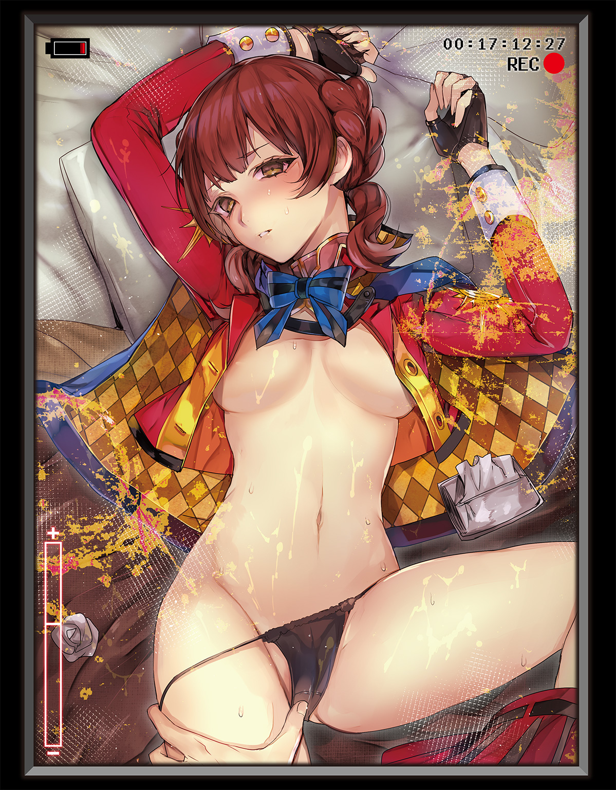

| 愛は歴史を救う～傲慢平安貴族美少女を身も心も更生させつつ、ドS金髪吸血お姉さんに調教されよ！編～ | |
| 田中創 | |
この本は縦書きでレイアウトされています。
また、ご覧になる機種により、表示の差が認められることがあります。


レクリエーションルームの天井を見上げながら、ナポ子が感慨深く呟いた。
「もう三か月にもなるのね......」
頭の左右で可愛らしく結った髪は栗色、くりんとした丸い目は今日もどこかアホっぽい。二角帽にマントがトレードマークのこの女の子は、近代ヨーロッパ最大最強の皇帝、ナポレオン・ボナパルトだ。
僕たち航時局歴史管理課――通称ＴＨＲ（Timeport-bureau Historical Retention division）のお仕事は、彼女のような歴史上の偉人エージェントと協力しながら、時震による歴史の歪みを修正し、宇宙崩壊の危機を回避することである。
ナポ子がＴＨＲの仲間になって三か月。そのドジっぷりと無駄な突撃根性でＴＨＲの足をひっぱり続けてきた彼女も、ようやく若葉マークを卒業する時期だ。
僕は手にしたコーヒーカップをテーブルに置き、「そうだね」と頷いた。
「ナポ子ももう、十分エージェントとして経験積んでるんだから、任務中迷子になったり、要救助者の偉人さんたちを困らせたりはしないでね」
そんな僕の皮肉に、ナポ子が「え」と首を傾げた。
「エージェントとしての経験？ なんでおまえ、急にそんな話をしてるのよ」
「それはだって、今ナポ子が『もう三か月にもなる』って言うから」
「何言ってんの？ 三か月って、この子の話よ」
「この子？」何を言っているのだろう。僕は首を捻る。
ナポ子は自分のお腹に優しく手を当てながら、
「お腹のこの子......。ええとつまり、ナポレオン二世になるのかしら？」
「は？ 二世って？」
「わたし、妊娠三か月目なんだって」
「妊娠!?」
びっくり仰天。思わず椅子から立ち上がってしまう。
僕の聞き違いじゃないよね？ ナポ子さん今、とんでもないこと言ったよね？
「まあねえ。わたしもそのうち全世界を支配する皇帝になるわけだし、ゆくゆくは世継ぎを育てなきゃとは思ってたんだけどね。でもまさか、こんなに早く出来ちゃったとは」
「で、出来ちゃったって、冗談とかでなく？」
「当たり前じゃない。わたしの辞書に冗談という文字はないわ」
さらりと告げた彼女の声色には、噓を言っている雰囲気はない。そもそもナポ子は他人を騙せるような器用な子じゃないのだ。信じざるを得ないだろう。
言われてみれば、その肌色率高めなミニスカ制服から露出したお腹は、以前よりも少し大きくなっているようにも見える。あのお腹の中には、新しい生命が宿っているというのか......。
「つ、つかぬことをお尋ねするけれども、その子の父親は......？」
ナポ子の人差し指が、ずいっと僕――御戸ミツキに突きつけられた。
「おまえに決まってるでしょ。わたしのパートナーはミツキだけよ」
それはそれで嬉しい言葉ではあるのだが、今は戸惑いの方が大きかった。
「いやいやまさか、あのナポレオンがご懐妊だなんて......」
「というか、出来ない方が不思議よ。初対面の吹雪の洞窟のときからして、あんだけ遠慮なく中に出されたわけだし。そのあともミツキ、毎晩のようにしょっちゅう求めてくるし」
「求めてくるって......それはむしろナポ子の方からじゃ」
「まあわたし、インペリアル超絶美少女だからね。ミツキがわたしの魅力に屈しちゃっても、それはしょうがないことだけどね」
聞いちゃいなかった。
ともあれ任務の合間を縫って、僕たちがそこそこ逢瀬を重ねているのは事実なのだ。オメデタ展開の可能性もなくもない......のかもしれない。
これはあれか。いわゆる、責任を取らねばならない流れなのか。
「どうしよう。フレドリカさんになんて言い訳すれば......。あと半年ちょっと経てば、僕パパになっちゃうってことだよね......」
そのときふと、後ろから声をかけられる。
「いいえ御戸さん。もうあなた、今月中にはパパですよ」
それは今やよく聞き慣れた、無感情な声色だった。
振り向くとそこには、小柄な銀髪娘の姿がある。物憂げな表情に、細くて華奢な手足。落ち着いた色のケープをまとったその容姿は、いつ見てもアンティーク人形のようだ。
その、不自然に大きく膨らんだお腹を除けばだが――。
「ア、アリス!? なにそのお腹!?」
「なにって......見ればわかるでしょう。私も妊娠してるんです。十か月めですよ」
「臨月ううううううっ!?」
アリスの制服の腹部を押し上げるようにして、お腹がこんもり膨らんでしまっている。
間違いない。やはりアリスまで妊娠しているようだ。正直、開いた口が塞がらなかった。
「なんてことだ......まさかアリスまで」
ナポ子もアリスのお腹を見つめながら、「ふわぁ」と目を見開いていた。
「気づかないうちに、だいぶ大きくなったわね」
「ええ。しくじりました」アリスが、ちっと舌打ちをする。「まさか御戸さんごときに孕まされることになるとは不覚の極みです。今なら凌辱系エロゲーのヒロインの気持ちがわかりますよ。『くっ、殺せ！』って感じです」
「僕の扱いオーク並み!?」
「ですがまあ......哲学者としては、生命誕生のプロセスを実践出来るというのも貴重な経験ですかね。父親がどうしようもない屑野郎という点を除けば、子育てもまあ楽しみです」
アリスの正体は、ギリシャの哲学者「万学の祖」アリストテレスだ。
「真理の探究」の名目で、これまで彼女とも少なからず身体を重ねてしまっている。だけどまさか、こんなミニサイズな女の子までマタニティにしてしまうとは......。僕ってもしかして、自分で思っているよりもどうしようもないヤツだったのか？
しばし頭を抱えていると、レクリエーションルームの扉が開く音がした。
「お、どうしたんだ隊長さん。青い顔して」
部屋に入ってきたのは、黒髪ツインテールのスタイルの良い少女だ。スリット入りのセクシーな特注制服を着こなす彼女は、古代中国の武将、呂布奉先である。
その武力にしろバストサイズにしろ、いろいろと規格外な女だと思っているのだが、今日はさらにもう一か所、規格外な部分があった。
そう――。アリスと同様に、バッチリと膨らんだそのお腹である。
「あの奉先、まさかとは思うけど、キミまで子供が出来たとか言わないよね？」
「そんな不安そうな顔すんなって」お腹を撫でながら、奉先が白い歯を見せた。「大丈夫だよ。あたし、頑張って隊長さんの子供を産むから」
「や、やっぱり僕の子供......」
「ああ。あたしと隊長さんの子なら、きっと強い子に育つだろうな。三国統一どころか、全宇宙統一すら容易いくらいの」
「どんな魔人を爆誕させる気なのよ、奉先」ナポ子が肩をすくめた。
「まあ奉先さんの子供なら、銀河統一も目指せるでしょうが」
アリスの冗談に、奉先もナポ子も頰を緩めている。
笑えないのは僕だけだった。なにこの状況。プロローグからいきなり三児のパパになることを義務付けられちゃうなんて、想像だにしていなかった超展開だ。
「おかしい......。昨日までこの子ら、妊娠のそぶりすら見せていなかったはずなのに......」
と、耳に「おぎゃああ」という泣き声が聞こえてきたのはそのときだった。
「よしよし。いい子でちゅねー」
奉先に続いてレクリエーションルームに入ってきたのは、作業着姿の赤毛の女の子だ。彼女が胸に抱いているのは、同じく赤毛の小さな赤ん坊......。生後一か月くらいだろうか。慈しむように赤ん坊をあやしている。
アメリカの「発明王」トーマス・アルバ・エジソンことアルちゃんは、すっかりママの風格を漂わせてしまっていたのである。
ああ......この流れはもう、父親が誰かなんて問うまでもないんだろうな。もはやツッコむ気すら起こらない。
「ほらミッシェル、泣き止んでくださいねー。パパですよー。パパのところに来ましたよー」
「ミッシェルっていうんだ、その子......」
「はい。ボクとたいちょーの愛の結晶です」アルちゃんが顔を赤らめた。「可愛いですよね。たいちょーに似て、ボクのおっぱいがとっても好きなんですよ」
「隊長さんはおっぱい星人だからな」奉先が苦笑する。
そりゃあまあおっぱいは確かに好きだけども、だからって赤ちゃんと一緒にされるのはどうなのか。
なんだか、ナポ子とアリスの視線が痛かった。
「ていうかええと、これはなに？ どういう状況？ 僕、いつの間にかＴＨＲの部下全員との間に子供を作っちゃってたってこと？」
「今さら何を言ってんのよ」ナポ子がむっと頰を膨らませる。「そんなの周知の事実じゃない。フレドリカを怒らせたのもそのせいだし」
「え？ フレドリカさんを怒らせた？」
敬愛すべきＴＨＲ課長、高嶺フレドリカさん。非常に聡明で美しいお姉さんであり、ゆくゆくは僕の恋人になるはずの人物である（願望）。
そもそも僕は、彼女のために過酷な任務に耐えていると言っても過言ではないのだ。そのフレドリカさんを怒らせたとあっては一大事である。早急な事実確認が必要だろう。
僕が動揺しているのを見てとったのか、アリスがニヤニヤと口元を歪めている。
「怒ったというか......あれはもう完全にブチ切れてましたね。激おこスティックファイナリアリティぷんぷんドリームでしたね」
「そうだなあ。あのフレドリカ姐さんが、まさか航時局を出ていくとは思ってなかったもんなあ」
奉先の言葉に、僕は耳を疑った。
「ちょ、ちょっと待って!? フレドリカさんが出ていったって、何？ どういうこと？」
「も、もしかして......たいちょー、ショックのあまり記憶がなくなっちゃったんですか」
アルちゃんが怪訝な表情を浮かべたが、やはり心当たりはなかった。
「いえあの、ちょうど一か月くらい前ですかね。課長さん、『ミツキくんは女の子にだらしがなさすぎる！ もう面倒なんて見てあげない！』って......それだけ言って出ていっちゃったんですよ」
「そ、そんなことがあったの」
「それ以降、課長さんとは音信不通なんです......今はどこでどうしているのやら」
神妙な表情を浮かべるアルちゃんとは対照的に、奉先の表情は明るい。
「あの美人なフレドリカ姐さんのことだ。今ごろイケメン彼氏でも捕まえて幸せになってんじゃねーの」
そんな無根拠な発言を、アリスも「そうですね」と首肯する。
「彼女にも十分幸せになる権利はあります。長年、廃棄物にも等しい屑野郎の面倒を見させられてきたわけですしね。御戸さんとかいう」
「はいはい屑野郎ですいませんでしたねえ！」
いや、アリスの暴言にツッコミを入れている場合ではないのだ。
フレドリカさんが出ていったとなれば大事件である。一刻も早く追いかける必要があった。
「こうしちゃいられない！」
僕は慌てて戸口へと向かおうとしたのだが、
「どこ行くのよ」ナポ子の手が、むんず、と僕の制服の裾をつかんだ。「フレドリカを追っかける気？ わたしたちを置いて？」
僕は「うっ」と言葉に詰まる。
そうだ。彼女たちには子供が出来てしまったのだ。それを放ってフレドリカさんを追いかけるというのは、それこそ屑野郎の所業ではないか――。
「孕ませた責任取って、ちゃんと面倒見てください」アリスが微笑む。
「ああ。出来れば隊長さんには近くにいてほしいな」奉先もそう言う。
「もうこの際、二人目三人目も作っちゃいましょう」と、アルちゃん。
四人の偉人少女たちに詰め寄られ、僕は頭を抱えるしかなかった。
これはおかしい。決定的に何かがおかしい。あの愛情溢れるフレドリカさんが、僕に愛想を尽かしてしまうなんて不条理そのものではないか。
「ほら。いい加減観念するの。おまえの相手はフレドリカじゃなくて、わたしたちよ」
ナポ子が、僕をぎゅっと抱きしめてくる。
ふわりと漂う石鹼の香り。彼女の柔らかな感触は心地いいものだったけれども、さすがにここまで体を押しつけるように抱きつかれると息苦しさを覚える。しかしなぜか僕はそれを振り払うことが出来なかった。身動きができなくなってしまったのだ。たとえるなら、そう......これはもう金縛りだ。
「うっ......ちょっと......離れて」
「離れないわよ。責任を取ってもらうまでは」
ナポ子の両腕が、万力のごとく僕を締めつけた。なんだこれは。どういうことなんだ。
両足が泥沼に嵌ったかのようにズブズブと床に沈んでいく。心臓がものすごい速さで脈動し、全身から嫌な汗が吹き出していた。
悪夢だ。これは正真正銘の悪夢だ。ああもう、夢なら早く醒めて――！
そう思った瞬間、僕は「はっ」とまぶたを開けた。
窓から差しこむ朝日に、白い壁。壁に掛かった航時局制服。写真立てに飾ったフレドリカさんのポートレイト。どうやらここは、僕の個室らしい。ベッドで横になっていたようだ。
「まさかの夢オチ......。でも、この重さは何......？」
身体がまったく動かない。なぜか夢の中の金縛りがいまだ続いているかのようだ。非常に息苦しく、なんだかすごく暑苦しいのだ。
ふと、自分の身体に目線を向けてみると、
「あ、やっと起きたわね」
ナポ子がいた。僕のお腹の上に乗っている。息苦しさの原因はこれか。
「な......なにしてんのキミ？ 重いんだけど」
「その言い方はないわよね」ナポ子がむっと頰を膨らませた。「もうすぐミーティングが始まるっていうのに、ミツキ起きてこないんだもの。だから起こしに来てあげたっていうのに」
「そうですよ御戸さん。こっちは朝から気分最悪なんです。あなたの気持ち悪い寝言を延々聞かされた私たちの身にもなってください」
アリスもいた。なぜか僕の左腕にくっつくようにして添い寝している。
「寝言って？」
「なんか隊長さん、妊娠がどーのこーの呟いてたな。あたしらを孕ませたとかなんとか......。どんだけ卑猥な夢みてんだよ」
奉先だ。ベッド脇の床に両膝をつき、僕を覗きこんでいる。そのボリューム満点のバストを僕の右腕の上に乗せているのは、わざとなのだろうか。
「もしかしてたいちょー、いろいろ溜まってるんですか？ ボクでよければその、性欲の処理をいたしますのでー......」
ナポ子の背後から、アルちゃんの声が聞こえてきた。何をしているのかと思いきや、寝間着の上から僕の大事な部分を擦っているようではないか。
「タンマタンマ！ 大丈夫だから！ 僕もう起きるから！」
部下たちを身体から引き離し、ようやく僕は上体を起こす。なるほど、金縛りの原因は彼女たちか。四方からこれだけ密着されていれば、悪夢を見てもおかしくはないだろう。
「それで、今日のミーティングの内容ってなんだっけ」
僕の質問に、アリスが応える。
「寝ぼけるのもいい加減にしてくださいよ。昨夜、また時震が観測されたんじゃありませんか」
「ああ、そうだった。新しい任務だっけ」
頰を両手で叩いて、気持ちを切り替える。
任務を成功させれば、フレドリカさんも僕を褒めてくれるはず。さっきの光景を正夢にしないためにも、誠心誠意努力しなければ。
枕元のタキオンウォッチを手に取り、それを左手首に装着する。
さてさて、今回はどんな時震トラブルが僕たちを待っているのやら。
１００８／10／12 平安京 土御門殿 寝室
平安時代の京都といえば、何を想像するだろう。
荘園？ 摂関政治？ 国風文化？ 平等院鳳凰堂？
僕が想像していたのは、貴族がのんびりと暮らしているイメージだった。烏帽子を被ったオジサンたちが呑気に蹴鞠なんてしながら、悠々自適に暮らしているような時代。とってもピースフルな世の中だ。
今回僕たちＴＨＲ（航時局歴史管理課）が任務のために訪れたのは、まさにその平安時代のど真ん中。十一世紀初頭の京都だ。藤原氏が政治の実権を握る、華やかな平安京である。
戦争も混乱もない平和な世界なら、きっと今回の任務は楽にこなせるだろう――。僕はてっきりそんな風に思っていたんだけれども。
「ふぅん......やぁん♡」
眼前の少女が、火照った吐息を漏らした。
彼女はこの寝殿造の大邸宅――土御門殿の主だ。多数の平屋棟と優雅な庭園からなるこの巨大な御殿には、常時何十人もの使用人たちが雇われているらしい。
要するに彼女は、由緒正しい家系に生まれた、高貴なお貴族様というわけだ。
「あかんよぉミツキくん。んっ......そんなとこっ......」
「あの、変な声出さないでくれる？」僕は声を潜め、彼女にそう告げる。
いくらここが御簾付きの寝室とはいえ、甘ったるい声を上げられてしまうのは非常にマズイ。お屋敷のひとたちにあらぬ誤解をされてしまいそうだからだ。うちのお嬢様に手を出す不届き者めー、とかそんな風に。
「せやかてなあ」少女は柔和な目を細めた。「変な声が出ちゃうんは、ミツキくんのせいなんよ？ 急におっぱい触ったりするから」
「え、あ、そうだったの」
気づけば確かに僕の手のひらは、彼女の着物の胸元に添えられてしまっていた。もちろん故意ではない。ちょっとしたアクシデントだ。
僕は慌てて手を離し、「ごめん」と頭を下げる。「その、十二単だっけ？ 和服の着替えを手伝うなんて初めてだからさ。勝手がよくわからなくって」
「ええよええよ。ミツキくんも男の子やもんな。偶然を装って女の子のおっぱい触りたくなる気持ちもわかる」
そういうわけじゃないんだけど――と言いかけて、僕は言葉を呑みこんだ。
僕の脱がせ方が拙かったせいか、彼女の着物は胸元を大きくはだけた格好になってしまっていた。そこから覗く慎ましやかな膨らみは、確かに魅力的ではあるのだ。ぷるぷるですべすべしていて、僕の視線を惹きつけてやまない。
だって、ねえ？ しょせん僕も、日々性欲を持て余す十九歳男子なのだ。女の子のお着替えの手伝いなんて、平静を保ったまま出来るものじゃない。
「ねえねえ」蕩けたような口調で、少女が続ける。「やっぱり男の子って、初対面の女の子の裸でも興奮するもんなん？ おっぱいに吸いつきたいとか思うもんなん？」
「い、一般的にはそう、だね。たぶん」
「ミツキくん的には？」
「いや、その、僕は紳士だから、そこまでは思わないけど」
はい噓です。実はすごく興奮してます。まさに吸いつきたいと思ってしまっています......！
だいたい、こんなに可愛い女の子の着替えを間近で見ておいて、興奮しないという方がむしろおかしいのだ。ジェントルメン的な仮面を維持するのも楽じゃない。
くっ、鎮まれ、我が下半身っ......！
胸元から必死に目線を逸らそうとする僕を見つめながら、少女は「あはは」と頰を緩めた。
「めっちゃ動揺しとるなあ、ミツキくん」
「ど、動揺なんてしてないよ？ 冷静だよ？ 動かざること山の如しだよ」
「確かに、股間は山みたいになってるなあ」
少女にズボンの上からＪｒ．を撫でつけられ、僕は「はうっ」と声を上げてしまった。
「ななな、何するの!?」
「男のひとのって、こないに大きくなるんやね。みち姫びっくりやわ」
少女――みち姫ちゃんが屈託なく笑う。
そう。彼女はお姫様だった。汚れを知らぬはずの、平安時代のやんごとなきお姫様だ。
そんなお姫様が、着物をはだけてマイサンを撫でている......。外はまだ日も高い時間帯だというのに。
今回の任務は、最初からフルスロットルのようだ。これは大変にまずい状況である。
「どうせならウチのおっぱい、もっと触ってみる？ ミツキくんなら別にええよ？」
「い、いやいや。そういうのはダメでしょ！」
その手を引き剝がすと、みち姫ちゃんは「ダメなん？」と首を傾げる。
「ダメだって！ 僕はキミを助けるためにここに来たんだから！」
「ああ、なんやさっきそんなこと言うとったね。てぃー・えいち・あーる、やったっけ？」
「そう。ＴＨＲ」僕は努めて真面目な顔で頷いた。「任務中に要救助者の女の子相手に鼻の下を伸ばしているようじゃ、ＴＨＲの隊長失格なんだから」
いったいどの口が言うのかと文句をつけられそうな台詞だが、これでも僕――御戸ミツキは大いに反省中なのである。
僕がこれまで、任務中どれだけ女の子に鼻の下を伸ばしてきたかは、前回の活動記録（『愛は歴史を救う～わたしの辞書に不可能という文字はないのよ編～』）をご覧いただければおわかりになると思う。正直、隊長失格の誹りを受けても仕方ないかもしれない。
こんな体たらくでは、いつフレドリカさんに見放されてしまってもおかしくないのだ。今後は濡れ場なしで〝時震〟トラブル解決を図っていこう――。今回の僕はそう固く決意して、この時代にやってきたというわけなのだが。
みち姫ちゃんの潤んだ目が、僕を見上げた。
「プレイボーイに翻弄される貴族のお姫様......。実はウチ、そういうのに憧れてるんよ。その手のトレンディな恋愛小説を毎晩読んでたら、見事に感化されてしまってなあ」
いくらお貴族様とはいえ、みち姫ちゃんも年頃の女の子だ。恋愛ものに興味があるというのも、さほどおかしいことではないだろう。
「でもトレンディな恋愛小説って、この時代にそんなのあるの？」
「源氏物語っていうんだけど、ミツキくん知らへん？」
僕は「ああ」と頷いた。
「源氏物語って、あの古典のやつだよね」
「古典？」みち姫ちゃんが首を傾げる。
彼女の反応で、言い間違いに気づかされてしまった。そういえばここは千年前の世界だ。源氏物語って、ちょうどこの時代の作品なんだっけ。
「ごめんごめん。僕の時代だと古典になってるからさ」
「そうなん？ 有名になってるん？」
「うん。確か世界最古の長編小説ってことで、世界中のひとが知ってる作品だと思うよ」
「やっぱりなあ」みち姫ちゃんが朗らかに笑う。「主人公の悲惨な境遇は女のウチでも共感できるくらいやし、悲恋の描き方は抜群に上手いし、平安京で一番のラブストーリーだとは思っとったけどなあ......。そうかあ。未来の世界ではそんなに有名な作品になってるんやなあ」
よほど源氏物語が好きなのだろうか。彼女はまるで、自分が賞賛されているかのような喜びを見せていた。素直な子なんだなあ、と僕も微笑ましい気分になる。
「そもそもウチ、結構な箱入りやからね。同年代の男の子と遊んだこともなくてなあ......。あの手の恋愛小説を読んでると、ついつい胸キュンしてしまうんよ」
「胸キュンですか」
「源氏物語って、ちょっとエッチな場面を想像させるシーンもあるやん。ああいうのにも憧れてしまって」
みち姫ちゃんが、ぽっと頰を朱に染める。
「だからこう、な。寝床で小説読みながら、毎晩ひとりで悶々と自分を慰めてたりしてな......。暗い女やろ？」
「暗いどころか、相当あけっぴろげな女の子だと思うんだけど」
普通の女の子は、初対面の男に自分の性体験を語ったりしない。
このみち姫ちゃんという女の子、経験値が低すぎて、男性に対する警戒心がゼロなのだろうか。困ったものである。
「でもこうやってミツキくんが来てくれたから、存分に体験出来るな。さあ、遠慮なく揉みしだいてくれて構へんよ」
「いやあのね......」僕はため息をつく。
せっかく真面目に任務に励む決意をしてきたというのに、これですよ。初っ端からこの状況ですよ。ほぼ初対面の女の子と、おっぱいを揉むだの揉まないだののやり取りをしちゃってるわけですよ。
ああ、人生ってままならない......！
「とにかく、僕が手伝うのは着替えだけだから」
僕は鉄の意思のもと、みち姫ちゃんを突き放すことにした。
彼女はしばらく不服そうに唇を突き出していたが、すぐに「まあエロスはいつでも出来るしなあ」と表情を明るくする。細かいことはあまり悩まない性格のようだ。
「それにしても、タイミングよくミツキくんが来てくれて、本当に助かったわ」
「出会って二秒で着替えの手伝いを命じてきたもんね......。そんな偉人、みち姫ちゃんが初めてだよ」
みち姫ちゃんが照れくさそうに「いやあ」と頰をかく。決して褒めてはいないはずなのだが。
「紫も最近は休みがちでなあ。ひとりじゃ服も脱げんところだったんよ」
この十二単という着物は、布の枚数が多くて構造は複雑だし、裾が長くて結構な重量がある。確かに、着替えるのは手間がかかりそうだった。
「この時代のお姫様って、着替えも他人の手が必要なんだね」
「ウチに関して言えば、着替えだけやないけどね」みち姫ちゃんが続ける。「ウチな、基本は他人任せにする主義なんよ。掃除も炊事も洗濯も、ぜーんぶ誰かにやってもらうことにしてる。もちろん殿上人としての仕事もな」
「殿上人としての仕事って？」
「ええと、帝と会議をしたり、儀式を執り行ったり、地方の行政官を任免したり、租税を管理したりとか......そういう、諸々の政治的な業務のことやな」
彼女の仕事は、朝廷で政を行うこと。何を隠そう、みち姫ちゃんは、この時代では著名な政治家だったりするのだ。
「......まあ、全部他人任せやから、詳しくはわからんけどなー」
にへら、と笑うそのユルユルな表情は、まったく政治家には見えないけれども。
「政治家なのに仕事を他人任せって......。それでいいの？」
「ええんよ。会議に出るのも、書類に目を通すのも、みんな代理の者にやらせてる。そもそもウチに文句言える人間なんて京にはおらんしな。何も問題ないやろ」
「問題ないのかなあ、それ」
「実際のところウチの仕事は、食って寝て小説を読むことだけやね」
このお姫様、どや顔でそんなことをのたまった。どうしようもないダメ人間発言である。
「ずいぶんといいご身分だね、みち姫ちゃんは」
「そりゃあそうや。だってウチ、藤原道長やもん。超金持ちなんやもん」
僕が頷くと、みち姫ちゃん――藤原道長はにっこりと微笑んだ。
藤原道長。平安時代の京都で栄華を極めた、日本史上屈指のお貴族様である。摂政やら太政大臣といった高い地位をほしいままにした、いわばエリート中のエリートだ。平安時代最大のセレブと言っても過言ではないだろう。
しかしそんなお貴族様ですら、時震の影響から逃れることは出来なかったらしい。例によって、こうしてまた妙齢の女の子に変わってしまったのだ。
「日本史の教科書にも載ってる藤原道長が、こんな可愛いお姫様になっちゃっているとはね」
「可愛いって......あはは。ミツキくんは上手やなあ。そんな褒めんといてよ」
みち姫ちゃんが、ぱたぱたと手を振る。
綺麗に切りそろえられた前髪に、おっとりした優しげな目元。潤う唇はほんのり桜色だ。貴族のご令嬢だけあって、蝶よ花よと大切に育てられてきたのだろう。瑞々しい素肌は実にきめ細やかで、長い黒髪もよく手入れされている。
頭に挿した蓮の髪飾りも華やかで美しく、身に着けている着物も豪奢の一言。彼女はまさに、古式ゆかしい「お姫様」といった外見の女の子なのである。
これで性格さえもう少し真面目だったら何の問題もなかったろうに――と思ってしまう。
「ところで」みち姫ちゃんが口を開いた。「さっき言うとったよね。ミツキくんは、はるばる未来の世界から、ウチを助けるために来てくれはったって。あれってどういう意味なん？」
「ああ、それは......」
みち姫ちゃんに、ＴＨＲの仕事を詳しく説明することにした。
時震という現象によって歴史がねじ曲がり、宇宙が消滅の危機に瀕していること。
今回の事象変異の中心が、他でもないみち姫ちゃんであること。
事象変異を修正するためには、みち姫ちゃんが陥っているとある状況を改善する必要があること――。
ただ、懇切丁寧に説明しても、彼女は「ううーん？」と首を傾げるばかりだった。
そもそも相手は千年も前の時代の女の子なのだ。こんなＳＦめいた話を信じろという方が無理なのかもしれない。
「ようわからんけども、ともかく」みち姫ちゃんがぽん、と手を叩く。「助けに来てくれはったってことは、要するに、しばらくウチの世話役になってくれるってことやろ？」
「え？ 世話役？」
「ウチは大歓迎やで。世話役はいくらおっても困ることはないしなあ」
とりあえず僕は「まあそういうことで」と頷いておくことにした。
任務の達成のためには、どのみち彼女の近くにいる必要があるのだ。お世話係という立場ならばいろいろと都合がいいだろう。
みち姫ちゃんはにこにこと笑いながら、
「それじゃあ主としての命令や。とりあえずミツキくん。ウチのおっぱい触ってみようか」
「話そこに戻るの!?」
「いわゆる『身分違いの恋愛』って話やね。源氏物語でいえば、光源氏と明石の御方みたいな......。ウチ、一生に一度はああいう経験がしてみたくてなあ」
言いつつ彼女は、僕にしなだれかかってくる。肘のあたりにほのかな膨らみを感じ、股間のミツキＪｒ．はまたしてもムクムクと大きくなってしまう。
「貴族と召使いの一夜のあやまち......。ええやん。いけるやん。これは源氏物語を超える名作になる気がするなあ」
「現実とフィクションを混同しちゃダメ！」
首を振る僕には構わず、彼女は僕の手をその胸元へと導いてしまう。
ふにょん、という感触。手のひらに収まるくらいのサイズとはいえ、みち姫ちゃんのおっぱいはふんわり柔らかい。僕の鉄の意思は早くも砕け散りそうになっていた。
「恋愛ゴッコみたいなもんやと思って。ほら、好きなだけ触っていいんよ」
「こ、これは恋愛ゴッコどころじゃないよみち姫ちゃん!? もはやその先の行為だよ！」
「まあまあええやん。恋愛にはいろんな形があるって紫も言っとったし――」
みち姫ちゃんがＪｒ．に手を触れようとしたその刹那、
「ちょっと、さっきからなにやってんのよ！ おまえたちっ！」
御簾の向こうから、甲高い声が響いてきた。
啞然としているうちに御簾が強引に開かれ、見知った顔の少女が現れる。
「ちょっとミツキ！ その女の寝室に行ったまま、なかなか帰ってこないと思ったら......！ なんで乳繰り合いを始めてるのよ!? バカじゃないの!?」
偉そうなマントに、偉そうな二角帽。ミニスカ軍服風にアレンジされた航時局制服の女の子が、眉を吊り上げて僕を睨みつけていたのである。
「いや違うんだよナポ子。これは着替えを手伝っているだけで......」
「どういう手伝い方すれば、おっぱい鷲づかみすることになるのよ！」
「なんや、うるさいなあ」みち姫ちゃんが眉をひそめた。「ウチとミツキくんの秘め事、邪魔しないでくれん？ アホ子はお呼びじゃないんや」
「なによアホ子って!? 馬鹿にしてんの!?」
二角帽の少女がさらに怒気を強めてしまったので、僕は間に入ることにした。
「あのね、みち姫ちゃん。この子はアホ子じゃなくてナポ子だから......」
「アホ子でもナポ子でもないわよ！ わたしはナポレオン・ボナパルト！ 近代ヨーロッパ最大最強の皇帝なのよ！ 全時空で最も偉いのよ！」
ナポレオン・ボナパルト――通称ナポ子。ドジで泣き虫でいろいろポンコツなフランス皇帝陛下である。全時空で最も偉いとか自称しちゃうあたり、とにかくプライドだけは死ぬほど高い。
彼女がＴＨＲのエージェントになって早三か月。同僚として一緒に活動するようになっても、その上から目線の物言いは相変わらずだった。
「そもそもね！」ナポ子がみち姫ちゃんを睨みつける。「ミツキはこのわたしのパートナーなの！ 田舎貴族ふぜいが、勝手に手を出すんじゃない！」
「なんなんアホ子。顔真っ赤にして。ミツキくん取られたのそんなに悔しいん？」
「く、悔しいとかそういうんじゃないわっ！」
ナポ子が思いきり頰を膨らませていた。あれは心底悔しいときの顔である。
それを見上げるみち姫ちゃんの表情は、実に楽しげだった。
「過度なジェラシーはみっともないで。光源氏だって、『嫉妬はほどよく焼くのがいい』って言っとるし」
「だ、だからジェラシーとか、そういうんじゃないって言ってるでしょう！」
「やったら、ミツキくんが誰と乳繰り合おうと関係ないやろ。そもそもアホ子とミツキくんはただの同僚で、別に恋人同士ってわけでもないんやし」
「ぐっ......」ナポ子が歯嚙みする。「ミ、ミツキが好きなのはわたしのおっぱいだから！ これは世界の常識だから！ ナポレオン法典にも書いてあるし！」
「あからさまな噓言っちゃダメでしょ!?」思わずツッコんでしまった。
ナポ子は眉を吊り上げ、依然としてみち姫ちゃんを睨みつけている。
「そ、そもそもおまえごとき貧乳、わたしの敵ですらないわ」
「貧乳......？ それアホ子が言うん？」
みち姫ちゃんが首を傾げていたが、僕も同感だった。みち姫ちゃんのおっぱいも割と小ぶりな方だが、どちらかといえばナポ子の方がやや小さいような......。
ナポ子が「ともかく！」と強引に話を変える。
「みち姫。わたしたちは、おまえの腐った根性を叩き直すためにやってきたのよ！」
「腐った根性？」
不思議そうな表情のみち姫ちゃんに、ナポ子が指を突きつける。
「藤原道長......おまえ、ちょっとは名の知れた政治家なんでしょ？ なのに、仕事は人任せだわ、毎日遊び呆けているわ。お、おまけに、わたしのパートナーを誘惑するわ......！ そういうねじ曲がった性根を、わたしたちが修正してやるって言ってるの！」
「むむう。ひどい言われようやなあ」みち姫ちゃんが肩を竦めた。
しかしまあ、ナポ子の言うことは事実なのだ。時震の影響なのか、藤原道長は「金と権力を持て余すぐうたら人間」になってしまったらしい。本来の歴史で行っていたはずの施策も行わず、毎日豪遊しているのだそうだ。それこそ、平安京の財政が傾いてしまうほどに。
そう。今回のＴＨＲの目標は、「みち姫ちゃんの生活態度を更生させ、まともな政治家に仕立て上げること」なのである。
タキオンメーターの歴史変異率も現時点で四十パーセントを越えている。これは結構なレベルだった。早いところみち姫ちゃんの性根を叩き直さないと、宇宙がドカンと爆発してしまいかねないのだ。
「ていうかミツキ。おまえまでその女を甘やかしちゃダメでしょ」
ナポ子の怒りの矛先が、僕の方へ向けられた。
「このダメ女を更生させるのがわたしたちの仕事なんだから。そもそも着替えなんか手伝うべきじゃないのよ」
「いやでも、十二単の着替えはひとりじゃ無理だと思うけど」
「おまえはいつも甘いのよ。モンブランにハチミツとカラメルソースとガムシロップをたっぷりかけたくらい甘い」
「胸やけしそうなたとえ......」
「要するにわたしが言いたいのは、相手が女の子だからって甘やかしてばかりいたんじゃ、いつまで経っても任務が終わらないってことよ」
む、と僕は言葉に詰まる。
ナポ子の言うことも一理ある。箱入りで育ったダメな子を更生させるには、ときには厳しく接することも必要なのだ。
「でもそういうナポ子自身、十八世紀のアルプスじゃ、フランス軍のみなさんに相当甘やかされてたような気がするけども」
そう呟く僕を、ナポ子が「黙れ」と一蹴する。この皇帝陛下、都合の悪いことには耳を貸さない主義なのだ。
「とにかくみち姫、このナポレオン・ボナパルトが、優秀な政治家のなんたるかをおまえに叩きこんでやるわ！ 光栄に思うことね！」
「いらんお世話やなあ」みち姫ちゃんが鼻で笑う。「そんなことより、ウチはミツキくんとの秘め事の続きを楽しみたいわ。ねえ、ミツキくんもそう思わん？」
「え、いや。さすがにそれは」
「ええやん。お互い仕事のことなんて忘れて、楽しも？」
反論しようと開きかけた僕の口を、それより早く、みち姫ちゃんの唇が塞いでしまった。
「ちゅ......んちゅううっ......」
「あああああ！ ちょ、ちょっと、なにやってんのよバカ姫えええええええっ！」
寝室内に、ナポ子の絶叫がこだました。
みち姫ちゃんの柔らかい舌先を口腔内に感じながら、僕は思う。
ああ、今度の任務もやっぱり一筋縄ではいかなそうだなあ――と。
１００８／10／12 土御門殿 大広間
ナポ子を宥めているうちに、早くも日は傾いてしまった。
「とりあえずご飯でも食べへん？」というみち姫ちゃんの提案に従って、僕たちは大広間に移動することに。案内された僕たちを待っていたのは、見るも豪華な夕餉だった。並べられた三つのお膳の上には、色とりどりの料理が並んでいたのだ。
思わず「すごっ......！」と息を呑んでしまう。
綺麗に盛りつけられたお刺身に、茄子の焼き物。花びらの形に整えられた野菜の煮つけ。松茸のお吸い物は、とてもいい香りがする。ほかほかの白米など、平安時代の一般庶民ではまず口にすることが出来ないもののはずだ。
「まさか千年前の世界で、こんな豪華な食事にありつけるとは......」
現代人である僕の目から見ても、十分に美味しそうに見える。ちょっとした料亭レベルだろう。
毎日毎日このクラスの料理を味わっているみち姫ちゃんは、やっぱり超がつくほどお金持ちなのだ。
「ミツキくんも遠慮なく食べてな。世話役扱いとはいえ、わざわざ遠いところから来てくれた客人なんや。京都の味を存分に楽しんでな」
「あ、どうも。いただきます」
みち姫ちゃんに礼をのべ、お刺身を一切れ口に運ぶ。ほどよく脂ののったアマダイだ。口の中で蕩けそうな食感。これが料理マンガだったら、涙を流しながらベタ褒めリアクションをしているところだ。たぶん見開きで。
「確かに見事な料理ではあるわね......。フランスにも負けないくらい」
ナポ子も頷いていたが、言葉とは裏腹にどこか気もそぞろだ。ちらちらと横目で庭の方を見ている。僕は気になって声をかけてみた。
「どうしたのナポ子。和食は口に合わない？」
「そうじゃないわよ。刺身もお漬物も好きだけど......ちょっと、アレがどうしても気になって」
言いつつ、ナポ子は屋敷の外を指さした。
庭園の向こう、このお屋敷のすぐ隣の広場に、何やら大勢のひとが集まっているのが見える。持ち物や格好から判断するに、大工さんのようだ。やぐらを組み、大きな建築物を建てている様子が窺える。
「昼間からあそこで、ずっと何かを作ってるわよね。あれ何してるの」
「ああ。あれはなあ、お寺を建てさせとるんよ」
「お寺？ おまえが建てさせてるの？ 自分の家の隣に？」
「近くて便利やん」みち姫ちゃんが屈託なく笑う。「それに、下々の者があくせく働くのを見ながら御馳走を食べるんは、実に趣があるしなあ......。ミツキくんもそう思わん？」
「わりとド屑な発言だね、みち姫ちゃん」
そんな僕のツッコミなどまるで聞いていないという体で、みち姫ちゃんは「早く出来上がらんかなあ」と呟いている。
「あの法成寺が完成したら、藤原家の評判もうなぎ登りやろうなあ。なんたって、平安京で一番大きな寺になる予定やし」
法成寺......。聞き覚えのないお寺の名前だ。そんなの京都にあったっけ？
僕が首を傾げていると、手首のタキオンウォッチから、通信アプリ起動のサインが聞こえてきた。
『無知で無能で可哀相な御戸さんのために、私が解説してあげましょう』
手首のあたりに、少女の立体映像が浮き上がる。ケープ姿の、眠たげな目の銀髪少女だ。彼女はギリシャの大哲学者にしてＴＨＲオペレーター、アリストテレスである。
「いやアリス、開口一番に可哀相とかやめてくれない？」
『だって事実じゃないですか』アリスが鼻を鳴らす。『仮にも歴史管理課の一員のくせに、歴史的建造物の名称すら知らないなんて呆れ果てますよ。あなたの知能はミドリムシ並みですか』
「単細胞生物と比べないで!?」
『いえ。御戸さんなんかと比べたらミドリムシに失礼でしたね。光合成で酸素を作っているぶん、あなたよりは人類の役に立っています』
相変わらずの罵詈雑言に、僕は頭を抱えた。
このアリスという女の子は、あらゆる知識を有する〝博識〟の偉人なのだ。解説役としては優秀ではあるのだが、毎回もれなく僕のハートを抉ってくるのがキツイ。
『ともあれ法成寺というのはですね』アリスが続ける。『藤原道長の手によって建立された浄土宗の寺院です。現代では焼失してその記念碑だけが残されていますが......平安時代ではかなり大規模な寺院だったそうですよ。道長の通称〝御堂関白〟というのも、その法成寺を建てたことに由来しているんです』
そうやって歴史解説をするアリスの立体映像を、みち姫ちゃんが横合いから興味深げに覗きこんできた。
「ははあ。なんやこの銀髪の子、ちっちゃくて可愛いなあ。若紫みたいやん」
「可愛いのは外見だけなんだけどね」
アリスが僕を『うるさいですよ』と睨みつける。
『ともかく、法成寺は藤原道長のシンボルというわけです。そうですね、みち姫さん？』
「そうそう。ウチのシンボルなんや」みち姫ちゃんが頷く。「御堂関白の名に恥じぬよう、中身も立派にせんといかんからなあ。奈良の大仏に対抗して、でっかい立像を置こうとも思ってる」
「立像？」
「そうや。全身黄金製の、めっちゃド派手なやつ」
「ド派手な黄金像ねえ......。どんなの作る気なのよ」
ナポ子の質問に、みち姫ちゃんが「待ってました」とばかりに頷いた。
「そりゃあもちろん、ウチの像やで。キュートでラブリーでセクシーなやつ」
「キュートでラブリーでセクシー......」ナポ子が顔を引き攣らせる。
藤原道長が黄金像を建てさせようとしていたなんて話、まるで聞いたことがない。立体映像のアリスも『なんですかそれ』と眉をひそめていた。
『法成寺に収められていたのは、木製の阿弥陀如来像だったはずですけどね。藤原道長が自分をモデルにした黄金像を作ったなんて、正しい歴史には存在しない事態です』
となると、これも時震の影響なのか。この並行歴史も、順調にねじ曲がりつつあるらしい。
「あの光源氏でさえ『逆さまにゆかぬ年月よ、老いはえのがれぬわざなり』って過ぎ去る年月を嘆いてるやん？ だからウチも考えたんよ。未来永劫、藤原の名をこの国に刻みこむにはどうすればいいかって」
「それがまさか黄金像......」
「せや。この偉大なる藤原道長は、死後も黄金像としてこの国の行く末を見守っていく予定なんよ」
得意げに笑うみち姫ちゃんに、僕は気になったことを尋ねてみる。
「ねえみち姫ちゃん。その黄金像って、どのくらい費用かかるもんなの」
「大したことないよ。朝廷の予算の十年分くらいやし」
あっけらかんと、みち姫ちゃんが言いきった。
「十年分!? 国家予算の十年分!? そんな大金、個人で持ってるの!?」
「なに言うてはるの。法成寺の建築は個人事業やなくて、国家事業なんよ。国のお金を使うに決まってるやん」
「じゃあ国民の血税を搾り取って、その派手な黄金像を作るってこと？」
「せやね。必要経費ってやつやなあ」
「どう考えても不要でしょ！ 現代なら間違いなく非難囂々だよ!? 政治とカネの問題は根が深いよ!?」
「いやいや、そんなことはないやろ。朝廷の役人さんたちもみんな『姫様のアイディアは素晴らしい！』って、お金出すことに快く賛成してくれはったそうよ？」
果たしてそれは、本当に本心からの賛成だったのだろうか。藤原道長という絶対権力の前に、ただ屈しただけなのではないだろうか。つい訝しんでしまう。
法成寺の建築現場を遠目に見ながら、僕はため息をついた。
ここまで開き直った公金の無駄遣いに対して、朝廷の誰も口を出せないって、ある意味すごい世界だ。腐敗ここに極まれりである。
アリスが口を開いた。
『明らかに無駄なモノに対して、湯水のごとくお金を使えてしまう......。これがみち姫さんの〝豪奢〟の才能というわけですね』
偉人はみな、偉人と呼ばれる所以となった才能を有している。それが時震の影響で人智を超えた異能になってしまうのは容易に起こりうることなのだが――。
「無駄遣いって才能なの？ むしろマイナスイメージが強いんだけど」
『臆せずお金を運用することが出来るという点では、間違いなく才能ですよ。言い換えれば、並外れた度胸と決断力といいますか。お金持ちにとってはなくてはならない才能です』
「そういうもんかなあ」
『まあ、小市民である御戸さんには、一生かかってもたどり着けない境地でしょうけどね』
一言余計だった。
『しかし、今回のようなケースだと、必ずしも楽観視できる才能ではないようですが』
アリスの予測によれば、みち姫ちゃんがこのまま無駄にお金を使い続けていけば、この世界の平安京は半世紀も経たないうちに滅んでしまうらしい。
『朝廷が滅びれば、そのあとの日本の歴史は大きく変わることになるでしょう。ご存じの通り、不安定な並行歴史はさらに無数の並行歴史を生むものです。そうなればもう、歴史変異率の上昇を止めるのはほぼ不可能です』
つまり宇宙の破滅まで待ったなし、というわけだ。
「並行歴史云々を置いても、日本人としては放っておけない状況だよね......」
トップがこんなにやりたい放題じゃ、いくらなんでも国のひとたちが可哀相だ。みち姫ちゃんには、どうかもっとまともな政治家になっていただきたい。
どうやらナポ子も同じように思ったらしく、
「おいこら、みち姫！」床をどん、と拳で叩いた。「おまえは上に立つべき人間のなんたるかを、まったく知らないようね」
「まるで自分は知ってる、みたいな言い方やなあ」
「そりゃあ知ってるわよ。わたしフランス皇帝だし。カリスマの達人だし」
ナポ子はそう言い放つと、颯爽と立ち上がった。みち姫ちゃんを偉そうに見下ろし、びしり、と指を突きつける。
「そもそもね、上に立つ人間というのは、行動でひとを導くものなの。政治家なら領土を広げるなりひとびとの生活をよくするなりして、民衆の精神的な拠り所にならなきゃダメ」
ナポ子のもっともらしい言葉に、みち姫ちゃんは「はあ」と口を半開きにする。
「そんなこと偉そうに言われても、胡散臭いだけやなあ......」
「何が胡散臭いのよ！ わたしみたいに有能な政治家、そんじょそこらにはいないわよ!?」
「それが噓くさいんや」みち姫ちゃんが煙たげに首を振る。「だってアホ子は、どっから見てもアホの子やし。おおかた、旅先で迷子になって部下に迷惑かけるタイプやろ」
大正解だった。みち姫ちゃんには意外と、ひとを見る目があるらしい。
ナポ子は顔を真っ赤にして、「違うわよ！」と叫ぶ。
「わたし、これでもすっごく有能な皇帝だったもん！ 戦争には勝ちまくったし、世界史に残る法典作ったし！」
「ほんとかなあ」
「そもそもお寺なんか建てて喜んでるようじゃ二流よ二流！ 真の政治家は、建築物じゃなくて業績で語られるものよ！ わたしみたいにね！」
ナポ子が、これでもかとばかりに薄い胸を張った。傍で見ている僕ですら、痛々しいくらいの自画自賛っぷりである。
手元のアリスが『まあでも』と呟く。
『ナポレオンもパリのど真ん中に凱旋門を建てていましたけどね。パリの名所の話になるとナポ子さん、鬼の首取ったようにいつも凱旋門の話を始めますけどね』
同僚からの仮借ないツッコミに、ナポ子が「うっ」と言葉に詰まった。
「それはそれ、これはこれよ！」
「ダブスタ発言......」
ぼそりと呟いたら、僕も思いきりナポ子に睨まれてしまった。おお怖い。
「ともかく、みち姫は無駄遣い禁止！ ちゃんとお仕事もする！ わたしをお手本に、立派な政治家を目指すこと！」
「ええー......」みち姫ちゃんが、ものすごく嫌そうな表情を浮かべた。「というか、なんで今日会ったばっかりのアホの子に、そんな上から目線で偉そうなこと言われなきゃいけないん？」
「偉そう、じゃないわよ。本当に偉いの。わたしナポレオンなんだから」
ナポ子さん、清々しいほど無根拠に自分の偉さを主張していらっしゃる。
しかし千年前の日本の貴族に対しては、ナポレオン・ボナパルトの威光も通用しないようだった。みち姫ちゃんは「だからなんやねん」と首を傾げている。
「百歩譲って、あんたが本当に別な世界で立派な政治家だったとしても、や」
みち姫ちゃんが、ナポ子を挑発的に見上げる。
「ここは平安京やで。京の貴族には、京の貴族のルールがある」
「ルールってなによ」
「京を統治する貴族には、それ相応の特別な才覚が求められるもんなんや。それをわからん外国人さんに、上に立つべき人間が云々と語られたくないなあ」
眉をひそめるナポ子に、みち姫ちゃんが、にっと口角を上げて続ける。
「その才覚とは......一言で言えば、雅や」
「ミヤビ？」
「京の貴族の世界では、雅かどうかが人となりを判断する基準なんよ。アホ子が本当に雅な人間なら、ウチは敬意を持ってちゃんと話を聞いたる」
「その、ミヤビ？ わたしにその才覚があるのかどうかは、どうやってわかるのよ」
「簡単や。ウチといくつかの勝負をすればいい。貴族らしくな。それにアホ子が勝てたら、雅な人間なんやと認めたる」
「面白いじゃない」ナポ子が口元を歪めた。「ようはあんたをゲームでボコボコにしてやれば、おとなしく言うこときくってことよね」
「さあて、ボコボコにされるんはどっちやろなあ」
「ふん。言うじゃない、このバカ姫」
ナポ子とみち姫ちゃんの間に、バチバチと視線の火花が散る。かくして平安京最大のお貴族様と、近代ヨーロッパ最強の皇帝陛下が、雌雄を決することになったのだった。
出会ったその日からアグレッシブな敵意むき出しのこのふたり......。やる気満々で睨み合っているというのも、僕としてはちょっと心配である。
『なんだか面白いことになってきましたね。いっそキャットファイト展開とかどうでしょう。もちろん脱衣アリで。盛り上がりそうじゃないですか？』
わけのわからないことを言う哲学娘のことも、別な意味で心配だったけども。
１００８／10／13 土御門殿 本殿 大広間
あくる日の晩は、空気がとても澄んでいた。
簀の子の外には、空に浮かんだ大きな月が見える。秋の満月だ。
こんな綺麗な月なら、出来ることならフレドリカさんと一緒に見上げたかったものだ。「月が綺麗ですね」とか、夏目漱石ばりの口説き文句をキメながら。
しかし、そんなロマンティックな僕の内心とは逆に、ナポ子とみち姫ちゃんの表情は刺々しかった。大広間の左右に分かれて座り、双方睨み合っている。
「さあ、どんな勝負でも受けて立つわよ！」
「ふふん、ほえ面かいて逃げ出すなら今のうちやで、アホ子」
まさに一触即発の雰囲気というヤツだ。なんだか胃が痛くなってくる。
上座に座る女性も僕同様、張り詰めた雰囲気に戸惑ってしまっているようだった。
「......あのう、姫様ぁー。なんで私、ここに呼ばれたんですかねー」
年齢は僕より五つ六つくらい上だろうか。ふんわりした和風ショートの美人さんだ。ただどこか顔色が悪く、疲れたような表情をしているのが気になる。座る姿勢も猫背で、妙にエネルギーがない女のひとだった。
「今週の分の原稿はもう出したじゃないですかぁー。しばらく休暇もらってたはずですよねー？」
「すまんな紫、休暇は取り消しや」みち姫ちゃんが悪気なく微笑んだ。「これから歌合をやることになってなあ。紫にはその判者を務めてほしいんよ」
紫と呼ばれた女性が「そんなぁー」と肩を落とした。
「はあ......。毎日あんだけひとを酷使しておいて、そのうえ休暇取り消しで別の仕事をやらせるなんて......姫様はほんとド畜生ですねー」
どうやらこのひとが、かの有名な紫式部さんらしい。みち姫ちゃんの女官、つまり秘書兼雑用係みたいなポジションなのだそうだ。身の回りのお世話をしつつ、物語の執筆をなさっているのだとか。
みち姫ちゃんが源氏物語の大ファンである、ということは昨日聞いた通りだった。なんでもみち姫ちゃん、あまりに続きが気になるものだから、寝食を惜しんで執筆するよう彼女に要請しているらしい。紫式部さんが心身ともにお疲れな様子なのは、きっとそのせいだろう。
「アルプス越えのときのうちの兵隊より、ずっと疲れた顔してるわね」
ナポ子ですら、僕の隣で気の毒そうな表情を浮かべていたくらいだった。
「まったくみち姫は......。嫌がる部下を酷使するだなんて、上に立つ人間としてあるまじきことだわ」
「紫は有能やからねえ。優秀な人間に仕事が集中するんは、しょうがないことやね」
みち姫ちゃんが肩を竦めた。さすが根っからのお姫様気質である。他人を馬車馬のごとく働かせることについて、まったく悪びれていないようだった。
当の紫式部さんも青白い顔で「姫様のブラックぶりは平安京随一ですよ」と毒づいている。これは相当病んでいるご様子。
僕は「どうしても紫式部さんが審判役じゃないとダメなの？」と尋ねてみたのだが、
「ダメやなあ。そもそも和歌の嗜みのある人間やないと、歌合の判者は務まらんし」
みち姫ちゃんが首を振る。
聞けば紫式部さんは、物語の書き手としてだけではなく、歌人としても高く評価されているらしい。彼女ほどの詠み手は、そんじょそこらにはいないのだという。
「そういえば源氏物語にも、ところどころ和歌が出てくるもんね」
「なんせ藤原家の女官を務めるくらいやからな。あらゆる教養に長けとるんや」
「そういう意味じゃ紫式部さん、歌合の審判役としてはピッタリの人物ってことか」
「ていうか、ちょっと質問いい？」ナポ子が手を挙げた。「その和歌とか歌合とか......それっていったいどういうゲームなの？」
無敵のフランス皇帝でも、さすがに和歌の知識はなかったらしい。というかナポ子さん、こんなアウェーな勝負を挑んで本当に勝てるつもりでいるのだろうか。
「ああ......和歌というのはですね、この国に伝わる由緒正しい抒情詩のことですよ」
紫式部さんが、ため息交じりに解説をしてくれる。
「主流の形式は短歌ですかねー......。五・七・五・七・七の言葉のリズムで、感情や情緒を表現するんです。その短歌の優劣を競うのが、歌合というわけですねー」
ちゃんと理解しているのかいないのか、ナポ子が「ふうん」と頷く。
「なんかよくわからないけど......つまりポエムの競い合いってことね」
「大丈夫かなあ」つい眉をひそめてしまった。
「このバカ姫より上手いのを作ればいいんでしょう。簡単そうじゃない」
「口だけならどうとでも言えるけどねえ」みち姫ちゃんが鼻を鳴らす。「歌合は、高いセンスと教養が要求される知的遊戯やで？ アホ子ごときがそう簡単に出来るとは思えんけどなあ」
「ふふん。わたしの辞書に不可能という文字はないのよ」
お馴染みの言い回しと共に、ナポ子がニヤリと口角を吊り上げた。
「そもそもフランスは知性と芸術の国よ。その皇帝たるわたしにポエムで勝負を挑もうなんて、片腹痛いわね。捻りつぶしてあげるわ」
「ふふふ......大きく出よったねえ」
みち姫ちゃんがナポ子に挑発的な視線を向けた。
基本的にはおっとり系女子のみち姫ちゃんも、ナポ子相手のときにはだいぶ強気な表情を見せる。そろそろなんとなくわかってきたが、このふたり、まるで馬が合わないのだ。まさに水と油である。
「それじゃあ、ウチからまず詠むよ。平安京ナンバーワン貴族の実力、とくと見ていなはれ」
こほん、と咳払いし、みち姫ちゃんが立ち上がる。
腕を組み、その視線は遙か遠くに向けられていた。よほどの自信があるのだろう。みち姫ちゃんの表情は、いつにもなく上機嫌そうである。
闇夜に浮かぶ満月をじっと見つめ、それから彼女は鷹揚に口を開いた。
「この世をば わが世とぞ思ふ 望月の かけたることも なしと思へば」
みち姫ちゃんの澄んだ声色が、大広間に朗々と響き渡る。こういう場に慣れているのだろう、実に堂々とした、立派な詠みっぷりである。
「ていうかあれ？ この和歌、どっかで聞いたことあるような......」
僕が首を捻っていると、タキオンウォッチの通信アプリが再び起動した。
『......御戸さん。この和歌知らないって、あなた本当に義務教育を終えた人間なんですか？ いっそ保育器からやり直した方がいいんじゃないですか？』
毒舌銀髪哲学娘、アリスの登場だ。
『〝この世をば〟は、藤原道長が遺した最も有名な一首ですよ』
「ああ、そうだっけ」
言われて思い出した。確かに昔、歴史の教科書に載っていたのを見たような気がする。
「で、どういう意味の歌なの」
『小学生以下の学力しかない屑隊長のために、わかりやすく説明しますと』
ひとを小馬鹿にするような冷笑を浮かべながら、アリスが続ける。
『この歌は、権力の絶頂にある道長自身を表現した歌です。意訳すれば〝この世は自分のためにあるようなものだ。満月のように欠けたところもない〟――というところですね』
なるほど。そういうセレブ節全開の歌なのか。まさに平安京の権力の頂点を極めた御堂関白、藤原道長を象徴しているようだ。
『まあ一言で言えば、〝死ぬほど調子ぶっこいてる〟歌でしょうか』
相変わらずアリスの言葉は辛口だったが、確かにそれには同感だった。「この世は自分のためにある」なんて、よっぽど調子に乗った人間でなければ言えないだろう。
腰を下ろしたみち姫ちゃんも、心なしかドヤ顔を浮かべている。
「いやあ、めっちゃいい歌出来ちゃったなあ。即興で詠んでみたけど、これはええなあ。千年後も語り継がれるくらいの名歌やなあ」
自分で自分をベタ褒めするその精神は、まさにイメージ通りの藤原道長そのものである。ここまで図に乗っている姿を見せつけられると、呆れを通り越していっそ感心するくらいだ。
「ねえねえ紫。ウチの歌どうやった？ すごくない？ もうこれ歌人としてもフィーバー出来る勢いやない？」
「そうですねえー。確かにインパクトはありましたねえー。ある意味、姫様しか詠めない歌ですねー」
「せやろせやろ。ウチ、天才かもなあ。後の世で歌仙として崇められるかもなあ」
「いえ。それはありません」紫式部さんが、きっぱりと首を振った。「純粋な一首の歌としてみれば、さほどレベルは高くありませんしー」
みち姫ちゃんが「え」と目を丸くする。
「上の句と下の句で、『思ふ』『思へば』が重複しているあたりまだまだ稚拙ですし、せっかくの『望月』というモチーフを直接的に表現しすぎですねー。玄人なら、隠喩や折句などの言葉遊びを利用して表現するとこですよー」
「そ、そうなんや......」
「正直言って、まだまだですねー。このレベルで歌仙とか、大言壮語も大概にしろって感じですねー。在原業平の爪の垢を煎じて飲ませたいくらいです」
紫式部さんにダメ出しされ、みち姫ちゃんは「うう」と肩を落としてしまった。
自らの主に対してもまるで遠慮のないこの物言い。紫式部さんは思ったよりも厳しいひとのようだ。手元のアリスも『気が合いそうですね』とか呟いているくらいだし。
紫式部さんは億劫そうにため息をつきながら、
「ぶっちゃけ私、休暇を取り消されて気分サイテーなんです。なので、相手が姫様とその客人だろうと、おべんちゃらを言うつもりはないですよー」
「て、手厳しいんですね......」
こんなしっかりした審判を相手にして、ナポ子は大丈夫だろうか。というかそもそも、今日初めて和歌の概念を知ったナポ子が、まともな歌を詠めるのだろうか。
不安を覚えながら彼女の横顔を覗き見ると、
「オッケー。みち姫の歌で、だいたいコツはつかめたわ」
ナポ子はなぜだか、妙に自信に満ち溢れていた。
しかしその笑顔がむしろ、逆に僕の不安をかきたててしまう。ナポ子が得意げなときには、大抵ろくなことが起こらないのだ。
「じゃあ、わたしも詠むわね」
ナポ子も立ち上がり、偉そうに両手を腰に当てる。そしてみち姫ちゃんを見下ろすようにしながら、こんな歌を口走ったのだ。
「みち姫は 才能皆無の ド素人 ひれ伏しなさい このダメ女」
「ド直球の暴言来た!?」
確かに五・七・五・七・七の形式ではあったが、もはや和歌とは言えない何かだった。抒情なんて全部無視。ただの挑発文句である。
ナポ子が紫式部さんの方に向き直り、「これはどうよ」と問いかける。
「いえ。どうと言われましてもー......」
明らかに紫さんは困惑していた。そりゃあそうだ。彼女はあくまで和歌のプロであって、暴言のプロではない。こんなのを採点させてしまって、申し訳ない思いでいっぱいである。
対面のみち姫ちゃんも、明らかに不服そうな顔をしていた。
「それなんなんアホ子。〝ダメ女〟ってウチのこと？」
「当たり前でしょ。他に誰がいるのよ。おまえなんて、ただ偉そうなだけで超絶無能な、ダメ女の極みじゃない」
「むかっ」みち姫ちゃんが頰を膨らませる。「なんや、アホ子に言われるのは腹立つなあ......。あんたかて、偉そうなだけの女やん。ミツキくんのオマケみたいなもんやん」
「はあ!? わたしがオマケ!?」
「せや、また一首出来たで」
みち姫ちゃんが再び立ち上がり、ナポ子を睨みつけた。そして再び、朗々と和歌を詠み始める。
「同僚を 邪魔するだけの 役立たず さっさとお国に お帰りなはれ」
そんなみち姫の歌に苛立ちを覚えたのか、ナポ子が「はあ？」と顔をしかめた。
「わたし役立たずじゃないわよ!? だってフランス皇帝だもん！ ＴＨＲじゃすっごく重宝されてるし！ そうよねミツキ!?」
突然話を振られ、僕は「えっ」と言葉に詰まった。任務中しょっちゅう迷子になってしまうようなこのドジ皇帝陛下が、果たして役に立っているといえるのかどうか......。難しいところである。
みち姫ちゃんは「やっぱりなあ」と口元を歪めながら、
「ミツキくんの表情が雄弁に語ってるなあ。アホ子こそダメ女やって」
「くっ......」ナポ子が一瞬言葉に詰まる。「わ、わたしは真面目に働いてるぶん、おまえよりマシよ！ みち姫なんて勤労意欲ゼロで遊んでるだけじゃない！」
「周りにぎょうさん迷惑かける女より、遊んでる女の方がまだマシやん」
「こ、この女......言わせておけば！」
眉を吊り上げたナポ子が、みち姫ちゃんの胸倉をつかみあげる。今にも腰のサーベルを抜き放ってしまいそうな剣幕に、僕ははらはらしてしまう。
「ちょ、ナポ子!? 暴力はダメだよ!?」
「わかってるわよ！ これは歌合でしょ！ だったら歌で決着つけてやろうじゃない！」
ナポ子はすうっと息を吸いこみ、
「働かない 貧乳女は 黙ってろ 胸もやる気も 皆無のくせに」
またしてもそんな歌を詠みあげたのである。いやもう、歌と言えるのかどうかは微妙だ。技巧も何もあったものではなく、ますます歌合の趣旨からは遠ざかっている気がする......。
しかし対するみち姫ちゃんは「そう来よったか」と好戦的な表情を浮かべていた。彼女もナポ子を睨みつけながら、
「貧乳は むしろあんたや アホ子さん 目算二センチ ウチのがデカイ」
「やかましい 細かいことを ぐだぐだと そういう性格 超ムカつくわ」
みち姫ちゃんの歌に対し、ナポ子も間髪いれず歌で返す。お互い顔を真っ赤にさせながらの暴言勝負である。もはや脇で見ている僕たちが、割って入る隙はなかった。
「偉そうな 皇帝気取りが あさましい ミツキくんかて 面倒そうやん」
「ミツキはね わたしを愛する パートナー おまえごときに なにがわかるの」
「あのひとに バカな女は 似合わへん むしろウチこそ 相応しいやろ」
「ありえない ぐうたら女の どこがいい？ ミツキの方から 願い下げでしょ」
「ミツキくん ウチのおっぱい 好きなんよ 興奮気味に 触っとったもん」
「そうやって 身体で誘惑 最低ね 泥棒猫が 調子に乗んな」
「だいたいな あんたの彼氏や ないんやろ 恋人気取りは 痛々しいで」
「昼間から おっぱじめちゃう エロ姫に 言われる筋合い まるでないわね」
お互いに顔を突き合わせながら、ボロクソに詰りまくっていた。平安の歌合って、もっとこう、華美で優雅で穏やかなものではなかったのか。なにこの不毛な口喧嘩。
審判役の紫式部さんも、深いため息をついてしまっていた。
「確かにまあ、一方の歌に対して一方が歌を返す......そういう返歌のやりとりを楽しむ歌合もあるっちゃありますけどねー。でも、さすがにこれは擁護不能ですねー」
テンポのいいリズムに合わせながら、とにかく徹底的に相手をこき下ろす。
どこかで似たようなものを見たことがあると思ったらアレだ。ヒップホップ系のお兄さんたちがステージで悪口勝負するやつ。ディスリスペクトって言うんだっけ。
『挑戦者ナポ子さんを、平安京のモンスター、みち姫さんが迎え撃つ......。盛り上がってきましたね。これぞまさに〝平安のフリースタイル迷宮〟と言っても過言ではありません』
なぜかアリスは楽しげだった。
「いや、そんなバラエティー番組みたいなアオリをされても」
『もしかして実際に、ディス勝負の起源は平安時代の歌合の文化にあったのかもしれませんよ。語彙力に加え、リズム感や即興力が勝敗を握ることといい......そう思いませんか？』
「いくらなんでも、それはないんじゃないの」
僕が否定したにもかかわらず、アリスは「学者の血が疼きますね」などと呟いている。やはり哲学者様の考えることは、常人の斜め上すぎてよくわからなかった。
大広間の中央を見れば、ナポ子とみち姫さんが、延々とディスり合いを続けている。
「そもそもね おまえみたいな ア××レじゃ うちのミツキに ふさわしくない」
「あんたかて 露出度高すぎ その服装 どっから見ても ビ××やないの」
ヒートアップするにつれ、彼女たちの表現はどんどん遠慮のないものになっていた。
というかこの子ら、美少女ヒロインとしての自覚はあるのだろうか。いくら熱くなっているとはいえ、僕ですらドン引くレベルの応酬を繰り広げてしまっている。ちょっと見るに堪えないくらいだ。
『自主規制用語合戦もディスりの華ですよ。私は見ていて楽しいですけど』
「アリスはどこまでも他人事だね......」
さすがにこのノリじゃあ、まともな勝負にならない。
審判役の紫式部さんも頭を抱えながら、そっと大広間を退出するところだった。その疲れた顔にははっきりと「もう付き合いきれませんねー」と書いてある。
確かに、これ以上ナポ子とみち姫ちゃんのバトルを眺めていても時間の無駄だろう。審判役に愛想をつかされてしまっては、そもそも決着のつけようがないのだ。
なので僕も紫式部さんに続いて、さっさと部屋を出ることにした。
熱くディスり合うふたりを、完全に放置することにして。
「この女 男に媚売る スベ×姫 そんなことより 早く働け」
「またしても ファ×××女が 言いよるわ 媚売る乳も ない分際で」
周りが見えていないのか、彼女らの罵り合いが止まる気配はまったくなかった。このまま放っておけば、夜が明けるまで延々とやっているに違いない。
呆れ果てている僕に向けて、アリスが口を開いた。
『この状況 放ったらかしで 帰るとか やる気皆無の ゴミ屑ですね』
ふたりに影響されたのか、アリスの口調までなぜか短歌調になっている。まあこの子の場合、僕に対してのディス行為自体はいつものことなのだけれども。
僕は「はいはい」と生返事をして、さっさと寝床に向かうことにした。売り言葉に買い言葉をしてみたところで、ナポ子とみち姫ちゃんみたいな泥沼状況に陥るのがわかりきっていたからだ。
せっかくの平安時代なんだから、もっと優雅にいきたいもんだよね。
１００８／10／16 土御門殿 みち姫寝室
「......堪忍なあ、ミツキくん」
みち姫ちゃんが申し訳なさそうに僕の顔を覗きこんでいる。
ここは彼女の寝室。御簾に囲まれた狭い空間の中で、僕は天井を見上げていた。枕元には水の入った桶と、なにやら薬が入った巾着のようなものが置かれている。今日のミツキくんは、すっかり重症患者扱いだった。
みち姫ちゃんの脇でナポ子が、「まったく」とため息をつく。
「ほんと最低だわ、このバカ姫。まさか蹴鞠でミツキを仕留めにかかるとは」
「うう......だから、わざとやったわけやないって言うとるやろ」
みち姫ちゃんが、しゅん、と顔を伏せてしまった。
歌合の夜から数日、「貴族の嗜み勝負その２」としてみち姫ちゃんが提案してきたのは、蹴鞠勝負だった。このお屋敷の中庭をコート代わりに、球さばきの優劣を競おうとしたわけだ。サッカーのＰＫ戦みたいな形で。
爽やかなスポーツ勝負なら、こないだみたいな泥沼には陥らないはず。和気あいあいと蹴鞠を楽しむ彼女たちを見守ろう――僕は当初、そんな呑気な気分で観戦を始めたのだが、そうは問屋が卸さなかった。
ナポ子も大概不器用だが、みち姫ちゃんも負けず劣らずの運動音痴だったのだ。どのくらいひどいかと言えば、彼女が全力でゴールに向かって蹴ったボールが、なぜか真横にいた僕の股間を直撃してしまうくらいにはひどかった。
情けなくもミツキくん、急所直撃で一発ＫＯである。僕がこの寝室に運びこまれているのは、そういう経緯があったのである。
「あないに泡ふいて倒れてまうんやもん......。よっぽど痛かったんやね」
美少女ふたりに股間を凝視され、僕は少し恥ずかしい気分になってしまった。
「いや、あの。もう痛みは治まったからさ。そんな心配しなくても」
ふたりを見上げ、そう告げる。
どうやら衝撃のわりに実際のダメージは大したことはなかったようだ。布団の上に寝かされているうちに、ものの五分程度で痛みはすっかり消え失せてしまっていたのである。
「本当に平気なの？」とナポ子。
「うん。全然問題ないって。こういう痛みって結構、一瞬のものだから」
僕もこれまで、様々な死線を潜り抜けてきたプロのＴＨＲエージェントなのだ。それは股間のＪｒ．も同じである。女の子の蹴ったボールが股間に激突したくらいで、へこたれるようなヤワな鍛え方はしていない。
だというのに、僕を見つめる彼女たちの表情は、妙に神妙な様子である。
「ミツキくん、ごめんな。ホントごめんな。まさかこんなことになるとは」
「まったくよ。あやうくミツキの下半身が使い物にならなくなるところだったじゃない。この歳で不能になっちゃったら、哀れすぎて目も当てられないところだったわ」
ナポ子がみち姫ちゃんを睨みつけ、ふん、と鼻を鳴らす。
「ていうかさっきのシュートはひどすぎ。まっすぐ狙って真横に飛んでくとか、ノーコンもいいところよ。おまえ最初、『ウチは蹴鞠の達人やで』とか言ってたくせに......全然ダメじゃない」
「まあ、多少誇張があったのは認めるよ。ウチ、ボールのコントロールは苦手やし」
「ボールのコントロールが苦手なら、いったい何が得意だってのよ」
「得意なんは、審判のコントロールやね。試合前にそっと袖の下を渡したりしてな」
「汚っ!? 八百長じゃない!?」
呆れた表情のナポ子に、みち姫ちゃんが「金の力も実力のうちやで」と微笑み返す。
こうやって彼女たちが姦しく言い合いをする様子は、もはや日常風景とも呼べるくらいに見慣れたものではあった。
しかし、僕はどうにも居心地の悪さを感じずにはいられなかったのである。それは主に、ふたりの物理的な距離の近さと、その格好のせいだろう。
「あの、ふたりともちょっと離れてくれない？」
そう僕が告げると、ふたりは揃って「なんで？」という表情を浮かべた。
「ウチら、ミツキくんが早くよくなるようにって、必死で看病してるんよ？」
「そうよ。おかげでミツキのココも、だいぶ元気になってきたじゃない」
ふたりが少し身体を揺らすたびに、僕の下半身には、ふにょんふにょん、と極上の刺激が与えられている。その都度僕の喉からは「はうっ」と変な声が漏れてしまうのだ。
みち姫ちゃんとナポ子は、上半身に何も身につけていなかった。仰向けに寝そべる僕の下半身に覆い被さるようにして、ふたりはしっかりとその華奢な身体を密着させているのである。
なんなのこの状況......!?
「お、おかげさまで元気になったから！ もう元気すぎるほど元気になっちゃってるから！」
まさに女体の極楽浄土。ほんのり温かく、死ぬほど柔らかい素敵シチュエーションだ。
四つのおっぱいに両サイドから挟みこまれるようにして、ミツキＪｒ．はすっかりご満悦のようである。先ほどの痛みなどどこへやら、その身を硬く強張らせてしまっていたのだった。
みち姫ちゃんがソレを見下ろし、ほっとした表情を浮かべる。
「はあ、よかったわあ。ミツキくんが元気になって」
「感謝しなさいよバカ姫。ミツキを元気にする方法を教えてやったのはわたしなんだから」
「せやねえ。アホ子もたまには役に立つみたいやね。確かに効果的な看病方法やわ」
看病という行為からは程遠いんじゃないか――。そうは思ったものの、これで元気になってしまうのだから男とは情けない生きものである。
ふたりとも確かに胸のサイズはさほど大きくはない。大きくはないのだが......それでも美少女ふたりに挟まれているというこの状況が、僕を激しく昂ぶらせてしまっていた。
ダブルで感じる鼓動に、湿った吐息の二重奏。そしてふたりぶんの密着感......ドキドキが二倍だ。今にもＪｒ．が暴発してしまいそうな状況であった。
「あ、ありがとう。ふたりには感謝してるよ」快感に耐えながら、僕は苦笑いを浮かべる。「でももう十分だよ？ これ以上続けるとその、行きつく処までイっちゃいそうだから」
「イっちゃえばいいじゃない」と、ナポ子。
「我慢は身体に毒やと思うよ」と、みち姫ちゃん。
なぜかふたりとも、身体を離してくれる気は皆無のようだった。それどころか競い合うようにして、さらに強くバストを押しつけてくる始末である。
「ミツキくん、ウチのおっぱいで気持ちよくなってくれたんやなあ」
「違うわよ。ミツキを気持ちよくさせてるのは、わたしのインペリアルおっぱいの方でしょ」
Ｊｒ．を挟みながら、ふたりはまたしても睨み合っている。本当に犬猿の仲だった。
しかし、このまま彼女たちのバトルに流されてしまうわけにはいかない。今回こそは濡れ場展開はご法度だと、固く心に誓ったはずではないか。
「ねえミツキ、どっちが気持ちいいの？」とナポ子。
「うちのおっぱいに決まってるやんなあ」とみち姫ちゃん。
ダブルの裸体に詰め寄られ、僕はたまらず「ちょっと待って！」と叫んでいた。
「別にどっちのおっぱいが気持ちいいとか、そういう話じゃないでしょ!?」
僕がそう叫ぶと、ふたりは「はあ？」と怪訝な表情をする。
ちょっと悪い気はしたものの、ここはキッパリと断る必要がある。心を鬼にしてでも、彼女たちを突き放さねばならないだろう。
僕は、こほん、と咳払いをしつつ、
「そもそもね、僕には心に決めたひとがいるわけだからね。僕が興奮するのは、フレドリカさんのおっぱいだけだから」
「フレドリカって誰やの？」みち姫ちゃんが眉をひそめた。
「わたしたちの上司よ。ミツキの姉代わりの、巨乳女」
ナポ子の言葉に、みち姫ちゃんは「む」と不機嫌そうな表情になってしまう。
「そうか巨乳か。ミツキくんは巨乳がええんやね」
「う......うんまあ」
断っておくが、別に僕は巨乳フェチというわけではない。愛するひとが巨乳だった――ただそれだけのことなのである。
「悲しいなあ。ウチらの貧乳には興味もないってことか」
「ふん。巨乳の何がいいのよ。あんなの脂肪のカタマリじゃない」
みち姫ちゃんとナポ子はブチブチ文句を言いながらも、ようやく身体を離してくれた。
ふたりが善意でしてくれたことを袖にしてしまい、多少の申し訳なさを感じたが......まあ仕方ない。ミツキくんは目先の性欲に流されない、意思の強い人間なのだ。
「じゃあ、しょうがないわね」
「せやな。しゃーないな」
ふたりが顔を見合わせ、立ち上がる。
僕はそんな彼女たちを見上げ、これで自由の身になった......と安堵していたのだが、
「「えいっ」」
みち姫ちゃんとナポ子が、そろって唐突にミツキＪｒ．を足の裏で踏みつけたのである。
得も言われぬ感触に、僕は思わず「はおお!?」と声を上げてしまった。
「な、なにしてんのキミら!?」
「なにって......ミツキくんがウチらのおっぱいじゃ満足出来んって言うから」
「そうよ。だから、足の裏で面倒見てあげようとしてるんじゃない」
ふたりの素足が、ぐにぐにとミツキくんの大事な部分を責めたてる。転がされるように撫でられてしまったり、指の間でしごかれてしまったり......さっきフレドリカさんの名を口に出したのがいけなかったのか、ふたりの表情はどこか刺々しい。
「まったくこのおっぱいフェチは......。いつもひとを馬鹿にして」
「女の子を体型で判断するとか最低やん。真のイケメンは、相手の容姿じゃなくて誠意を見るもんなんよ。源氏物語の、末摘花のくだりを百回くらい読んでほしいわ」
「ちょ、ちょっと待って!? これは、その、さすがに......」
ふたりの少女に見下されるという屈辱的な状況にもかかわらず、ミツキＪｒ．はますますその硬度を増していた。
いやもしかして......見下されているからこそ、高まっているのだろうか。僕の新たな性癖の扉が、今まさに開かれようとしているのだろうか。
「なんやミツキくん、足の裏でも気持ちよさそうやなあ」
「ミツキはオールラウンドな変態だからね。案外こっちの気もあるのかも」
こちらを見下ろすふたりの偉人少女の表情は、実に楽しげな様子である。
藤原道長にナポレオン......生まれた時代も場所も違えど、共に時代の覇者となった偉人だ。つまり基本的に上から目線が大好きな連中なのである。
みち姫ちゃんは、足の指先で僕の股間を弄びながら、
「そうやアホ子。このままさっきの蹴鞠の勝負をつけることにせえへん？」
「いいわねそれ。おあつらえ向きに、ここに蹴りやすい鞠もあることだし」
ナポ子も、にいっと口元を歪めた。
「ルールはさっきと同じＰＫ戦形式でいいわね。このままミツキのボールを操って、先に三回絶頂に導いた方が勝ち。持ち時間はひとり五分で」
「ええよ。今度こそ、うちの華麗なシュートを見せたる」
「待って待って!? いくらなんでもこれはレッドカード案件だよ!? ひとの股間を勝手にボール扱いするのはよくない！」
僕は必死に叫んだのだが、ナポ子に「別にいいでしょ」と一蹴されてしまう。
「昔から言うでしょ。『ボールは友達』だって」
「友達ならもっと優しく接してあげて！ Ｊｒ．は繊細なんだよ!?」
そんな僕の必死の抵抗もむなしく、無情にも蹴鞠勝負は再開されることになってしまった。
ミツキＪｒ．も健闘したのだが、ナポ子とみち姫ちゃんのアグレッシブな足さばきには耐えきれず......結局、「双方の最初の五分間で、三回ずつ絶頂させられてしまう」というすさまじい幕切れに終わってしまったのである。「これ以上は僕も無理！」と必死に訴えたことにより、試合結果はドローとなった。
たった十分で二度のハットトリックを決められ、僕は肉体的にも精神的にもボロボロになってしまっていたのである。
そんな僕を見下ろし、ふたりが呟いたのは――
「なんやミツキくん、ちょっとバテるの早すぎるんやないかなあ」
「今日も勝負にならなかったじゃない。もう少し根性見せなさいよね」
まさに血も涙もない一言であった。
なんだかんだ言ってこのふたり、実はものすごく似た者同士なんじゃないだろうか。そんなことを思いながら、僕はあえなく気を失ってしまったのである。
蹴鞠対決が散々な結果に終わったあとも、ナポ子とみち姫ちゃんの勝負の日々は続いた。
問題は、このふたりが他に類を見ないほどのへっぽこ娘だということだろう。お互い何をやらせても低レベルなところで行き詰まり、なかなか決着がつかないのだ。
鷹狩りをやろうと郊外に出向いてみれば、ふたりとも鷹を手なずけることすら出来ずに終わってしまうし、双六をやればいつの間にかサイコロのぶつけ合いになっていた。囲碁なんてルールを教えているうちに揃って熟睡していたくらいである。
勝負のネタも尽き始め、ついには「平安京に襲来したエイリアンと戦う」という謎設定での街角穴堀りゲームまでやることになったのだが、朱雀大路を落とし穴だらけにしたところで紫式部さんに止められてしまった（そもそも穴掘りのどこに貴族の雅な要素があったのかは、ついぞ理解が出来なかったけれども）。
この時代に来て早一週間。僕たちはそろそろこのやり方にも限界を感じていた。
これじゃあ働かないみち姫ちゃんを更生させるどころか、ただ一緒になって遊んでいるだけなんじゃないのか――と。
１００８／10／20 土御門殿 大広間
夕食を食べ終えたみち姫ちゃんが、満足げに口を開いた。
「で、ミツキくん、アホ子。明日はどんな勝負をするん？」
「いや、そのことだけど」僕が応える。「このままダラダラ勝負しても、埒が明かないと思うんだよね。永遠に決着つかなそうだもん」
「そうよ。ミヤビが云々とか偉そうに言ってたくせに、みち姫も大したことないし......。おまえ結局、勝負って名目でわたしたちと適当に遊びたかっただけじゃないの？」
ナポ子の言葉に、みち姫ちゃんが「ぎくっ」と顔を引き攣らせた。
「み、見事やなアホ子。ついにウチの真意に気づいてしまうとは......」
「やっぱりか」ナポ子がため息をつく。「ホントおまえ、遊ぶことしか頭にないバカ姫ね」
「仕方ないやん。ウチ貴族やもん。遊ぶのが仕事やもん」
みち姫ちゃんがニタニタと薄笑いを浮かべながら、ろくでもない弁解をし始めた。「働いたら負けだと思ってるんよ」と清々しく笑う彼女の表情は、現代日本のネット界隈なら間違いなくＡＡ化されているところだろう。
僕は「ていうかさ」と声のトーンを落とす。
「みち姫ちゃん、本当に仕事しないでいいの？ キミ一応、この平安京の中じゃトップレベルに偉い政治家って話だったよね」
「それは部下に任せてるって言うたやん」
「いや、任せてるにしても、普通は指示出しとかいろいろあるでしょ。みち姫ちゃん、そういうことすら一切やらずに遊び呆けてるだけじゃない。純度百パーセントの自宅警備員じゃない」
僕が告げると、みち姫ちゃんは「せやなあ」と頰をかく。
「下々の者には徹底的に働かせて、偉そうにふんぞり返る。ウチは、それこそがトップの在り方やと思ってるんよ」
「うわあ......」
一瞬、言葉を失ってしまった。僕もこれまで様々な偉人に出会ってきたが、この子はその中でも最高にダメな子である。時震の影響もあるのだろうが、いくらなんでもこれはひどい。
「みち姫ちゃん......その生き方で誰にも文句を言われないの？」
「別に言われんよー」みち姫ちゃんが、にへら、と笑う。「まあ、紫がときどき小言を言ってくることがあるけど、基本は聞き流しとるね。しょせんはウチの従者やし。ウチがこの世界で一番偉いわけやし」
「権力の上に胡坐をかいたダメ人間の、見本みたいな女ね」ナポ子が首を振る。「そういえばわたしの国にも、おまえみたいなお姫様がいたわよ」
「ウチみたいなお姫様？ そりゃあさぞかし可愛くて、気立てがよかったんやろうなあ」
「そいつ『パンがないならお菓子を食べればいいじゃない』とか調子に乗った挙句、民衆にギロチンで処刑されてたけど」
ナポ子の言葉に、みち姫ちゃんが「あらら」と苦笑いを浮かべる。
おおらかというか呑気というか......みち姫ちゃんにはまるで危機感がないらしい。ナポ子の話だって冗談じゃないのだ。このままじゃ彼女もそうなってしまう可能性は否めない。
僕が非難がましい表情をしているのを見て取ったのか、みち姫ちゃんは愛想笑いを浮かべる。
「大丈夫大丈夫。ウチに対して反乱を企てるような人間、まずおらんし」
「すごい自信満々だけど、なんでそこまで言いきれるの？」
「そりゃあ、ウチには強力な後ろ盾がついてるからなあ」
「後ろ盾？」
「夫のことや」
さらりと告げられたその台詞に、僕とナポ子は揃って「え!?」と耳を疑った。
夫？ 夫って、ダンナのこと？ つまり配偶者？
「ちょ、ちょっと待ってみち姫。夫って......なに、おまえ結婚してたの!?」
「まー一応、そういうことやねえ」
いつもの穏やかな調子で語られるその言葉は、噓偽りなどではないらしい。
せいぜいナポ子と同い年ぐらいに見えるこの女の子が、すでに人妻だったというこの衝撃――この時代では何らおかしくないことなのかもしれないが、いきなり聞かされるとビックリしてしまう。驚きのあまり、顎関節が外れるかと思ったくらいだ。
「おまえ人妻のくせにミツキにチューしたり、股間を弄んだりしてたってわけ？」
「それくらいバレなきゃ平気やろ、たぶん」
みち姫ちゃんが平然と言い放った。こちらは気が気でないというのに、まったく非常識なものである。
「いやキミさ。前に自分で『箱入りだから男の子と遊んだことがない』とか言ってなかった？ なのに既婚者ってどういうこと？ 矛盾してない？」
「別に矛盾はしてへんよ」みち姫ちゃんが首を振る。「ウチが恋愛の〝れ〟の字も知らんのは事実なんよ。結婚は形だけ。人妻っていっても、まだ相手の顔も知らんしなあ」
「え？ どういうこと？」
「そもそもウチの夫、ほんの十歳の子供なんよ。結婚は内々の話で、正式に夫婦の営みをするのはまだ先やね」
「じゅ、十歳の子供......」
聞けば聞くほど、びっくり発言が飛び出してくるようだった。
「相手が大きくなるまでは、おいそれと顔も合わせられないんよ。会話をしたことは二、三度だけ。それも御簾ごしやったし......。なにせ、やんごとないお家の方やからなあ」
ははあ、と僕は納得する。平安貴族の恋愛は、現代とはいろいろと勝手が違うらしい。顔も知らない相手だろうが、十歳の子供だろうが、結婚の対象になってしまうのだ。
「で、その『やんごとないお家の方』って、どういうヤツなのよ」
ナポ子の疑問に、みち姫ちゃんは「それはなあ」と目を細める。
「聞いて驚くとええよ。なんとうちの夫はな、この国の帝なんよ」
「帝!? 帝って、あの帝!?」
ついつい、素っ頓狂な声を上げてしまう。
帝といえば、この国における最大の権力者だ。特にこの平安時代においては、朝廷の最高意思決定者として、畏れ敬われていたはずである。
そんな人物を夫に据えてしまえば、そりゃあ向かうところ敵なしだろう。毎日遊び呆けていようと、国が傾くくらいお金を散財しようと、誰も文句を言うはずがない。
「どうやミツキくん。ウチの立場、わかってくれた？」
「そ、そうだね......。確かに強力な後ろ盾だね。最高権力者だもんね」
ごくり、と息を呑む。まさかこのダメ人間の鑑みたいな女の子が、一国の皇后とは......。そりゃあ僕らが働けと急かしたところで、聞き入れもしないわけである。
そもそも藤原道長が皇后になっているだなんて、予想の範囲外だった。今回の時震による事象変異は、なかなかに大事なのかもしれない。
とりあえず本部の頼れる仲間に相談するべく、僕はタキオンウォッチの通信アプリを起動してみることにした。
二十回ほどのコール音のあと、銀髪娘の映像が億劫そうに姿を見せる。
『ああ、これはこれは。平安の皇后さまに手を出しちゃった御戸さんじゃないですか。まさにゲスの極みですね。ゲスの極み隊長』
「手なんて出してないから！」
まあ足は出されたけど。それも向こうから。
「そんなことより、その皇后さまの話なんだけどさ。藤原道長が帝と結婚してるってのは、これどういう状況なの？ 事前の説明じゃ聞いてない事態なんだけど」
『そりゃそうでしょう。特に話していませんでしたから』
アリスにさらりと告げられ、僕は愕然としてしまう。
「え、なに。アリス知ってたの？」
『そりゃあまあ』
「だったら最初から教えておいてよ！ なんのためのオペレーターなのキミ!?」
『少なくとも、あなたのためのオペレーターではないですよ』
ぐうう、この生意気小娘......！ これが立体映像じゃなければ、そのぷにぷにの頰っぺたを思いきり引っ張ってオシオキしてやるのに。
『というかこの程度の事態、説明するまでもなく推察出来るでしょう。そもそも正史における藤原道長が、どうやって政権を握ったのかを知っていれば』
「どうやって、って......」
『どうせ知らないでしょうから説明してあげますよ』
アリスがいつもの眠たげな表情で続ける。
『藤原道長の出世におけるキーワードは、〝政略結婚〟です』
「はあ、政略結婚」
『まず自らは朝廷で強い力を持っていた源家の令嬢、倫子と結ばれ、権力の基盤を築く。そしてその後、倫子との間に生まれた長女、彰子を帝のお后に据え、自らは帝の摂政として盤石の地位を確立する――と、まあそんな感じですね』
「奥さんと娘さんを、出世のだしに使った、と」
『その後生まれた次女や三女も、道長は次々に皇室へ嫁入りさせましたしね。藤原道長とは、とかく政略結婚でのし上がった偉人だと言っても過言ではないでしょう』
「そうなんだ」
なんだかその女の子たちが道長の道具のように扱われているようで、僕には少し可哀相に思えてしまう話だった。まあ逆にいえば、平安貴族の世界というものは、そこまでしなければのし上がれない厳しい世界だったといえるのかもしれないけれども。
『で、この並行歴史に話を戻しますよ』アリスが淡々と続ける。『御戸さんもご存じの通り、この世界では時震の影響で藤原道長が女性になってしまっています。女性である道長――みち姫さんは、出世のために有力者の令嬢と婚姻関係を結ぶことは出来ませんでした』
「そりゃそうだね。女の子同士で結婚は出来ないもんね」
『ですが、その必要すらなかったともいえますね。彼女はもっと端的な方法で、絶大な権力を手中に収めることが出来るのですから』
「それがつまり、自分が帝と結婚してしまう、っていう手段なわけか」
正解です、とアリスが頷く。
藤原道長は、政略結婚でのし上がった偉人である。だとすれば、みち姫ちゃんが帝と結婚していることくらい、確かに予想出来たのかもしれない。
「自分を道具にしちゃったわけか......」
ため息交じりに、みち姫ちゃんの方に向き直る。
「どしたん、ミツキくん」
「いやその、いま仲間に聞いたんだけどさ、みち姫ちゃんが帝と結婚することにしたのって政略結婚......ええと、本当にお金とか権力とかのためなの？」
「まあ、簡単に言っちゃえばそうやなあ」
「それじゃあ、相手のことが好きで結婚したってわけじゃない、と？」
「せやねえ。だって顔も知らん相手と恋愛出来んし」
いつもと変わらぬおっとりした調子で、みち姫ちゃんが呟いた。
愛のない結婚なんて、現代日本でもよくある話だ。僕がとやかく言えることじゃない。
しかしやっぱり、お金と権力目的の結婚ってどうなんだろうと思ってしまう。特に、愛するフレドリカさんと大恋愛の末に結婚することを夢見ている僕としては。
「ややなあ、ミツキくん。そんな金と権力の亡者を見るような顔しないでくれはる？」
「いや、そういうわけじゃないけども」
ううむ。顔に出てしまっていたのだろうか。
「そもそもなあ、ウチ、自分がぐーたら生きたいとか、贅沢したいとか、そういう目的のためだけに帝と結婚したわけやないんよ」
僕は思わず「え？ 違うの？」と、聞き返してしまった。
「ミツキくん、何気に失礼やね」みち姫ちゃんが頰を膨らませる。「ウチ、生まれた瞬間から藤原のお姫様やったやん？ だから、生きるのになんも不自由はないんよ。これ以上セレブになったところで、そもそもしょうがないやん」
「それじゃあ、いったい何のために？」
「権力が必要なんは、むしろ紫たちの方やね」
「紫式部さん？」
あの疲れた感じの物書きお姉さんに、権力が必要......それはどういうことだろう。
「前も言うたけども、紫の書く物語はめっちゃ素晴らしいんよ。ウチはこの国始まって以来の天才やと思うとる」
そうだった。みち姫ちゃんは源氏物語の大ファンなのだ。会ったその日から彼女が言っていることでもある。
みち姫ちゃんが、「でもな」と言葉を区切った。
「いくら個人の才能が素晴らしかろうと、その名を世に知られなければしょうがないんや。まずは国中の知識人たちに、紫に興味を持ってもらわんといかんのよ」
ナポ子が首を傾げた。
「そのことと、おまえが権力を握ることに、どんな関係があるのよ」
「ウチの仕事は、彼女の名前に箔をつけてやることなんよ。単に『藤原家付きの女官』というだけじゃ肩書きとしてまだ弱い。『帝の后の女官』というレベルになって初めて、他の貴族連中の興味を惹けるわけやね」
貴族社会はネームバリューが全てやからなあ、とみち姫ちゃんが苦笑する。
「書物がひとの関心を惹くかどうかは、パトロンにかかってるんや。現に何年か前、あの清少納言が『枕草子』でスマッシュヒットを飛ばしたんも、あの作者が帝の后に仕えとったからやし」
「へえ、そうだったんだ」
手元のアリスの立体画像も『やっぱり知らなかったんですか』と僕に冷たい目を向ける。どうやら歴史の一般常識らしい。
「〝紫式部〟には、この国一番の物書きとして語り継がれてほしい。いや、もちろん彼女だけやないよ。和泉式部とか、赤染衛門とか......藤原家に仕える優秀な女官たちには、みんなその道で有名になってほしいんや」
「どうしておまえ、そこまで部下に肩入れするのよ」ナポ子が口を開いた。
「主人が女官に肩入れして悪いん？ もしかしてアホ子、ウチが自分のことしか考えてない真性のダメ人間やと思ってるんやないの」
「違うの？」とナポ子に首を傾げられ、みち姫ちゃんは「あのなあ」と頰を膨らませる。
「ウチな、文学というものが純粋に好きなんよ。才能があるひとは、家柄の良し悪しにかかわらず、本気で尊敬してる。いくらお金があっても、文字だけで想像の世界を作り上げることは絶対に出来んからね」
言葉を区切り、穏やかな口調で彼女は続けた。
「恋物語に胸をときめかせたり、随筆作者の鋭い感性に惚れ惚れしたり......。昔から、本を読むのがウチの最高の楽しみやったんよ。下手にセレブな家に生まれたせいで、同い年くらいの友達との付き合いがまるでなかったからなあ」
「ふうん。みち姫って、ぼっちだったのね」
おいおいナポ子さん、よりにもよってそこに食いついてしまうのか......。
「まあ、ぼっちの原因は家柄っていうより、その性格のせいだと思うけどね。おまえって、周囲の厚意に甘えっぱなしのダメ人間だし」
「うわあ......自分のこと全力で棚に上げちゃったよ、このぼっち皇帝......」
思わずツッコまずにはいられなかった。こんな綺麗なブーメラン、僕は他でお目にかかったことはない。
「アホ子のアホ発言はどうでもええけど」みち姫ちゃんが肩を竦める。「ともかくウチにとって、本は生きがいみたいなもんなんよ。もちろんその作者も同じや。彼女らを守るためなら、何を差し出したって惜しくはない」
きっぱりと告げられたその言葉に、僕は「そうか」と感心してしまった。
少々、みち姫ちゃんのことを誤解していたのかもしれない。ぐうたらで毎日、目下の人間をこき使ってばかりのダメ人間――そう思っていたのだが、本当は信念を持った女の子だった。文学のため、そして部下の女官のために、自分の人生を捧げるつもりなのだ。
意外に献身的というか、健気なところもあるというか......。そういう話を聞かされてしまうと、一概に彼女をダメ人間だと批判出来なくなってしまう。
『正史の道長も、文学的才能を見抜くことに長けた人間でした』アリスが補足する。『先ほど名が挙げられた女官たちは、いずれも優れた作品を後世に残した才媛ばかりです。彼女たちの成功は、持って生まれた文才はもとより、道長に重用されたことが大きかったとも言えます』
「パトロンの知名度って、この時代じゃそんなに大きい要素だったんだ」
『そうですね。道長がいなければ平安時代の文学は成立していなかった、と言っても過言ではないでしょう。何気に文学史における重要人物ですよ』
みち姫ちゃんも帝の后として権力を握ることで、この時代の文学が花開くことになる。
彼女の行動は他人を思いやってのものなのだ。だったらこうやってみち姫ちゃんが朝廷の権力を牛耳っていくとしても、それはそれでいいことなのではないか――僕はついついそんな風に思ってしまったのだけれど、
「いや、ちょっと待ちなさいよ」
ナポ子が、むすっとした表情のまま口を開いた。
「なんかこのバカ姫が『部下思いのいい子』風にまとめられた気がするけど、わたしは騙されないわよ。こいつの行動方針は、そもそも根本的に間違ってるもん」
「なんやのアホ子。ウチの何が間違ってるって言うん？」
みち姫ちゃんが、不機嫌そうにナポ子を睨みつけた。そりゃあ、ナポ子の言いぐさは彼女をバッサリ全否定しているに等しいのだ。みち姫ちゃんも機嫌が悪くなるだろう。
「そりゃ、部下思いなのは立派よ。わたしも皇帝だもの。そのあたりは評価してあげるわ」
おっと、皇帝陛下様が、なにやらとてつもなく遙かな高みからモノを言い始めたぞ？
「でもね、偉くなりたいからって、最初から他人の力を当てにするのはどうなのよ？ 帝だかなんだか知らないけど、『偉いヤツにおんぶに抱っこで最高権力ゲット♪』なんて卑怯すぎるわ！ チートよチート！」
「そやけども、それが一番楽で合理的な手段やし」
「黙れダメ女！」ナポ子が吠える。「そもそも、おまえだって偉人の端くれでしょう！ なら、まずはまともな政治家として、自分の力で部下たちを引っ張ってみなさいよ！ 最初から楽な手段に頼るな！」
おおう......。あのナポ子が、他人にまともなことを諭している......！
驚くべき状況だったが、よく考えれば彼女はもともと勇猛果敢な偉人少女だったのだ。単騎で雪山に突撃したり、冬眠明けのクマに突撃したり、果ては別世界の超人バトルに突撃したり......とにかく、愚直なまでに茨の道を歩もうとする少女なのである。突撃バカと言ってもいい。
そんなナポ子からすれば、自分の命運を他人に委ねるがごときみち姫ちゃんの生き方は、気に入らないものなのかもしれない。
「こんなヘタレ女と互角の勝負を繰り広げたなんて、フランス皇帝として正直恥ずかしいわ」
「そりゃこっちの台詞だけどなあ」
「ともかく」ナポ子が続ける。「みち姫の性根がひん曲がっている原因がはっきりしたわね。要は、苦労せずに帝の后という立場に落ち着いちゃったことがそもそも間違いだったのよ」
「だったら、どうだっていうんよ。あんたがどう言おうと、ウチは皇后。それはもはや動かすことの出来ない事実なんよ」
「果たして、それはどうかしらね」
ナポ子は立ち上がると、おもむろにみち姫ちゃんの傍へと近づいた。
いったい何をする気なのか――。僕とみち姫ちゃんは、揃って怪訝な表情でナポ子を見つめていた。
するとナポ子、みち姫ちゃんの胸倉をつかみ、なんと思いきり床へと突き倒したではないか。
板床に腰を打ちつけ、みち姫ちゃんは「痛いなあ！」と目を白黒させる。
「なんやの!? 今度は暴力に訴える気なん!? 見損なったでアホ子！」
「違うわよ。暴力なんて振るう気はないわ。少なくともわたしは」
そう言いつつ、ナポ子は倒れたみち姫ちゃんの着物に手をかける。みち姫ちゃんの背後に回りこみ、その厚ぼったい袿を重ねた衣装を全て、肩口から一気に引き下ろしたのだ。
「ひゃあ!? な、なにするん!?」
みち姫ちゃんの控えめバストが、眼前にぷるん、と姿を現した。
うわあ、目の毒......。
「さあミツキ、出番よ」ナポ子が僕に視線を向ける。「おまえの下半身で、このダメ女の純潔を盛大に散らしてしまいなさい」
「は？」
何を言い始めたの、この皇帝陛下？
「どこの国でも貴族同士の結婚ってのは、花嫁が処女かどうなのかが最重要項目なの。花嫁が他の男とデキてたなんてことがわかったら、間違いなく破談は待ったなし......。あとはわかるわね？」
「わかるわね、じゃないでしょ!?」
どうやらナポ子さん、みち姫ちゃんのヴァージンを散らし、帝との結婚をご破算にするのが目的の模様。最後の手段どころか、考えうる限り最低の手段だった。
さっきほんのちょっとでもナポ子に感心した僕がバカでした！
「こんなのダメに決まってるから！ 嫌がるみち姫ちゃんを無理やり、なんて！」
「そう？ 別に無理やりってわけじゃないでしょ。そもそも、しょっちゅうみち姫の方からミツキを誘惑してたじゃない」
ナポ子がみち姫ちゃんに目配せをする。
着物をはだけさせられ、みち姫ちゃんの頰はすっかり朱に染まっていた。その表情には、しっかり羞恥の感情が浮かんでしまっている。
「あ、あれはその、半分アホ子をからかってやろうと思っただけやし」
白い胸元を手で覆いながら、みち姫ちゃんが首を振った。
「いやウチ、ミツキくんには確かに好意を持ってるよ？ でも恋愛ゴッコならともかく、最後までアバンチュールをしちゃうんは、さすがに立場上......どうなんかなあと」
「なによバカ姫。怖気づいたの」
「怖気づいたって、そんなのしゃあないやん」
「じゃあ勝負はわたしの勝ちね。わたしの方が、おまえより百倍度胸があるわ」
にやり、と笑みを浮かべるナポ子に、みち姫ちゃんが「どういうことや」と眉をひそめる。
「だってわたし、ミツキとえっちしてるからね。しかも勢いのまま初対面で」
「なん......やと......!?」
みち姫ちゃんの目が、驚きに見開かれた。ナポ子の言葉は、彼女にとってまるで想定外だったらしい。
「わたしはベテラン。おまえは処女。つまりそういうことよ」
「しょ、処女って言うなや！」
「しょせんおまえは恋愛小説ごときで悦に浸るしかないお子様！ 男女の関係の全てを知り尽くしたアダルトなわたしから見れば、足元にも及ばぬ卑小な存在だわ！」
ナポ子の台詞がよほど癇に障ったのだろう、みち姫ちゃんが「ぐっ」と下唇を嚙みしめる。
「だ、だからなんだっていうん？ 経験なくてなにが悪いの!?」
「別に悪かないけどね」ナポ子が得意げに鼻を鳴らす。「ただ、長らく勝負のつかなかったわたしとおまえの間に、今ここで決定的な差が見出されたというだけの話よ」
「決定的な差......!?」
「さあ、潔く頭を垂れるのよバカ姫！ 今なら五条大橋の上に日がな一日直立させるくらいの罰ゲームで済ませてやるわ！ 『わたしはヘタレの処女です』って書いた板を首から下げさせてやるけどね！」
ふわぁーはっはっは！ とナポ子が高笑いを上げる。
さすが、偉ぶることにかけてはヨーロッパ最強の皇帝陛下だ。自分が経験者というだけで、ここまで誰かを見下すことが出来る人間はそうはいない。態度はデカイくせに、ひととしての器が小さすぎである。
「ミ、ミツキくん！」みち姫ちゃんが顔を上げた。
「え。なに」
「ウチ、アホ子ごときにこんなデカイ顔されるんは我慢がでけへん......お願いや。ウチも......ウチのことも抱いてください！ せっくすを、してくれはりませんか！」
「ええええええ!?」思わず声が裏返ってしまう。「み、みち姫ちゃん!? 落ち着いて！ ナポ子がいくらあんな感じだからって、挑発に乗ってホイホイそういうこと言うもんじゃないよ!?」
「それはわかっとる。でもウチ......アホ子に負けるのだけは嫌なんよ！」
いつになく強い眼差しで、みち姫ちゃんが訴えかける。よっぽどナポ子にバカにされたのが腹に据えかねたらしい。まあ気持ちはわからないでもないんだけど。
「いやでも、そもそもみち姫ちゃん、帝の奥さんだしさ......。勢いでそういうことしちゃうのはどうなの？ 権力者の妻として、紫式部さんたちをあと押ししなきゃいけないんでしょ？」
「そっちの問題も大事やけど、まずは目先の問題や！ あんな調子づいたアホ子にバカにされるくらいなら、ウチは舌を嚙み切って死ぬ！ その方がまだマシなんえ！」
みち姫ちゃんが怒りのあまり、下唇をふるふると震わせている。本当に切羽詰まっていた。
これはもう、早くなんとかしないとマズイのかもしれない。
「いや、さすがに人妻に手を出しちゃうのは......」
『別にいいじゃないですか』アリスが口を開いた。『相手が人妻だろうと、据え膳食わぬは男の恥です。男らしくないですよ御戸さん。それでも航時局歴史管理課、通称ＮＴＲの隊長ですか』
「ＮＴＲじゃないよＴＨＲだよ！ 露骨な言い間違いやめてくれる!?」
『というかですね。みち姫さんを立派な政治家に導くのが今回のあなたの仕事でしょう。彼女のプライドが叩き折られたままでは、ろくな結果にならないと思いますよ』
「あ......」
ナポ子に「ねえ今どんな気持ち？ 自分だけ処女ってどんな気持ち？」と連呼され、みち姫ちゃんは顔を真っ赤にして肩をぷるぷる震わせていた。
彼女も貴族の端くれ。プライドは無駄に高いのだ。このまま劣等感を植えつけられてしまったら、それこそ政治の世界から遠ざかってしまうかもしれない。
『藤原道長とは本来、自信に満ち溢れた政界の実力者です。だとすれば、あなたの手でその自信をつけさせてやることも必要なのではありませんか』
「僕の手で、ねえ......」
みち姫ちゃんが、その僕の手を両手でがっちりと握る。
「源氏物語で、桐壺帝も言ってるやん。『相手の女に恥をかかせるようなことはせず、どの女にも公平にやさしくせよ』って。......なあミツキくん。アホ子を抱けて、ウチを抱けない道理はないやろ」
「そんなこと言われても」
「ミツキくん！ 頼む......頼みます！ ウチを、ナポ子に負けないベテランにしてください！ お願いやからあああああああっ！」
すごい剣幕だった。
普段はぼんやりおっとりしているみち姫ちゃんだが、ナポ子との勝負が絡むとビックリするほどの気迫を見せる。もしかして、こういう路線で誘導していけば、彼女に仕事へのやる気を出させることも出来るのだろうか。
「だったら、試してみる価値はあるのかな」
なにも、ナポ子の言うように帝との結婚を妨害するための行為ではない。これはあくまで、みち姫ちゃんに自信をつけさせるために行うお手伝いなのだ。
僕はそう自分に言い聞かせながら、みち姫ちゃんと目を合わせた。
「わ、わかったみち姫ちゃん。僕でよければお相手をするよ」
「ミ、ミツキくん！ ホンマか!?」
「倫理的にはいいのかどうかわからないけど、みち姫ちゃんの力になるのが僕の役目だし」
「おおきにな！ ありがとう！」
目を輝かせるみち姫ちゃんが、そのままナポ子に指を突きつけた。
「見ていなはれ、アホ子。貧相なあんたより、ウチのがいいってミツキくんに言わせたる！」
「言うじゃない、バカ姫。お手並み拝見してやるわ！」
みち姫ちゃんとナポ子、ふたりの最後の勝負の幕が、ついに切って落とされたのだった。
１００８／10／20 土御門殿 みち姫寝室
周囲を御簾で遮られた空間の中に、少女の嬌声が響いていた。
「やんっ......ちょ、そんな触り方せんでよ......！」
乱れた着物の裾から手を差し入れられ、みち姫ちゃんが身を捩らせている。普段からぽやっとしているその表情は、ますます蕩けたような火照りを見せていた。
「というか......んっ......な、なんでアホ子までウチの身体触ってるん......!?」
「お手並み拝見するって言ったでしょう」愛撫する手を止めることなく、ナポ子が応えた。「おまえのことだから、どんなズルするかわからないしね。ロストヴァージンの瞬間まで、わたしがこうやって見張ってないと」
「だからって、ミツキくんと一緒になって......あっ......せ、責める必要がどこにあるん......!?」
「だって、見張ってるだけじゃ退屈じゃない」
「いや、ゴメンねみち姫ちゃん。ナポ子ってこういう子だから......」
「せ、せやけど......ひゃうんっ!?」
みち姫ちゃんが、びくん、と背筋を反らしてしまった。
僕がおっぱいの先っぽをひと舐めしたせいなのか、ナポ子が足の付け根のスリットに指を這わせたせいなのか――どちらのせいなのかはわからないが、みち姫ちゃんは、両サイドからの責めによって確実に昂ぶりを迎えつつあるようだった。その息遣いも、だいぶ湿ったものに変わっている。
「ふわあっ......こ、こんなの......耐えられへんよっ......!?」
ナポ子がみち姫ちゃんの太ももを軽く撫でながら、桜色の唇の端を歪めた。
「別に耐える必要はないわよ？ どうせ処女だもんね。初心者マークなら、女の子の指で絶頂に達しちゃっても大目に見てあげなきゃね」
「くっ......！ だ、誰があんたの指でイクって言ったん。ウ、ウチが気持ちよくなってるんは、ミツキくんの......んんっ......ミツキくんの舌の方やもん......！」
みち姫ちゃんの小ぶりな膨らみの先端で、ぴくんと震えるピンク色の突起。僕は先ほどから重点的に、そこに舌を這わせていた。可愛らしく屹立したその部分は特に敏感らしく、僕が舌先で突くたびに、みち姫ちゃんは「んんっ!?」とくぐもった声を漏らしている。
「あかん......これはあかんよっ......こ、このままやとウチ、ただ舐められてるだけで終わってしまう......！」
「確かにおまえのここ、大変なことになってるわね」
言いつつナポ子が、みち姫ちゃんの袴を引き下ろした。
外気に晒される、細くて綺麗な白い両足――その間からは、透明な雫がとろとろと零れてしまっている。ナポ子に触れられていたせいなのか、すっかり準備完了のようである。
「ひゃうっ......あ、あんま見んといてえ......」
みち姫ちゃんが両手で顔を覆ってしまう。顔を隠したところで大事なところは隠れていないあたり、それはそれで愛らしい仕草だった。
「うう......。ウチ、とうとうミツキくんに初めてを奪われてしまうんやな......」
恥ずかしそうに、みち姫ちゃんが呟く。
「男性を知らぬウチの清らかな身体は、初めて目にする剛直に抗うことすら出来ず、ただただ女の悦びを教えこまれてしまうんや......。自らの喉から漏れる艶めいた息遣いに、自分が肉欲に溺れる一匹の牝であることを自覚させられるしかないんやね......」
「なんでそんな官能小説めいた言い回しなの......？」
「む、紫の書いた作品にそういうくだりがあって......」
時震のせいなのか、この世界の紫式部さんはなかなかえげつない内容の物語をお書きになるらしい。ファンを自称するみち姫ちゃんも、すっかり毒されてしまっているようである。
彼女は顔を上げ、潤んだ瞳で僕をじっと見つめた。
「ナポ子に対抗する流れでこんなことになってしまったけどもな......。今さらやけど、巻きこんでゴメンな、ミツキくん」
「いや、それはいいんだけど」
「ウチをまともにするために、いろいろ一生懸命に頑張ってくれてるのはすごくわかる。ミツキくんは、とってもええひとや。そんなひとになら、初めてを捧げるのも悪くないと思ってるんよ」
顔も知らない夫よりは、ミツキくんの方がずっと好きやもん――みち姫ちゃんが、はにかむような笑みを見せた。
「優しくしてくれはると......嬉しいなあ」
そんな健気に微笑まれてしまっては、股間のＪｒ．も元気になってしまうというものだ。僕の制服のズボンも、はちきれんばかりのテント状態になってしまっている。
ナポ子もそれを、驚いたような表情で見つめていたくらいだ。
「ちょっとミツキ。これ、いつもより大きくなってるんじゃないの」
「そうかな？」
ぶっちゃけ、そんなに違いはないと思うんだけど。
「単純なことや。ミツキくんにとっては、アホ子よりもウチの方が魅力的だってことやね」
「そ、そんなはずはないわよ。わたしインペリアル超絶美少女だもん」
「それを言うなら、ウチはセレブリティ平安美人やし」
またしてもなんだかよくわからない言い合いが始まってしまった。このふたりは本当に飽きないよなあ......。
睨み合う彼女たちをよそに、僕はそそくさと制服を脱ぎ去る。
そうしてみち姫ちゃんに目配せし、
「そ、それじゃあみち姫ちゃん......本当にいいの？」
「うん。ええよ。覚悟は出来てる」
そのまま彼女は上体を起こし、くるりと僕にお尻を向けた。どうやら後ろからしてほしい、ということらしい。
「紫の本の中に、こういうポーズで初体験をする描写があってな......。前からウチ、初めてのときは後ろからしてもらおうと思ってたんよ」
小柄なくせにもっちりとしているみち姫ちゃんのヒップは、大変に魅力的であった。うっすらと汗が滲んでいるあたりが実に艶めかしく刺激的で......思わずごくりと生唾を飲みこんでしまったほどだ。
「平安風に言えば、いとエロし......」
みち姫ちゃんのお尻のあまりの可愛さに、僕はしみじみとした感動を覚えていた。これがこの時代で言う「もののあはれ」という感覚なのかもしれない（なんか違う気もするけど）。
当の彼女は、火照った表情で僕を見つめている。
「ミツキくんっ......ウチを女にしてください」
彼女は、僕を心から信頼してくれているのだ。だったらその気持ちに応えるのが礼儀というものだろう。
僕はみち姫ちゃんの細い腰をつかみ、雫で溢れる彼女の入り口にＪｒ．の先端をあてがった。つぷり、と水音が響き、みち姫ちゃんが艶めいた表情を見せる。
「そ、そのまま......来てっ......」
言われるまま、僕はゆっくりと彼女の中に分け入った。
みち姫ちゃんの胎内は、なかなかに窮屈なようだ。異物の侵入に驚いてしまったのか、ぎゅうぎゅうにＪｒ．を締めあげてくる。先ほどの入念な準備がなければ、困難を極めていただろう。
よほど痛みを感じているのか、みち姫ちゃんは目に涙を浮かべている。
「はううんっ......!? こ、これ、キツイっ......キツすぎやんっ......!?」
「この程度で痛がるなんて、しょせんはみち姫ね」ナポ子が笑った。「わたしくらいになれば、初めてのときでも超余裕だったわよ。『え？ なにかされてるの？』って感じで」
「そうだっけ？ ギャンギャン文句言ってたような」
呟く僕を、ナポ子が「うるさい」と睨みつけた。この皇帝陛下、僕が黙っているとすぐ都合よく思い出を改ざんしてしまうのだ。まったくもう。
「ミ、ミツキくんの......ふああんっ......！ お、奥まで入ってきてるっ......！」
みち姫ちゃんの最奥をノックするたびに、彼女は艶やかな嬌声を上げた。その敏感な反応がなんだかとても扇情的で、ついつい僕も腰を動かすペースが速まってしまう。
「やんっ......すごいっ......これっ......はぁんっ！ ミツキくんっ......！」
「だ、大丈夫？ 辛いならもっとゆっくり動くよ？」
「え、遠慮せんでっ......！ どうせならもっと速くしても......ああんっ......！ は、速くしてもええからぁっ......！」
はんなりとした貴族のお姫様の面影は、もはやそこにはなかった。僕もみち姫ちゃんも、今や本能のままに繫がるアニマルだ。お互いがもっとも気持ちよくなれる部分を見つけ出す――激しいピストンの中で考えていることは、たぶん彼女も同じだろう。
「あんっ、やっ、うううんっ。ふううんっ！ ええよっ......ええよミツキくんっ......！」
お姫様でありヴァージンであり人妻でもある......みち姫ちゃんは、背徳属性の数え役満みたいな存在である。本当にこんなことしていいのかなあと思う一方で、イケナイコトをしている悦びも感じてしまう。僕の下半身はそのせいで、ますます荒々しく律動してしまうのだ。
「そこぉっ、んっ......奥までっ......ああんっ！ 叩いてえっ！」
リズムよく、僕は欲望を打ちつけるように動く。みち姫ちゃんも気持ちよくなってくれているようだ。徐々にぎこちなさが取れ、「ふわぁ」と熱に浮かされたような声を上げていた。
ふと脇を見ると、ナポ子も何やら切なげな表情を浮かべている。
「......んっ......ふう......」
無意識なのか、ナポ子の手は自らの下半身に伸びてしまっている。ミニスカートをめくりあげ、秘所を撫でるように触れていたのだ。黒いショーツは、すでにぐっしょりと湿り気を帯びているようだった。
みち姫ちゃんとふたりだけで盛り上がっているのも、何だかナポ子に悪い。そう思って僕は、ナポ子のお尻にも手を伸ばした。
「うひゃあっ!?」ナポ子が飛び上がる。「ちょ、ちょっと何してんのよ、ミツキ!?」
「いやその、なんだか触ってほしそうだったから」
「べ、別にそんなこと、少しも思ってないしっ」
そうは言いつつもナポ子さん、心なしか嬉しそうだ。僕の手を払いのけるどころか、そのまま両手を床につき、こちらにお尻を突き出すような姿勢を取ったのである。
「わ、わたしのヒップが魅力的すぎたのね。触りたいなら、好きなだけ触ればいいじゃないっ」
わかりやすいなあ、このツンデレ皇帝。
彼女の要求通りに触ってあげながら、ゆっくりショーツを下ろしてやる。
ぷりん、と出てきたナポ子の可愛いお尻――その足の付け根にある彼女の入り口も、みち姫ちゃんに負けず劣らずエロティックだった。ぬらぬらと光沢を帯び、物欲しそうにひくついてしまっているのだ。
僕はその部分に指を這わせながら、おもむろに中指だけをナポ子の中へと沈めていく。
「あっ......やっ、ちょ、ちょっと......ふぅぅぅんっ!?」
「んんっ、な、なんやアホ子。ミツキくんに触られただけで、顔がとろとろやんっ......！」
みち姫ちゃんが、隣のナポ子を覗きこむ。
「ゆ、指だけでそんなに......んあっ、そんなに感じるなんてっ、アホ子は変態やねえっ......！」
「へ、変態なのは......ひゃうっ......そ、そっちの方でしょっ！ んっ......後ろからされながら涎まで垂らしてっ！」
僕にお尻を向けながら、美少女ふたりが睨み合っている。なんだかすごい光景だった。
ナポ子の小柄なお尻も、みち姫ちゃんのぷるんぷるんなお尻も、甲乙つけがたいほどに素敵である。いとエロし。
揺れるふたつの魅力的なお尻の前に、僕の理性は今にも吹き飛ばされようとしていた。そもそも男として生まれた以上、この状況でエクスタシーに至るなというのが無理な話だったのだろう。
今回は濡れ場なし......そんな風に考えていた時期が僕にもありました。
「み、みち姫ちゃんっ。ごめんっ、そろそろ出ちゃう！」
「え、ええよっ！ はあんっ......！ そ、そのまま、中にっ！」
みち姫ちゃんが許可してくれて本当によかった。実を言えば僕は、彼女が言い終わる一瞬前に銃身を暴発させてしまっていたのである。もう堪えきれなかったのだ。
「ふわああああっ、な、なんやこれっ、すごいっ、熱うっ......！」
時を同じくして、みち姫ちゃんも絶頂を迎えたらしい。Ｊｒ．の先端から迸る僕の欲望エキスが、彼女の中へと一滴残らず注ぎこまれていく。
彼女の胎内は、僕の全てを搾り取ろうときつく収縮を繰り返している。天性のものなのか、それとも毎晩の鍛錬のせいなのか、ヴァージンのはずなのに、みち姫ちゃんはとんでもなくエッチな身体の持ち主だった。
「はあ、なんや気持ちええなあ......」
呆けたような表情のみち姫ちゃんから、Ｊｒ．を引き抜く。ミツキ汁の逆流がほとんど見られないということは、あれだけの量が彼女の胎内に収まってしまったということだろうか。
「平民から搾れるものは、とことんまで搾り取る......これが〝豪奢〟の才能なのか......？」
「何やってんのよミツキ。中に出せとまでは誰も言ってないでしょ」
見れば、彼女の脇でナポ子もぐったりしてしまっていた。指だけで到達していたようだ。
僕たち三人は乱れた着衣を直そうともせず、しばらくその場ではあはあと荒い呼吸を繰り返していたのである。
「ともかくこれで、ウチも経験者の仲間入りやなあ」みち姫ちゃんが目を細める。「アホ子には負けとらん。いやむしろ、このミツキくんの気持ちよさそうな顔を見る限り、ウチの圧勝かもしれんねえ」
「なんですって」
「罰ゲームをするんはアホ子の方やで。『殿方を満足させられない哀れな貧乳娘です』っていうプラカード持たせて、五条大橋に立たせたる」
歯を見せて笑うみち姫ちゃんに、ナポ子が「言わせておけば」とつかみかかった。みち姫ちゃんを仰向けに組み伏せ、その上から覆い被さったのだ。
「調子に乗るなバカ姫。わたしの方がミツキを満足させられるに決まってるでしょう」
「どうかなあ。案外ミツキくんも、こんなアホの子よりウチみたいに聡明な美少女としたいって思ってるんちゃうの？」
今にも取っ組み合いをしそうな姿勢で、ふたりが睨み合っていた。ああもう。またか。
「だったら、ミツキに決めさせるしかないわ」ナポ子が憤然と言い放った。
「そうやね。もう一回やってみるのがええな」みち姫ちゃんが微笑み返す。
僕はと言えば、「え」と困惑するしかなかった。もう一回って、なに。
ふたりは上下に身体を重ねたまま、僕に挑発的な視線を向ける。
「ほらミツキ。今度はわたしの方に入れたいでしょ」
「ウチの方やんなあ。いっそお腹がたぷたぷになるまで注いでくれて構へんよ」
ふたりの入り口はいろいろな液体でてらてらと輝き、もう大変なことになってしまっていた。美少女たちの秘所が、なにやらエッチな糸を引きながら僕を誘惑している......！
この光景は反則だろう。見ているだけで、ミツキくんの砲身もムクムクと即座の復活を遂げてしまったくらいだ。「再チャージ完了、主砲いつでもいけます！」と脳内クルーが元気よく叫んでしまっている。
『女の子同士が秘所をこすり合わせるプレイを、平安時代の貴族の遊びになぞらえて〝貝合わせ〟と言いますが、これはまさに――』
突然入ったアリスからの下ネタ通信を、僕は問答無用でオフにする。この物知りオペレーター、いらないときだけ出てくるから面倒くさい。
気づけばみち姫ちゃんとナポ子が、共に熱を帯びた表情で口を開いた。
「「さあ、どっちに入れる？」」
謎のユニゾンを見せるふたりに詰め寄られ、僕は閉口するしかなかった。
この子ら、実はすごく仲良しなんじゃないの？
結局またしても、ふたりの勝負は引き分けに終わってしまった。
ナポ子にしてあげればみち姫ちゃんが要求してくるし、みち姫ちゃんにしてあげれば今度はまたナポ子が要求してくるし。
僕とＪｒ．は、貪欲な支配者ふたりに徹底的に貪られたのだ。交わりは二十四時間以上も続き（冗談抜きで）、もうどっちに何回入れたとか、そういうことすらカウント出来ないくらいに疲労困憊してしまったのである。
１００８／10／22 土御門殿 大広間
あくる日は当然、足腰もろくに立たない状態だった。大広間に向かうにも、這っていかなければならなかったほどである。文字通り、精根尽き果てていたというわけだ。
しかし、大広間で顔を合わせたナポ子とみち姫ちゃんは、僕とは対照的に驚くほど血色のいい顔色をしていた。ミツキくん謹製のコラーゲンをたっぷり胎内に摂取したからなのかもしれないが......彼女たちの表情が妙に晴れやかなのは、どうも他に理由がありそうだった。
「あそこまでやってまさか勝負がつかないとは......。みち姫、おまえはこのナポレオン・ボナパルトの好敵手として認定しなければならないようね」
「あんたもやで、アホ子。まさかあんたが、こんなに強敵やとは思わなかった」
犬猿の仲だったはずのふたりが、なぜか互いを認め合っていた。
これはあれだ。少年マンガのノリだ。殴り合いの果てに、心を通わせちゃう王道展開。強敵と書いて「とも」とか読む世界のアレに近いかもしれない。
「次は負けんよ。もうミツキくんの癖は見抜いた。今のウチなら十回連続は行けるで」
「それならこっちは二十回よ！ わたしの辞書に手加減という文字はないのよ！」
なんだかふたりが、そら恐ろしい言葉を交わし合わっている。少しはこっちのスタミナも考えてほしいんだけどなあ......。
僕が戦々恐々としていると、
「あのー。ちょっといいですかねー」
僕と同じくらい顔色の悪い女官さんが口を開いた。紫式部さんだ。
「姫様、勢いでヴァージン卒業しちゃったみたいですけど、大丈夫なんですかー？ のちのち帝にバレたらこれ、結構大事になるんじゃないですかねー？」
「ああ、そうやったな。そういえば、そういう問題もあった」
みち姫ちゃんが、ううむと顔をしかめる。
昨日の情事は本当に勢い任せでやっちゃったらしい。あと先考えてないあたりは、ナポ子に負けず劣らずだ。さすがライバル同士である。
紫式部さんは肩を竦め、「それにしても」と続けた。
「畏れ多くも帝の后を寝取っちゃう男......。ミツキさんすごいですねー。私の小説の参考になりそう。取材用のインタビューお願いしてもいいですかー？」
「そんなこと聞かれても」
そういえば源氏物語にも、主人公が帝の后を寝取る話があったような......。やっぱりこの紫式部さんという女性、そっち方面のネタが大好きなのかもしれない。心なしか表情も普段より生き生きしているし。
「まあ、やっちゃったもんは仕方ないなあ」みち姫ちゃんが朗らかに笑った。「この際、帝との結婚は解消でええやろ。本格的に契りを交わす段になったら、隠しておくのはもう無理そうやし」
「それで大丈夫なの？」ナポ子が訝しげな視線を向ける。
「まあ、年齢差とか、なんのかんのと理由つければ、無理やり破談に持ちこめるとは思うよ。いざとなったら金で解決すればええ。ウチ金持ちやし」
「出たわね〝豪奢〟」
「いや、そういう当面の解決策はともかくさ」僕が口を挟む。「紫式部さんたちの後援の件はどうするの？ 帝の奥さんじゃなくなったら、それも出来なくなっちゃうんじゃないの？」
「ああ、その件やけどなあ。よくよく考えたら、アホ子の言う通りにした方がええかなって」
「ナポ子の言う通りって......」
「他人の力を借りずに、ウチが独力で立派な政治家になるって話や。それこそ、帝をも凌ぐくらいのな。そうすればウチのネームバリューだけでも、紫たちを売り出してやるには十分やろ」
そう言いきったみち姫ちゃんの表情からは、これまでの彼女とはどこかが違う覚悟のようなものが感じられた。あのダメ人間が、自分の力で頑張ろうとしている......。僕はそのことに、なんだか感動のようなものさえ覚えてしまったのである。
「ふふん。ずいぶん殊勝じゃない」ナポ子も大変に上機嫌な様子だ。「ついにみち姫も、わたしの偉大さが理解出来たようね」
「いや、なにもあんたを尊敬してるとか、そういうわけやないよ。むしろ逆やね」
「はあ、どういう意味よ」
「アホ子に負けたくないからや。こんだけいろいろと勝負をしても決着がつかなかったんやから、あとはもう、業績で勝負するしかないやろ」
みち姫ちゃんの黒い瞳が、まっすぐにナポ子を見据える。
「ウチは覚悟を決めたで。あんたに勝つのがウチの人生の目標や。ナポなんとかいうヤツより、百倍は立派な為政者になったるよ」
「ふうん。言うじゃない。やれるもんならやってみればいいわ」
ナポ子もナポ子で偉そうに腕組みし、みち姫ちゃんの挑発をしっかり受け止める。
やっぱり、みち姫ちゃんを動かすエンジンはナポ子だった。この世の全てを自分のものだと思ってしまったお貴族様にとっては、自分と対等なライバルの存在こそが必要だったのだ。
決着のつかない勝負に延々と付き合わされるのはいろいろと大変だったが、それも無駄ではなかったのだろう。理由はどうあれ、こうして彼女がやる気を見せてくれたのだから。
みち姫ちゃんが、紫式部さんの方に向き直り、
「帝の後ろ盾がなくなることを考えると、今後は大っぴらにやりたい放題は出来んよね。とりあえずはまず、法成寺の黄金像建立は中止せんとなあ」
「はあ、姫様がそう言うんならいいですけどー」頷く紫式部さんは困った様子だ。「でも私、ぶっちゃけ不安なんですよねぇ。姫様って今まで、金と権力にあかしてぐうたらの限りを尽くしてきた根性なしじゃないですかぁ。そんなのが、いきなりまともな政治家になんてなれるもんなんですかねぇー？」
主を主とも思わない失礼発言が炸裂していた。紫式部さんも相変わらずである。
そんな彼女に、みち姫ちゃんが「大丈夫やろ」と微笑み返した。
「ウチかて、なにも最初から政治の世界に飛びこむつもりはないんよ。ある程度の練習というか......社会適応訓練は必要だと思ってる」
「社会適応訓練？ なんですかそれ？」
「それはなあ......」
と、そこでみち姫ちゃんが僕に目配せをした。
何だろう？ このときの僕には、彼女の視線の意味がまるでわからなかったのだが。
２０２１／７／12 航時局 カフェテリア『オーロージュ』
「......それでまた、そのみち姫さんとやらをこっちの時代に連れてきた、と」
そう呟いたのは、航時局広報課の友人、八巻だ。なんだかんだで平安時代には一週間ほど滞在してしまったので、この男と一緒に昼食をとるのもずいぶん久しぶりな気がする。
「御戸よ。貴様の悪癖も大概だな。任務に赴けばそのたび現地の偉人少女と懇ろな関係を結び、あまつさえここに連れ帰ってくる......。ハーレムか。貴様美少女ハーレムを作る気なのか。ダークネスな男め」
「いや、いつも言ってるけど、僕が積極的に連れ帰ってるわけじゃないんだよ？ ただ勝手についてきちゃってるだけで......」
僕が弁解をしようとしたそのとき、「お待たせしましたぁ」と間延びした声が聞こえてきた。
「こちら、ご注文のナポリタン二人前になりますー。ゆっくりしていってなあ」
僕と八巻の前にパスタの皿を置いたのは、おっとりした表情の新人ウェイトレスだ。体型は小柄でスレンダー。長い黒髪を背中でひとつに結んだ、はんなりとした京都美人である。
可愛らしいエプロン姿のこの少女こそ、平安時代に栄華を極めた偉人、藤原道長――みち姫ちゃんそのひとなのだ。
「あら、誰かと思ったらミツキくんやない。お友達とお昼ご飯？」
彼女のフリル付きエプロンをしげしげと見つめながら、「そうだよ」と頷く。
「みち姫ちゃんのその服も、結構サマになってるね」
僕が褒めると、みち姫ちゃんが「えへへ」とはにかみながらお辞儀をする。
「おおきにな。ミツキくんがこの店のアルバイトの口利きをしてくれたおかげやね」
彼女の言った社会適応訓練。それは、「ミツキくんたちの世界で仕事をしてみたい」というものだった。大貴族のお姫様がアルバイトなんて......とは一瞬思ったものの、社会の荒波に揉まれるのもいい経験になるかもしれない。だからこそ僕は、この航時局ビルのカフェテリアでのアルバイトを紹介することにしたのである。
「おい、御戸」
八巻がいつになくシリアスな表情で、僕とみち姫ちゃんを交互に見ていた。
「え、なに。なんなの」
「ＧＪ。俺が言えるのはそれだけだ」
八巻は親指を立て、クールな笑みを見せた。美少女の写真を収集するのがこの男の仕事であり、また趣味でもあるのだ。どうやら、この和風貴族系新人ウェイトレスの容姿は、八巻の撮影欲を十分にかきたてるものだったらしい。
この男も、ずいぶん現金だよなあ......。
「なあ、みち姫さん。よければ広報課の専属モデルになってくれないか」
「モデル？ ウチが？」
「ああ。キミのルックスなら『びしょにち』も、一日当たり十万ＰＶは狙えるはずだ。水着とかコスプレとか......毎日日替わりでアップして、たまには着エロとかも......ぜひどうだろうか」
八巻の熱心な勧誘に、みち姫ちゃんは「どうしよなあ」と首を傾げている。
「まあ、払うもん払ってくれればええよ。写真一枚あたり......そうやな。五千万でどうや？」
「ご、ごせんまんっ!?」
僕も八巻も、揃って絶句してしまった。なにその金銭感覚。
「ちょっとみち姫ちゃん!? いくらなんでも吹っかけすぎじゃない!?」
「だってウチ〝豪奢〟な偉人やもん。徹底的に庶民から搾りとって、ぱーっと使うのが生きがいやからね」
微笑むみち姫ちゃんには、まったく躊躇する様子はない。真面目に働くようになったと思ったら、こういうところは相変わらずというわけか。
八巻は俯きながら、何やらブツブツと独り言を呟いていた。
「五千万......高倍率のレバレッジであの株を転がせば......まずは臓器を担保に......」
「待つんだ八巻！ その思考は危ない！ 人生破滅ルートまっしぐらだよ！」
八巻のエロ写真にかける情熱は、並々ならぬものがある。こういう男にとって、みち姫ちゃんみたいな女の子はある意味危険な存在なのだ。
「止めるな御戸。人生には勝負をかけなければならない瞬間がある。俺にとっては、それが今なんだ！」
「エロ写真一枚のために人生の勝負に出ちゃダメでしょ！」
「そうや、勝負といえばなあ」みち姫ちゃんが表情を綻ばせた。「今夜も、アホ子と一緒にミツキくんの部屋に行くからな。今度こそはウチ、絶対負けへんよ」
「みち姫ちゃん、まさかこの間の勝負の続きをするつもりなんじゃ......？」
僕の質問には答えず、みち姫ちゃんはくるりと踵を返してしまう。他のテーブルの客のオーダーを取りに行ってしまったようだ。
「あの手の娘を相手にするのは、いろいろ大変かもしれないな......」
ぼそりと呟いた八巻の言葉には、本当に共感せざるを得なかった。
１４６２／７／２ ルーマニア ワラキア公国トゥルゴヴィシュテ 宮殿 ホール
古城を支配していたのは、ぞくりと背筋を震わせるような冷たい空気だった。
堅牢な石壁に囲まれた城内にはほとんど日の光が入ることはなく、ろうそくやランプの類もない。時間的には昼間だというのに、妙に薄暗い城だった。その中世風な内装とも相まって、趣味の悪いホラー系アトラクションを連想してしまう。なんだかもう、オバケやら怪物やら出てきそうな雰囲気なのだ。
「......まあ実際、化け物めいたひとたちはここにいるけども」
扉の陰に身を潜ませながら、僕――御戸ミツキは部屋の内部を見やる。
床を蹴る音、武器をぶつけ合う激しい音が、石壁にこだましていた。ちょっとした体育館ほどもある広いホールの真ん中で、ふたりの女性が超人的なバトルを繰り広げているのだ。
「どりゃああああああっ！」
片方の長い黒髪を両サイドに結った少女が、大声と共に巨大な戟を横なぎに振り抜く。空気を切り裂くような強烈なスイングだ。
しかし、相対するブロンドの女性はそれにも動じることはなかった。眉ひとつ動かすこともなく、黒髪の少女の一撃を軽やかにバク転で躱してみせたのだ。
「ふふ。やだわぁ。怖いじゃない」
数歩の距離を取ったブロンドの彼女は、間髪いれずに手にした鞭を振るった。しなやかな革製の鞭の先端が、相手の少女の首筋を打ちすえるべく飛翔する。
だが、黒髪の少女も負けてはいない。「ちっ！」と、舌打ち交じりに、襲いかかる鞭の先端を戟で叩き落としたのだ。
「すごっ......」思わず息を呑んでしまう。
まさにどちらも達人級。ともすれば、この作品がエロコメディであることを忘れてしまいそうなほどの超高速戦闘であった。え？ 異能バトルに路線変更ですか？ みたいな。
ともあれワイヤーとかＣＧとかなしにバトルマンガめいたことが出来ちゃうんだから、やっぱり偉人という連中は格が違う。
その片方――戟を手にした黒髪の少女は、非常に楽しそうに目を輝かせていた。
「やるじゃねーか、あんた。まさかここまでの使い手だとは思わなかった」
彼女の名は呂布奉先。古代中国で、三国一とも呼ばれていた勇猛な武将だ。
時震による事象改変の影響で美少女となってしまった彼女は、紆余曲折あって今はＴＨＲ（航時局歴史管理課）のエージェントとして活動している。一応、僕の部下に当たるわけだ。
普段の彼女はいろいろと大雑把で喧嘩っ早い女の子なのだが、こと戦闘にかけては、これほど頼りになる仲間もいない。特に今回のような荒事メインの任務では大助かりだ。僕みたいな一般人じゃ、リアル化け物の相手なんか出来ないし。
「最近、人助けの任務ばっかで飽き飽きしてたからなあ」
奉先がブロンドの女性を睨みつける。
「今日は全力で楽しませてもらうぜ、吸血鬼さんよ！」
「あらあら。威勢がいいわねえ」
吸血鬼、と呼ばれたその女性が、薔薇色の唇を歪めた。
「でもお姉さん、そういう子も嫌いじゃないわぁ。とっても美味しそうじゃない」
輝く金の髪に、吸いこまれそうな深紅の瞳。黒基調のドレスに包まれた肢体は、すさまじく自己主張の激しいナイスバディだった。こうして離れたところから見てもわかるほど、身体の凹凸がはっきりしている。巨乳チャイナの奉先も相当エロティックなのだが、対するこのドレスの女性にも、彼女に勝るとも劣らぬセクシーさがあった。
潑溂系巨乳ツインテール美少女ＶＳ．妖艶系爆乳ブロンドお姉さん......絵的にはそんな感じだ。まさに夢の対戦カードである。僕の目は、バトル中ぷるぷると揺れ動くふたりのおっぱいに釘付けだったのだ。
「美味しそう、か」奉先が肩を竦めた。「トゥルゴヴィシュテの街のひとたちの噂は、どうやら本当だったらしいな。あんたがこの城に若い娘たちをさらってきて、その生き血を啜ってるって」
「そうねえ。どうもそういう話になってるらしいわねぇ」
くすくす、と笑みを零すドレスのお姉さんに、奉先はむっと眉をひそめる。
「なに他人事みたいな顔してるんだよ吸血鬼。あたしらは、あんたがさらった娘たちを助け出すために、わざわざここにやってきたんだぜ」
「ふふっ。そうでしょうねえ。でも、そういう義憤にかられた狩人は、別にあなたたちが初めてというわけでもないのよぉ」
全員もれなく叩き返してやったけれどね――お姉さんが手の中で鞭を弄ぶ。
その邪悪な表情は、まさに〝古城に潜む悪の女吸血鬼〟だった。
そりゃあ退治しようという狩人さんたちも現れるはずだ。この恐ろしげな美女が、実は正史では偉人扱いされている人物だなんて、ちょっと想像できない。
奉先が戟の先端を、彼女に突きつけた。
「ヴラド・ツェペシュ。時震のせいで伝説通りの吸血鬼になっちまった女......。あんたには気の毒だが、これ以上好き勝手なことをさせるわけにはいかねえ」
「うふふ。お嬢ちゃんにそれが出来るかしらぁ？」
ブロンドのお姉さん――ヴラドが微笑んだ。
ヴラド三世――通称ヴラド・ツェペシュ（串刺し公）――は、十五世紀ルーマニア、ここワラキアの君主である。正史では、オスマン帝国と激戦を繰り広げた偉人として知られている人物だ。
だが、ヴラド三世に関してそれ以上に有名なのは、後の世で〝吸血鬼ドラキュラ伯爵〟のモデルとなったことだろう。「治安維持のために貧者や病人を集めて焼き殺した」「捕らえた敵国人を串刺しにして晒し、敵軍の戦意を挫いた」――等々、正史におけるヴラド三世の行いには、確かに怪奇小説のモンスターさながらの冷酷さがあった。
敵対する国の王様にすら、「ヴラドは民衆の血肉を食らって晩餐を開いた」なんて揶揄されているくらいだ。同時代の人間にも、本気で化け物扱いされていた人物だったのだろう。
「それが時震のせいで本物の吸血鬼になっちゃったっていうんだから、因果なもんだよなあ」
ヴラドを名乗るお姉さんを見つめ、僕は嘆息する。
奉先の言う通り、あの超絶妖艶なブロンド女吸血鬼は、この街の女性を捕まえては血液を啜っているのだという。夜な夜な少女の生き血を飲む美女......。やっぱり怖い。あそこにいるのは正真正銘の化け物、吸血鬼なのだ。
「まさかＴＨＲで、こんなヴァンパイアハンターみたいな仕事をする羽目になるとは思わなかった......」
現在の歴史変異率は二十五パーセント。これはあのヴラドというお姉さんが、街の女性たちを攫ったことで上昇したのだとしか思えない。
そう。僕たちの今回の目的は、「吸血鬼と化したヴラド三世から囚われの娘たちを救いだすこと」なのである。
物陰に隠れながら、僕は持参した十字架とニンニクをぎゅっと握りしめた。
そもそもこんなアイテムが本当に彼女に効くのかどうかはわからなかったが、ないよりはマシだろう。一応の精神安定剤代わりだ。
だってあのヴラドというお姉さん、あの奉先とも渡り合えてしまうくらい強いのだ。鞭さばきは鋭いし、身のこなしは軽やかだし......襲われたらひとたまりもない。情けないが、僕に出来ることなど、ただ戦闘に巻きこまれないよう祈ることくらいのものなのだった。
「奉先、相手はモンスターみたいなもんなんだからね！ 気をつけて！」
「任せとけ隊長さん。化け物退治なんて滅多にない機会なんだ。全力でやらせてもらうぜ！」
奉先がこちらを一瞥し、白い歯を見せて笑う。
武将娘としての面目躍如に、彼女もテンションＭＡＸの様子である。本当に今日の彼女は頼もしかった。
「この方天画戟の錆にしてやらああああっ！」
奉先が地を蹴り、ヴラドに向けて戟を振り上げた。
対するヴラドは微笑みを浮かべ、奉先を迎え撃つ。
「ふふっ、元気いいわねえ。今すぐにでも食べちゃいたいくらい」
赤い舌をぺろりと出して、彼女は鞭を構えた。スタイルといい言動といい、なんだかとってもエッチなお姉さんだ。うーん、なんとも刺激的。
「はあっ！」気合一閃、ヴラドが鞭を持つその右手を振り抜いた。
彼女が狙ったのは奉先の身体ではなく、戟の方だ。長い鞭に持ち手近くを絡めとられ、奉先は武器を取り落してしまう。
あ、これはマズイ――。僕はそう思ったのだが、
「それがどうしたああっ！」
床に転がった戟を拾おうともせず、奉先はヴラドへと一直線。拳を握り固めて、至近距離に肉薄する。
相手が武器を奪われてもなお突撃してくるとは思わなかったのだろう。ヴラドは「まさか」と目を見開いていた。
奉先が「どぉりゃああああああっ！」と雄たけびを上げる。彼女が振りかぶった渾身の右ストレートが一閃、真っすぐにドレスの胸元を直撃した。
「くううっ......!?」ヴラドが苦悶に顔を歪ませる。いやはや、これは痛そう。
骨を砕く鈍い音と共に、彼女の細身は後方へと弾き飛ばされてしまう。
さすが奉先、人智を超えた強烈パンチだ。ヴラドの身体はそのままホールの壁に激突し、石壁を崩壊させてしまった。壁と共に天井の一部まで崩れ、ガラガラと瓦礫が落下する。
「ふうっ......。一丁上がり、と」
殴った手をぶらぶらと振りながら、奉先が吐き捨てるように呟いた。
「あたしはあらゆる武芸を極めてるんだ。素手だろうとこのくらいはやってみせるぜ」
そうなのだ。奉先は〝武力〟の才能を持つ、史上最強の偉人なのである。敵が吸血鬼だろうと、まったく心配する必要はなかった。
むしろ、相手の心配をするべきだったのかも......。
「あのさあ......いくらなんでもやりすぎじゃないの」
思わずため息をついてしまう。
奉先はこちらを振り向くと、「まあまあ」とこともなげに笑ってみせた。
「大丈夫だろ。殴った感じ、かろうじて死んじゃいねえはずだ。全身骨折で全治半年くらいはいったかもしんねーけど」
「十分やりすぎだよ！」
「わかってるって。あの女も歴史上必要な偉人なんだろ？ ここで殺すわけにはいかねえもんな。あたしも手加減はしたつもりだ」
「手加減してこの有様......？」
派手に崩れた壁を見ながら、僕はため息をつく。
ワンパンで相手をぶっ飛ばして瓦礫の山に沈めるだなんて、それこそバトルマンガ以外ではついぞお目にかかったこともない光景ではないか。この武将娘、頼りになりすぎ。
「とりあえず、さらわれた女の子たちを探す前に、あのひとの手当てをしてあげようか」
「ん？ 相手は悪い吸血鬼なんだろ。別にいいんじゃねえの？」
「いやでも、吸血鬼とはいえ女のひとだしさ。全身骨折なんて状態で放置したら、あとでフレドリカさんに怒られちゃうって」
「まあ、それもそうかもな」
なんだかんだで隊長さんは優しいよなあ、と、奉先が苦笑気味に肩を竦める。
「それじゃあ奉先、ちょっとあの瓦礫を除けるの手伝って――」
と、僕が言いかけたそのときだった。
奉先の背後に、ありえないものを見てしまったのである。
「え？ なんだよ隊長さん。鳩が豆鉄砲を食らったような顔して」
「ほ、奉先!? う、うし、うしろ!?」
「え――」
振り向いた奉先は、それきり何も言えずに昏倒してしまった。背後に現れた彼女に、瓦礫の破片で側頭部を強打されてしまったのだ。
ヴラドだ。彼女はボロ切れのようになったドレスを引きずりながら、満面の笑みで僕を見据えていたのである。
僕に出来たことは、「ひいっ」と悲鳴を上げることだけだ。
ヴラドは衣服こそ破れていたが、その白い肌にはなぜか傷ひとつなかったのである。戦闘による痣も、瓦礫による擦り傷も見られない。彼女はまるで何事もなかったかのように、ただただ穏やかな笑顔を浮かべているのだ。
そのことが、僕に異常な恐怖感を与えていた。
「い、いったい、どうして......!?」
「お姉さんは、不死身だから」
うふふ、と微笑む彼女に対し、僕はそれ以上の疑問を口にすることが出来なかった。頭部に強い衝撃を感じ、そのまま地べたに崩れ落ちてしまったからだ。
殴られた――。
痛みを感じる暇すらなく、僕の意識は真っ黒な闇に塗りつぶされていくのだった。
１４６２／７／２ ワラキア公国トゥルゴヴィシュテ 宮殿 地下牢
「ほうら子猫ちゃん、ここが気持ちいいんでしょう？」
「あっ......ひぅんっ......や、やめ......」
「ふうん、やっぱり。あなた、ココが弱いのねぇ。気の強そうな顔をしているわりに、なかなかいい声で鳴くじゃない」
すぐ近くから、女性同士の会話が聞こえてくる。いや、会話というよりは、吐息交じりの卑猥な睦言というか......そんなインモラルな雰囲気だ。
「やだあっ......た、隊長さんが隣にいるのに、あたしこんなっ......」
「いいじゃない。我慢はよくないわよぉ？ 素直に気持ちよくなっちゃいなさいな」
男子のリビドーを全力で喚起させるかのようなその声色に、僕は目を見開かずにはいられなかった。
顔を横に向けると......そこには信じられない光景が。
「もうやめっ......あっ、あたし本当にっ......ああ、んんっ、やあああっ......！」
奉先がいた。両手足をＸ字状の磔台に拘束され、制服は半脱ぎ、その大きなバストを惜しげもなく露出させられている。彼女は頰を真っ赤に紅潮させ、目の端に涙すら浮かべてしまっているのだ。
「は......？」
奉先にそんなエロティックな姿を強いているのは、彼女の正面にいる黒のドレスのブロンド女性――ヴラドである。彼女の右手は奉先の胸の先端をつまみ上げ、左手はスリットの裾から内腿あたりをまさぐっていた。これはもう愛撫というには生ぬるい、凌辱満点の行為だ。
この状況はいったい何？ ハード百合プレイ？
ともかくすぐに奉先を助けなきゃ、と手を伸ばそうとしたのだが、
「う、動けない!?」
そこで僕はようやく気がついた。どうやら自分も奉先と同じように、両手両足をしっかりと拘束されてしまっているようなのである。
「あらぁ、ようやく気がついたの」
奉先を責める手を止めないまま、ヴラドが僕に視線を寄越す。
「あなたの順番はこの子の次よぉ。大人しく待っていなさいな」
順番？ 彼女は何を言っているのだろう。
というかそもそも、ここはどこなのか。見渡してみれば、ホールよりもさらに薄暗くて肌寒い場所だった。視界に入るのは鉄格子と石壁だけ。広さは六畳ぐらい......なにやら牢屋のような部屋だった。
きょろきょろ視線を動かす僕に、ヴラドが説明を加える。
「ここはお城の地下牢よ。お姉さんが食事をするための場所」
「食事......？」
吸血鬼である彼女が言うと、何やら不穏な響きである。まさかこのお姉さん、噂通りにこのまま、奉先の生き血を吸ってしまうつもりなのか。
「うふふ。ねえ子猫ちゃん、あなたの大好きな隊長さんがお目覚めみたいよ。このまま彼の前で、恥ずかしい姿を晒しちゃいなさぁい」
「そんな、そんなの......あんっ、ああ、ふあああああああっ！」
ヴラドの手に下腹部を弄ばれ、奉先は恍惚の嬌声を上げる。嫌がっている様子ではなく、むしろ悦んでしまっているようだ。
そういえばこの武将娘、なかなかに倒錯したマゾヒズムの持ち主なのだった。相手が女性とはいえ、「身体を拘束されながら好き放題されている」というこの状況に、被虐的な昂ぶりを覚えてしまっているのかもしれない。
ヴラドの細い指が、朱に染まる奉先の頰を撫でた。
「ふふ。いけない子猫ちゃん。好きなひとに見られながらイっちゃうなんて、とんだ変態さんなのねえ」
「うう......。そ、そうです、あたしは変態ですっ......！ 隣のご主人様に痴態を見られているだけで興奮しちゃうんです！ どうしようもない変態女なんですっ......！」
ああ、ダメだこりゃ......。奉先、すっかりドＭモードになってしまっている。
先ほどの戦闘では息切れひとつしていなかった奉先も、今ではハアハアと荒い呼吸を繰り返している。全身はしっとりと汗まみれ、露なバストの先端も張りつめたように屹立しており、実に切なげな表情だった。
あらゆる武芸を極めたはずの史上最強の武将――その弱点が、このＭ性癖なのだ。
そもそも普段の奉先であれば、こんな拘束ぐらい腕力に任せて簡単に引きちぎることが出来るだろう。だが、この状態では無理そうだ。とろん、としたその表情が、完全にこのシチュエーションを楽しんでしまっていることを物語っている。
「肝心なときに頼りにならないんだよなあ、この変態ツインテ娘は」
「ああっ......ご主人様に罵られてるっ......それだけであたしはもうっ......」
彼女くらいＭ性が極まると、蔑みの視線だけでオーガズムに至れるらしい。なんかもう、どうしようもない女の子だった。
「いいわぁ子猫ちゃん。そういう子、お姉さんの好みよ」
ヴラドが楽しそうに口角を吊り上げる。
なんとなく雰囲気から察してはいたが、このヴラドというお姉さん、大変にＳ寄りの性癖をお持ちのようだった。被虐にうち震える奉先を見つめ、うっとりと至福の笑みを浮かべているくらいだし。
奉先とは相性最悪......。いや、ある意味最高の相手なのか？
「さあ子猫ちゃん、お食事をさせてもらうわね」
ヴラドがその場に屈み、姿勢を低くする。いったい何をする気なのか。黙って見ていると、なんと彼女はそのまま、奉先の白い太ももに舌を這わせ始めたではないか。
「れろ......ちゅる......ちゅる」
「や、そんな、そんなとこっ......！」
先ほどの絶頂により、奉先の太ももには幾筋もの透明な雫が伝わり落ちていた。ヴラドはそれを丹念に舐めとるようにして、ゆっくりと舌を動かしていく。
彼女は奉先に何をしているのだろうか。不気味さを感じる一方で、僕は目の前の光景にすっかり見入ってしまっていた。
だって、ねえ？ 大変にエッチなブロンド巨乳美女が、これまた巨乳のツインテ美少女の下半身を執拗に責めているわけですよ？ ぺろぺろちゅうちゅうと、イケナイ音が響き渡っているわけですよ？
こんな状況にエロスを覚えない男はいないだろう。股間のミツキＪｒ．も、ぎゅんぎゅんとビッグになっていく始末である。両手両足が拘束されていても、この愚息だけは相変わらず元気いっぱいの様子だった。性欲とは、えてしてＴＰＯをわきまえないものなのだ。
ややあって、ヴラドはひとしきりプレイに満足したのか、
「ふう、御馳走様でした」
唇を上品にナプキンで拭きながら、彼女は顔を上げる。心なしか、その顔はやや血色がよくなっているようだった。
「やっぱり、若い子の体液は格別ねえ。食事はやっぱりこうでなくちゃ」
食事。そういえばさっきもそんなことを言っていた。どういう意味なのだろう。
僕は「あの」と声をかけた。
「ええと、ヴラド......さん？ ツェペシュさん？」
「串刺し公？ なあにそれ」彼女はうふふ、と目を細めてみせた。「どうせなら、ドラキュラって呼んでもらえないかしらぁ？」
「ドラキュラって......そのまんまじゃないですか」
「坊やが育った土地でどう認識されているかは知らないけれど、ドラキュラはこの国の言葉で、『偉大なる竜公の子』って意味。誇り高いお姉さんとしては、そっちの呼び名の方が好きなの」
「はあ、誇り高い」
身動きできない相手にサディスティックなプレイを楽しむお姉さんの、どこが誇り高いんだろう。ふと疑問に思ってしまったが、口に出せるような雰囲気ではなかった。
「もう少し可愛らしく、ドラ子さんでも、ドラ子お姉さんでもいいけれど」
「じゃ、じゃあドラ子さん」
彼女――ドラ子さんの赤い瞳を、まっすぐに見つめて尋ねる。
「ええと、あの、いろいろとわからないことだらけなんですけど、そもそもいったいこれはどういう状況なんですか。なんで僕たち拘束されちゃってるんですか」
「うふふ......光栄に思うのよ坊や。あなたたちは食用家畜なの。この地下牢は、家畜を飼うための飼育小屋なのよ」
にこりと歪められるその綺麗な唇に、僕は背筋が凍りつくような感覚を覚えた。
「か、家畜......!? 僕たちから血を吸おうってことですか」
「まあ、半分正解ね。五十点」くすくす、とドラ子さんが含み笑いを浮かべる。「厳密に言えば、お姉さんが欲しいのは血じゃないのだけれど」
吸血鬼なのに、血を欲しているわけじゃない......？ いったいどういうことだろう。
僕が首をひねっていると、
「お姉さんに興味津々って顔してるわねえ。いいわぁ、話してあげる」
ドラ子さんはそう前置きし、僕の頰を撫でた。異常なまでにひんやりと冷たいその指先は、いろいろな意味で僕の心拍数を増大させてしまう。
「お姉さんねえ、ここ最近、不思議な身体になってしまったのよ」
「不思議な身体？」
「そう。怪我がたちどころに治る不思議な身体。擦り傷を作っても、切り傷を作っても、どういうわけか一瞬で傷が塞がっちゃう。火傷も骨折も平気。試したことはないけれど、首を飛ばされたって大丈夫なんでしょうね、きっと」
ドラ子さんが、冗談ぽく微笑みを浮かべる。
そういえば、先ほどもそうだった。彼女は奉先の強烈なパンチを受けて、大怪我を負ったはずだったのだ。それが、すぐにけろりとした表情で立ち上がってきたのである。
彼女はあのとき自らを指して「不死身」だと言っていた。......やはりこのお姉さんは真の意味で吸血鬼になってしまったということなのだろう。信じがたい話だが、時震が絡んでいるならありえない話ではない。偉人が超常的能力を得るのは、往々にしてよくあることなのだ。
「でもね」ドラ子さんが続ける。「この身体もそんなに便利なものじゃないみたいなの。怪我とは無縁の身体になった代わりに、喉が渇いて渇いて仕方がなくなってしまったのよ」
「喉が渇く、ですか」
「水を飲んでも、お酒を飲んでもその渇きは一向に満たされなかった。最初はなにか悪い病気なのかしらと思って、いろんな薬を試したりもしたのよ？ 明の国に伝わる霊薬とか、イタリアの錬金術師の秘薬とか、エジプトの占い師が調合した魔法薬とかもね。だけど、それでも――」
ドラ子さんが、長い睫毛を伏せる。
「喉の渇きは収まらなかった、と？」
「そう。でもしばらくして、ふとした瞬間に発見したの。他人の体液を摂取すれば、その渇きが癒されるってことにね」
「体液......」
「ちょっと前には、この城にも召使いを何人か置いていたのよ。ある召使いの女の子が、壺を割って指を切ってしまったことがあってね......。近くにいたお姉さんは、手当て代わりに彼女の傷口を舐めてあげることにしたの」
「そ、それで？」
「不思議なことに、その召使いの女の子の血を一滴口に含んだ瞬間にね、それまで感じていた渇きがウソみたいに消え去ったのよ」
本当に変な話でしょう、とドラ子さんが目を細める。
「た、確かに、普通じゃ考えられない事態ですね」
「不死身になった代わりに、他人の体液を摂取しなければならない身体になった――。奇跡には代償が必要だものね。お姉さんはそう思うことにしたのよ」
それはまさに、伝説として語られる吸血鬼そのものではないか。
「だから、あなたは街の女性をさらって血を飲んでるっていうんですか」
「それは人聞きが悪いわねぇ」ドラ子さんが苦笑する。「別にお姉さんがさらったわけじゃないわよ。街の娘たちはみんな、自分からこの城にやってきたの」
「自分から？」
「お姉さんの身体の噂を聞いて、それにあやかろうとしたのね。不老不死の化け物に血を差し出せば、自分も不老不死の眷属になれるかもしれないって」
女の子っていうのは、いつも永遠を夢見る生き物だから――と、ドラ子さんは呟いた。
「愚かな考えだとは思ったけれど、特に彼女たちを追い返したりはしていないわよぉ。それぞれ個室を与えて、それ相応の持てなしをしているの」
彼女の話によれば、さらわれたと思われていた街の女性たちは、みんなこの城で楽しく過ごしているらしい。上階のサロンのような貴賓室で、優雅におしゃべりなどをして暮らしているんだとか。
ううむ。想像していた状況とだいぶ違う。てっきり今の僕たちみたいに、ひどい扱いを受けているものとばかり思っていたのに。
首を傾げる僕を見て、ドラ子さんが、くすくすと忍び笑いを漏らした。
「そんなに不思議な話でもないでしょう？ だってあの子たちは、坊やたちとは違って、自ら体液をお姉さんに差し出してくれるのよ。わざわざ邪険に扱う必要もないでしょう」
そう言いつつ、ドラ子さんは隣の奉先の太ももを撫でた。
突然の刺激に驚いたのか、奉先は「ふわぁん」と声を裏返らせてしまう。このドＭ娘、口数少ないと思ったら、いまだひとりで快感に震えていたらしい。
「それで、いろいろ彼女たちの身体で実験をさせてもらったのだけれど」ドラ子さんが続ける。「実際には、渇きを癒すには血じゃなくてもよかったの。唾液や汗でも問題ないみたいだし......でも、体感で一番効果が高かったのは、やっぱり下のお口から零れるエッチな体液かしら」
「エ、エッチな体液、ですか」
その遠回しな表現が逆にエグい。言葉遣いといい仕草といい、このお姉さん、全体的にそこはかとなく卑猥なんだよなあ。
「でもこれでわかりましたよ。あなたが奉先の身体にイタズラしてたのも、その......エッチな体液を摂取するためだったんですね」
「なかなか飲みこみが早いわねえ、坊や」
うふふ、とお姉さんが淫猥な笑みを零す。
他人の体液を摂らないと渇きを感じてしまう......。このドラ子さん、なんだか厄介な体質の持ち主のようだ。そのこと自体は、少し気の毒にも思えてしまうけれども。
「でも体液を奪うって、いつもこういうやり方でやってるわけですか？ 奉先にしたみたいな......Ｓっ気たっぷりなやり方で」
「イジメられるのが好きな子には、あえてこういう風にしてあげているけれど」
言いながら彼女は、奉先の胸の先端を指先で弾いた。大きなバストがぷるるんと揺れ、奉先の喉から切なげなため息が零れる。
「でも、基本的にはもっと穏便なやり方が多いわねぇ。どちらかというと、進んで身体を開いてくれる子が多いかしら。きっと『そうすることで永遠の若さが得られる』って信じこんでいるんでしょうね」
そんなの眉唾でしょうに、と彼女は苦笑する。
いくら彼女が他人から体液を摂取しようと、その相手が同じように不死身になってしまうというわけではないらしい。なるほど、厳密には吸血鬼というわけではなく、彼女自身の不死身の能力だけが問題らしい。感染したりしないのは不幸中の幸いだった。
しかしそうなると、不老不死を求めてわざわざこの城にやってきた娘さんたちにはとっては、なんだか可哀相な話かもしれない。いくら彼女たちがドラ子さんに体液を与えても、永遠の若さを得られるわけではないんだから。
「要するにドラ子さんは、その女の子たちを騙してるわけですよね」
「まあ、そうとも言うわね」
表情を変えず、ドラ子さんは呟く。それが悪いことだとは欠片も思っていないようだ。
「だったら、そんなことはやっぱり許されませんよ。すぐに女の子たちを解放するべきです」
そんな僕の訴えも、どうやら馬の耳に念仏だったようだ。彼女に「ふふっ」と一笑に付されてしまう。
「彼女たちを解放してどうするのぉ？ お姉さんの渇きは誰が止めてくれるのぉ？」
「いや、ええと」
返答に口ごもってしまう。確かにそうだ。僕の言っていることは、普通の人間に食事をするなと言っているに等しいのである。どうしよう。
「そ、そうだ。トマトジュースとかどうでしょう。昔のマンガなんかだと、トマトジュースで渇きを満たせる吸血鬼とか出てきますけど......」
「トマトジュース？ なあにそれ？」
ダメだ。どうやらこの時代にはそもそもトマトジュースは存在していないらしい。
というか、仮にあったとしても無駄だろう。あらゆる飲み物や薬を試したという彼女が、ジュースなんかで渇きを満たせるとも思えない。
ドラ子さんは肩を竦めながら、
「そもそも坊や、あなた、自分の立場がわかっているのかしらぁ？ こんな風に拘束されている分際で、お姉さんがまともにあなたの意見を聞き入れるとでも思っているの？」
「それは――」
「立場を弁えなさいな。あなたも子猫ちゃんも、お姉さんの家畜にすぎないのよ」
彼女は僕の方に歩み寄ると、躊躇なくこちらのズボンのジッパーを引き下ろした。先ほどの絡み合いを目の当たりにしたせいで、僕のＪｒ．はすっかりサイズアップしてしまっていたのである。それが、ボロンと顔を出してしまったのだ。
「あ、あの!? ちょっと!?」
「あらあら、こんなに大きくしちゃって」
うわあ恥ずかしい。こんな綺麗なお姉さんにじっくり愚息を観察されるなんて、これなんの罰ゲームなんだろう。
「お、大きくなっちゃうのは不可抗力なんです......！」
「そんなにお姉さんに食べられたいのね。しょうがない子だわぁ」
彼女はそう言うなり大きく口を開け、僕の先端部分を丸ごと咥えこんでしまった。ぬるりと温かいその突然の感触に、僕は「うほうっ」と身をのけ反らせてしまう。
「ちょ、ちょっとドラ子さん!? 何してるんですかあっ!?」
「はにっへ、おひょふひよぉ」
舌と唾液の絡み合う何とも言えない感触が、僕の先端を刺激する。
このひと、どうやら僕からも体液を奪い取るつもりらしい。
金髪巨乳のエッチなお姉さんに拘束され、無理やりお口でご奉仕されている......客観的に見れば、相当マニアックなシチュエーションだろう。これで悩ましげなＢＧＭでも流れていれば、完全に海外製のアレなビデオである。実にいかがわしい。
だが、僕はそう簡単に劣情に流されるわけにはいかないのだ。愛するひとが、未来で僕の帰りを待っているのだから。
「きょ、巨乳のお姉さん枠はフレドリカさんだけで十分なんです！ もうやめてください！」
しかしドラ子さんは、やはり僕の懇願など聞き入れる様子はなく。
「ちゅ、ん、れろ.........ふふふ、こうすると気持ちいいのかしらぁ？」
いったんＪｒ．から口を離したかと思うと、ぺろり、とその裏側に舌を這わせてきたのである。
「は、はうううっ、そ、そんな、タマの方までっ!?」
その巧みな舌使いの前には、僕の意思など風前の灯でしかなかった。
舐められ、吸われ、接吻をされ――昂ってしまった僕は、性欲の赴くままに、下半身で燃えあがっていた欲望の塊を思いきりぶちまけてしまったのだ。
「うっ、うあああっ......あっあっ......！」
ごめんなさいフレドリカさん！ でも、とっても気持ちよかったんです！
白濁液を浴び、ドラ子さんが「んっ......!?」と顔をしかめる。
制御を失ったＪｒ．はまるで勢いのついたシャワーのごとく、彼女の顔面を真っ白に染め上げてしまったのである。
頰に付着した液体を指先で掬い取り、ドラ子さんはそれをぺろりとひと舐めする。
「あぁ、すごいわぁ......。とっても濃いのね」
「うう。こんなはずじゃなかったのに......」
根性のなさに愕然とする僕をよそに、彼女はミツキくんの生み出した白い分身たちを丁寧に舐めとっていく。顔についたものも、本体から未だ垂れ流されているものも、「もったいない」と言わんばかりに綺麗にしてくれているのだ。
ちゅーちゅー、ちゅーちゅーと、まるでお掃除のごとくに。
「今までは女の子の体液しか摂取したことがなかったけど......男の子のって、こんなにすごいのねえ。いつまでだって、ちゅーちゅーしていたいくらい」
心なしか上機嫌の彼女に、僕は「はあ」と応えることしか出来なかった。そんな風に褒められたところで、どういう顔をすればいいのかわからないではないか。
ややあってドラ子さんが「いいこと思いついちゃったわぁ」と口を開いた。
「ど、どうしたんです」
「ねえ坊や。改めて質問したいのだけれど、あなたたちは確か、私の城にいる娘たちを取り返しに来たのよね？」
こくりと頷く。そりゃそうだ。それこそが今回の任務の目的なのである。
「そのお願い、きいてあげてもいいわよぉ？ お姉さんがこれからあの子たちに言い聞かせて、お家に帰してあげる」
「え？」耳を疑った。
先ほどはまったくこちらの言うことなどきいてくれる気はなさそうだったのに......いったいどういう風の吹き回しなのか。
僕が首を捻っていると、彼女は「だって」と続ける。
「食用家畜は、今後もう坊やだけで十分だしねえ」
「ええ!?」
「うふふ」舌をペロリと出して、ドラ子さんが微笑んだ。「だって坊やの体液、とっても美味しかったんだもの。ちゅーちゅーしたら、渇きが一気に解消されちゃったわぁ。もう他の女の子たちなんていらないくらい」
ごくり、と息を呑む。今後、僕だけが食糧って......。
「つ、つまり、人質交換みたいな話ですか？ 僕をこの地下牢に閉じこめる代わりに、他の子たちを解放してくれると」
「まあ、そういうことね」ドラ子さんが頷く。
選択肢はなかった。だいたい、ここでノーと答えたところで、どちらにせよ僕が囚われの身だという事実は変わらないのだ。だったら、彼女の言う通りにするしかないだろう。
「わかりました。それでお願いします」僕は彼女にそう告げた。「その、僕が代わりにドラ子さんの家畜になりますから、どうか女の子たちをお家に帰してあげてください」
「ええ。わかったわ。お姉さん、素直な子は大好きよ」
ドラ子さんは唇をすぼめ、いまだむき出しになっていたＪｒ．の先端に「ちゅっ」と口づけをする。
うう、なんてコケティッシュな仕草だろう......！ それだけでＪｒ．がまたしても元気を取り戻してしまいそうだった。こっちは明日をも知れない囚われの身になってしまったというのに、我が息子は現金なものである。
「坊やが言うこときいてくれたわけだし......それじゃあ他の女の子と一緒に、こっちの子猫ちゃんもお家に帰してあげようかしら」
ドラ子さんに視線を向けられて、奉先が「え？」と蕩けきった顔を上げた。
「な、なんだよ......。あんた、あたしを解放する気なのか？」
「ええそうよ。でも、さっきみたいにヤンチャな暴れ方はしない方がいいわよぉ？ あなたの大好きな隊長さんが、どうなっちゃうかわからないから」
「むうっ......」
奉先が僕に視線を送る。ヴラドの言葉に素直に乗るべきなのかどうか、逡巡しているのだろうか。
しばらく下唇を嚙んだあと、奉先はヴラドに向かって告げた。
「いや、あたしは帰らねえ。このままここにいる」
「へえ、どうして？」
「人質になった隊長さんを見捨ててノコノコ帰ったんじゃ、三国一の武将の名折れだ。あたしはもう、仲間を裏切らねえって決めてるからな」
彼女の漢らしい言葉に、僕はつい感じ入ってしまった。
奉先がまさか、ここまで仲間想いだったとは！
「隊長さんがあんたの家畜になるっていうなら、あたしも一緒だ。一蓮托生だぜ」
「ほ、奉先......！」彼女の熱い言葉に、思わず感動してしまう。彼女こそまさにザ・ベストオブ相棒、ＴＨＲエージェントの鑑ではないか。
僕は涙を流さんばかりの気分だったのだが、
「まあ実際は、磔台に縛りつけられるのが存外気持ちよかったとか、そんなあたしの情けない姿を隊長さんに見られて興奮しちゃったとか、家畜って響きがすげーソソられるとか、そういう理由もなくはないんだけど」
「なにその理由!?」
エージェントの鑑どころか、マゾヒストの鑑だった！
そんなやりとりをする僕たちを見て、ドラ子さんがくすくすと含み笑いを浮かべる。
「面白い子ね。いいわぁ。ええと......奉先ちゃん。あなたもここに置いてあげる。気が向いたら、鞭のひとつでもくれてあげるわよ」
「む、鞭っ......!?」
だからそこで目を輝かせないでよ、奉先さん......。
「ともかく、また明日からよろしく頼むわね。坊やに奉先ちゃん」
うふふ、と薔薇色の笑みを残し、ヴラドは牢屋から出ていってしまった。
あとに残されたのは、いまだ磔状態の僕と奉先が二人きり。これでは身動きもならない。
「吸血鬼の食用家畜として囚われの身......。いったいこれからどうなっちゃうんだろう」
両手が磔台に縛りつけられて固定されているせいで、タキオンウォッチを起動することさえ出来なかった。時空移動アプリはもちろん、通信アプリを起動して助けを求めることすら出来ないのだ。
まさか僕はこうやって死ぬまで拘束されて、体液を吸われ続けてしまうのか......？
「フレドリカさんに会えない監禁生活なんて、絶望しかない......！ なんとかしてここから脱出する方法を探さなきゃ」
奉先に相槌を求めたつもりだったのだが、彼女はなぜか半笑いを浮かべている。
「あー、でも、拘束されたままの日々ってのも悪くねえと思うけどな。こうやって隊長さんが近くで視姦してくれるだけでも、あたしは満足だし......」
どうやら奉先さん、ただ磔にされているだけでエクスタシーを感じてしまっている模様。アブノーマルな彼女にとっては、これはこれで嬉しい状況らしい。
本当にどうしようもないドＭ娘だった。
果たして僕たちは無事に未来に帰れるのか。はたまた一生、ドラ子さんの食糧として搾取される日々が続くのか。
僕たちの監禁生活は、こうして幕を開けたのである。
１４６２／７／３ ワラキア公国トゥルゴヴィシュテ 宮殿 地下牢
監禁生活二日目。石壁に囲まれた日々は、ただ最悪の一言だった。
まず、ほとんど身動き出来ないのが辛い。濡れた手拭いで身体を清めるときと、厠に連れて行ってもらうときを除けば、僕たちはずっとこの磔台に固定されてしまっているのである。
食事にしたってひどいものだった。与えられるのは、石みたいにカチカチのパンと、妙に薄味な野菜のスープだけ。僕みたいにグルメな現代人には、到底満足出来るものではなかった。
もっとも食べるのを拒否したところで、ドラ子さんに「餌はちゃんと食べなきゃだめよぉ」と口の中にねじこまれてしまうから、どうしようもないのだけれども。
たった一日で、僕の精神は疲労の限界を迎えてしまっていた。文化的とはまるで言えないこの境遇......。ああ、前回の平安京セレブ生活が懐かしい。
こういう状況を楽しめるのは、お隣の奉先くらいのものだろう。ずっとひとりでハァハァと嬉しそうな顔をしているあたり、僕よりだいぶ余裕がありそうである。
「ねえ奉先、余力があるんなら、その馬鹿力でこの拘束ぶっ壊してくれない？」
「いや、悪い隊長さん。それは無理だ」
「なんで」
「手枷とか足枷とかつけられてると、どうも力が入らなくなっちまうんだよ。ぼうっと身体が熱くなって、ひどいコトをたくさんしてもらいたくなっちまうっていうかさ......。ほらあたし、メスブタ系ヒロインだから」
「聞いたことないよ、そんなヒロインの類型......」
「いっそなんの期待もしないでくれ。言わば今のあたしは、海楼石の手錠をつけられた悪魔の実の能力者みたいなもんだからな」
「あの麦わらさんたちは、キミみたいな少年誌的にアウトな顔しないけどね」
Ｒ指定がかかりそうな恍惚の表情で、奉先が「そうかなあ」と呟く。
はあ、とため息をついていると、
『なんだかまた、面白そうな展開になっていますね』
そんな他人事感全開の台詞が、タキオンウォッチから聞こえてくる。
手首の方に顔を向けると、シルバーブロンドの幼女の立体映像が僕を見下ろしていた。アリスだ。どうやら現代にいる彼女が、通信を寄越してくれたらしい。
『あのヴラド三世とやら、どんな怪我も一瞬で治る身体の持ち主だなんて、ものの見事に吸血鬼化しちゃっているようですね。これも時震による影響でしょうが......あの才能、さしずめ、〝不死者〟とでも呼びましょうか』
アリスの映像が、淡々とそんなことを呟いている。
こちらからの通信が封じられている今、向こうから連絡をしてくれるのは願ってもないチャンスだった。よかった、これで助けを呼ぶことが出来る......！
「ね、ねえアリス！ 状況は把握してるんでしょ!? お願い！ 今すぐ助けを寄越して！」
『え？ どうしてです？』素で聞き返されてしまった。『だって御戸さんも奉先さんも、金髪巨乳のお姉さんにエッチな責めを受けて、とても喜んでいるみたいじゃないですか』
「それは奉先だけ！ 僕は喜んでないから！」
アリスが『はあそうですか』と応える。
心身ともに限界を迎えつつある僕とは対照的に、映像の彼女はいつも通りのすまし顔だった。片手でスナック菓子をポリポリ食べながら通信するオペレーターなんて、ひとを舐めているとしか思えない。
『御戸さんが無様な姿を晒している様子を見守るの、私はとても楽しいですけどね』
「キミは誰の味方なの!?」
まさに獅子身中の虫。ある意味あの吸血鬼よりもドＳな哲学娘である。
『まあ冗談ですけど』アリスが鼻で笑う。『いかに御戸さんが助ける価値のないゴミ同然の存在だとしても、そんな涙目で救援を求められてしまっては、救出策を考えてやらないわけにもいかないでしょう。私にもまあ、虫けらを救ってやるくらいの優しさはありますから』
「またそうやって僕のハートを踏みにじる......」
『ただ、ひとつ問題がありまして』
「なに、問題って」
『助けに行こうにも、動けるエージェントがいません。ナポ子さんもアルちゃんさんも別件で忙しそうですし、課長も多忙のようですし』
時震トラブルも最近ますます頻発していますからね――とアリスが言う。
そうだった。他のみんなも、今はそれぞれ別な任務に当たっているのだった。唯一暇そうなのは、この毒舌オペレーターくらいのものである。
「それじゃあ、アリスが助けに来てくれるとか」
『はあ、私ですか？』アリスが、死ぬほど嫌そうに顔をしかめる。『こんな年端もいかないインドア少女に向かって、今から吸血鬼のいる城まで助けに来いと？ 通信一本でヴァンパイアハンティングに駆けつけろと？ ずいぶん非道な命令を下しますね、この屑隊長は』
「でもアリスも偉人でしょ。なんでも知ってる〝博識〟のアリストテレスでしょ。なんかいいアイディアのひとつやふたつ、あるんじゃないの？」
『そんな猫型ロボットみたいに頼られましても』
「そこをなんとか......お願い！ もうアリスしか頼れるひとがいないんだ！ 帰ったらお礼になんでもするからさ！」
『ん？ 今なんでもするって言いました？』
映像のアリスの眼差しは、どこか野獣のようにギラついていた。いったい何を要求されてしまうんだろう。ちょっと怖い。
『じゃあ、御戸さんにはあとでじっくりと私の鬼畜命令を聞いてもらうことにしまして......まあいいでしょう。私が助けに行ってあげます』
「本当!?」
まさか、あの出不精なアリスが頼みを聞いてくれるとは思わなかった。普段なら、「嫌です」とか言って通信を即切りする可能性すらあったのに......。
アリスもアリスなりに、ＴＨＲの一員としての自覚が出てきたということなのだろうか。隊長としては大変喜ばしい。多少の無茶なお願いくらいなら、快く聞いてあげることにしよう。
『もっとも、準備には少し時間がかかるかもしれませんが、そこはご了承を』
「準備？ 何するの？」
『相手は吸血鬼ですよ。しっかりと文献を調べて、それ相応の対策を練らなければいけません』
「文献って......？」
『いろいろありますよ？ たとえばほら、石仮面を巡る奇妙な冒険のやつとか、大英帝国王立国教騎士団ＶＳ．旧ドイツ軍残党のやつとか......。日本帝鬼軍吸血鬼殲滅部隊のアレも捨てがたいですね』
思いきりフィクション作品の類だった。
『いずれもコミック版に加えてアニメやらなんやらいろいろ展開されてますし......いやあ、全部調べるのは骨が折れそうですね。これは何日がかりの仕事になることやら』
「なにそのすっごく嬉しそうな声色!? キミ今、ただマンガ読んでアニメ観る宣言をしてるだけだよね!?」
『そんなわけで私はこれから作品鑑賞......あ、いえ、文献考察タイムに入ります。以降こちらからの通信はないものと思ってください。それじゃあ』
それだけ言って、アリスは一方的に通信を打ち切ってしまう。
「ああ、ちょ、ちょっとアリス!? もしもし、もしもーし！」
タキオンウォッチはもう、うんともすんとも言わなくなってしまった。やっぱりアリスはアリスである。助けに来る気なんて最初からなかったな、あれ。
「ああ、最後の望みが絶たれた......」
誰かの助けは、もはや期待できない。僕はこの両手足を拘束された囚われの状態から、なんとか自力で脱出しなければならないらしい。あの吸血鬼お姉さんの目をかいくぐって。
これはもう御戸ミツキ史上、最大の難関ミッションと言っても過言ではないだろう。
１４６２／７／４ ワラキア公国トゥルゴヴィシュテ 宮殿 地下牢
監禁生活三日目。
今日も今日とて、僕はドラ子さんに美味しくいただかれてしまっていた。磔にされた状態のまま、下半身を彼女にお口でちゅーちゅーされてしまっているのだ。
「ひゃあっ......ああああっ......あああああ！」
たった数回のおっぱいプレス――ただそれだけで、ミツキくんの先端からは、濃縮された欲望エキスが発射されてしまったのである。嬉しいやら悲しいやら、男としては実に複雑な気分だった。
彼女はこくりこくりと僕のＤＮＡを嚥下し、
「んっ......。やっぱり坊やはすごいわぁ。今日はもう三回目だっていうのに、全然衰え知らずじゃない」
自慰を覚えたてのサルよりも早いペースだった。情けないことこの上ない。
「ド、ドラ子さんがエロすぎるからじゃないですかね......」
ほっそりとした体型のくせに、おっぱいやお尻は十分ダイナマイツ。全世界どこのグラビア雑誌だって余裕で表紙を飾れちゃうような、セクシー金髪お姉さんなのだ。
こんな女性の肉体的ご奉仕に抗うなんて、普通の男にはまず無理な相談だろう。たとえ残弾がなかろうと、肉体が無理やりリロードを開始してしまうくらいなのである。このままじゃ、Ｊｒ．が涸れ果ててしまいかねない。
「坊やくらいスタミナのある子相手なら、安心してちゅーちゅー吸えるわね。体力の続く限り相手をしてもらうわぁ」
「うう......これ、近いうちに僕は死んじゃうんじゃ......」
吸血鬼に血を抜かれて死ぬ。怪奇小説ならよくある話だろう。だが、下半身の体液をヌかれすぎて死ぬというのは、さすがに珍しいのではないかと思う。ミツキくんは今や、その先駆者になろうとしているのだった。まったく嬉しくないけども。
隣の奉先も、僕を見て気の毒そうな表情を浮かべていたくらいだ。
「なんか隊長さん、気のせいか頰がこけてきたような......」
「や、やっぱり？」
「あたしも昔は戦場で、兵糧攻めで苦しむ兵士を何人も見てきたけどさ。まさに今の隊長さんはそんな感じだな」
「そんなにひどいの、僕の顔」
「ああ。限界間近つーか......。もう二、三日もすれば、眩暈で立ってられなくなるんじゃねえのかな」
奉先の言う通りかもしれない。実際、すでにスタミナは枯渇し始めているのだ。
このままだと非常にマズい。早いところ脱出策を練らないと、そのための体力すらなくなってしまいそうだった。
僕は「ううむ」と顔をしかめる。早急になんとかしなければ。
さあ御戸ミツキ。何か方法を考えるんだ。今こそ、数々のピンチを乗り越えてきたＴＨＲ隊長の機転を見せるときじゃないのか!?
「それじゃあ坊や。また夜に来るわね」
そう言って地下牢を離れようとするドラ子さんを、僕は「待ってください！」と制止する。
「あらあら、どうしたの？」
「え、ええと、その。あの......ちょ、ちょっとお腹が痛くって！」
「お腹が痛い？」
ドラ子さんが眉をひそめて僕の顔を覗きこんでくる。急に腹痛を訴えた僕を、訝しんでいる様子だった。
もちろん腹痛なんて噓っぱちだ。よくある手段ではないか。囚われの身になった人間が、病気を訴えて看守の隙をつくような展開。この状況を打破するには、もはやアレしかない。
怪しまれないように、僕はさらなる演技を重ねる。
「うっ......痛たたた！ こ、これはちょっとヤバイかもしれません！ 盲腸と腸ねん転と十二指腸潰瘍を併発したような、とんでもない痛みですっ！」
「はあ。よくわからないけど、大変そうねえ」困った表情で、ドラ子さんが近づいてくる。「あなたは大事な食用家畜なんだから、病気は困るわぁ」
「その、で、出来れば医者か誰かを呼んでもらえませんかね？」
「それは無理ね。街の医者がこんなところに来るわけないでしょう」
そうだった。トゥルゴヴィシュテのひとびとは、この君主を「人攫いの吸血鬼だ」と恐れているのだった。医者の助けは期待できない。
「じゃあせめて、この磔状態をなんとかしてくれませんか？ 横になれば多少は楽になるかも」
「仕方ないわねえ」
言いつつドラ子さんが、僕の手足の拘束を解除していく。
チャンスだ。両手さえ自由になれば、時空移動アプリでこの状況から離脱出来る。ドラ子さんの隙さえつけば、奉先と一緒に逃げることも可能だろう。
なんてクレバーな作戦！ さすがはミツキくん！ ピンチにこそ冴え渡る男！
しかし、そんな風に内心で自画自賛していたのがいけなかったのか、
「ああでも、その腕輪を使われるのは厄介ね」
なぜかドラ子さんが、僕の左手首のタキオンウォッチを凝視していた。
アレッ!? もしかして企みがバレてる!?
「それ、魔法の腕輪なのかしらぁ？ 昨夜あなた、その腕輪から出てきた妖精？ みたいな女の子と話していたわよねえ」
「あ、いや、これはその......」
なんてことだ。どうやら昨日アリスと通信していたところを、彼女にバッチリ見られてしまっていたらしい。これじゃあ言い逃れ出来ない。
「拘束を解いてあげてもいいけれど、変な魔法は使えないようにしておかなきゃね」
「いやその、これは魔法とかじゃなくて」
「ちょっと待っていなさいな」彼女は踵を返し、地下牢から出ていく。
数分ほどしてから戻ってきたドラ子さんの手には、とあるアイテム類が握られていた。
なんとも禍々しい存在感を放つそれらのアイテムを見て、僕は「ひいっ」と顔を引き攣らせてしまう。
「な、なんですかそれ......？」
木製の手枷と足枷......それから、なにやら紐のようなものがついた、ゴルフボール状の球体である。正式名称はよく知らないけれど、アレだ。ＳＭプレイで、よくＭ側のひとがお口に装着してるやつ。
「ボ、ボールギャグじゃねえか......まさかこんな時代でお目にかかれるとは」
奉先が目を輝かせてそれを見つめていた。なんで彼女がそんなアイテム名を知っているのかは、もはや問うまい。
ドラ子さんは「うふふ」と蠱惑的な笑みを浮かべながら、
「これをつけておけば、安心ね」
「ちょ、ちょっと待ってください。これ、僕がつけるんで―――」
言い終わらないうちに、ボールギャグとやらを口の中に突っこまれてしまう。
うう......。なんだこれ。口内のボールが邪魔で、上手く呼吸が出来ない。唾液を嚥下することすら困難を極める有様だった。
「ふ、ふごっ、ふごおおおおお！（外して！ お願いですから！）」
「あっはっはっは！ 思ったより似合うじゃない！ 坊や最高よぉ！」
口枷のせいで「ふごふご」しか言えなくなった僕を見て、ドラ子さんはたいそうお喜びのご様子だった。やっぱりこのひと、とんでもないサディストだ。
「ふごおおおおっ ふごおおおっ！（ひどいですよ！ こんなの！）」
「これでおしゃべりできなくなったし、あとは手足ね」
彼女は磔台から僕を解放し、自由になった両手足に木製の枷をはめ直していく。手際がよすぎて、時空移動アプリを起動する隙なんて、まったく見つけられなかった。
「さあ、横になりなさいな」
優しく微笑む彼女の手によって、僕は石畳に転がされる。
両手足が枷でガッチリと固定されてしまい、腕を開くことも、立って歩くことも出来ないような状態になってしまった。可能なのは床に這いつくばることだけ。たとえるなら、シャクトリムシとかミミズみたいな状態である。磔となんら変わらない自由度だった。
「ふごふごふごふご、ふごぉ......（しゃべれなくなっただけ、むしろ状況は悪化してるかも......）」
「隊長さん、ちょっと羨ましいじゃねえか......」奉先が呟く。
どこが羨ましいのか、ノーマルの僕にはさっぱり理解出来なかった。
「少しは楽になったかしらぁ？」
薔薇色の唇を歪め、ドラ子さんが僕に微笑みかけた。
「ふご？（え？）」
「医者は呼んでこられないけど、代わりにお姉さんが看病してあげる」
そうだ。僕は今、腹痛のフリをしていたのだった。時空移動による脱出策が使えなくなった以上、もうこの設定を引っ張る意味はどこにもない。
「ふ、ふごふご、ふごふごふご？（あの、いつの間にか体調はよくなったので、看病はいらないですよ？）」
僕の意思が通じたのか、ドラ子さんが「そう？」と応える。
「でも、もしもということもあるし、一応様子は見てあげる。坊やが使えなくなったら、困るのはお姉さんなのよぉ？」
「ふごっ？（ええ？）」
「確か、お腹が痛かったのよねえ」
僕の腹部を撫でながら、彼女の手はそのままさらに身体の下の方へと下りていく。先ほど責められたばかりの場所を撫でつけられ、僕はびくんと身体を震わせてしまった。
「ふごふごふご！ ふごふご!?（そこはお腹じゃないですよ！ 下腹部ですよ!?）」
「似たようなものじゃない」
彼女はまたしても僕のジッパーを下ろし、そこからＪｒ．を取り出した。再び硬度を取り戻しつつあった先端部分に、ドラ子さんが優しく舌を這わせる。
「ふごおおおっ!?（あああああっ!?）」
「ちゅ、れろ......うふふ、よかったわぁ。どんどん元気になるみたい」
「ふごごご！ ふごふご！（お願い！ もう勘弁して！）」
ドラ子さんの献身的な看病は、少なくとも僕の一部分を回復させるには十分だったようで。
「ふごおおおおおおっ！（イっちゃううううう！）」
好き放題弄ばれた挙句、結局Ｊｒ．は、今日四度目のフィニッシュを迎えることになったのである。
「ふふ、またちゅーちゅーさせてもらうわよ。坊や」
仮病作戦、あえなく失敗......！
早く別の脱出手段を考えなければ。このままだと僕、マジで干からびちゃう......！
１４６２／７／７ ワラキア公国トゥルゴヴィシュテ 宮殿 地下牢
監禁生活六日目――。
牢屋の中には、かつーん、かつーんと、乾いた音が繰り返し響き渡っていた。
逆手に握った銀のスプーンを振り上げ、石壁に向けて振り下ろす――音の原因は、この単調な作業のためである。昼のエサを食べ終えてからの数時間、僕はずっとこの行為に没頭していたのだ。
「ううっ......意外に硬い」
先日体調不良を訴えたことが功を奏し、磔状態からは解放されている。あのボールギャグとかいうＳＭグッズも、ドラ子さんに涙目で懇願したら外してもらえた（その代わりにタキオンウォッチは没収されてしまったが）。
なので僕は、こうして新たな脱出作戦に着手していたというわけである。
「食事のときにスプーンをパクったところまではよかったけど......まさか石壁を掘るのがこんなに大変だとは」
ため息をつきながらも、僕は壁をスプーンで叩き続ける。なんとか石壁を壊し、脱出しようと目論んでいるのだ。
しかしこの無情なる石壁さん、割れるどころか、削り傷ひとつつけさせてくれないようだ。
「だんだん腰が痛くなってきた......」
両手首と両足首が枷で固定されているというのも、地味にキツイ。壁に向いたまま土下座に近い前傾姿勢で壁を掘り続けなければならないので、節々にダメージが来るのである。
牢獄からの脱出といえばスプーン作戦。お約束だと思えたこの作戦も、やってみるとなかなかに険しい道のりのようだった。
磔台の奉先も、気の毒そうな表情で僕を見下ろしている。
「なあ隊長さん。その作業、あと何年続けるつもりなんだ」
「わかんないけどさ。でも、何もやらないよりはマシかと思って」
ここで諦めたら、僕は一生あのドラ子さんの家畜として生きるしかなくなる。それだけはゴメンだった。
なんとかしてこの牢獄を脱出し、フレドリカさんのもとへ帰る――！ その想いが、僕がスプーンを振るう唯一の原動力になっていたのである。
「でも、あんまり無理はするなよ」奉先が呟く。「そもそもこんなことしてるのがバレたら、あのドラ子って姐さんに何されるかわかったもんじゃねえし」
「まあ、確かに」
脱獄の最大の敵は、やはり看守の目である。まずそこを誤魔化す方法を考えておかなければならないだろう。
「僕はこうやって後ろ向きになっちゃってるから、牢屋の入り口が見えないんだよね......。ドラ子さんが下りてきそうな気配があったら、奉先が知らせてくれる？」
「それはいいけど」
「そうだ。咳払いの回数とかで暗号っぽくするのはどうだろう。足音が聞こえたら一回。階段の上から顔を覗かせるくらいなら二回で、実際に下りてきそうなら三回、とか......」
「ああ、その。隊長さん、一個だけ質問いいかな」
「なに？」
「変な話だけどさ......すでにあの姐さんが真後ろにいて、じっと隊長さんを見つめている場合には、何回合図を送ればいいんだ？」
「え？」
なにやら奉先は、とても気まずそうな様子で牢屋の入り口を見つめている。
その視線の先にいたのは、
「うふふふ......。なんだか音が聞こえてきたからこっそりと下りてきてみたら......。ねえ坊や、あなた何をしているのかしらぁ？」
まさかのドラ子さんご本人だった！
彼女のまるで笑っていない赤い目が、僕をじっと見下ろしていたのである。
「ひいっ!?」
僕は咄嗟に、握っていたスプーンを手の中に隠した。
これはマズイ。脱獄しようとしていることが彼女にバレてしまったら、今度はどんなオシオキをされてしまうことになるかわかったものじゃない。
「あらあら、いま何を隠したの？」
「べ、別になんでもないですよ？ 見間違いじゃないですかね？」
「ふうん」ドラ子さんが楽しげに唇を歪める。「だったらどうして、坊やは壁の方を向いて背中を丸めているのかしら？」
「い、いや、これは別に......。健康上の理由でちょっと体操を」
「へえ？ 変わった体操なのねえ。可愛いお尻を突き出しちゃって」
言いつつ彼女は僕の近くに腰を下ろし、僕の尻を撫でまわしてきた。
「うわ、ちょっ、ドラ子さん？」
「お尻を振ってのアピール......。わかったわぁ。坊やあなた、お姉さんにココを責めてほしいのね？」
「え、いや――」
僕が否定する暇もなく、彼女の手によってズボンと下着がするりと引き下ろされる。
土下座姿勢のまま、外気に晒されてしまう臀部......。美人なお姉さんにこんな姿を強要されるなんて、いったいどういうプレイなのか。
「うふふふ。こっちのお口も可愛らしいのね」
「み、見ちゃいやああああっ！」
なんとか姿勢を変えて抵抗しようと思ったのだが、それは無理だった。
次の瞬間には、ドラ子さんの白魚のように美しい指先が、ずぶりと僕の体内に差しこまれてしまったからである。
「アッ―――――――!?」
ただただ絶叫であった。人生十九年、まさかお尻に美人の指を挿入される日が来るとは。
「ド、ドラ子さん!? ダメです！ これはダメですって！」
涙を浮かべる僕を、彼女は実に愉しそうに見下ろしている。
「あっはっは！ いいわ坊や！ すごくいい表情だわ！ あなたって、とってもイジメがいのある男の子ねえ！」
「ああっ！ ちょ、ちょっと!? お、奥までかき回すのはやめてえええっ！」
「ダメよぉ？ これは教育なんだもの」
「きょ、教育って？」
「坊やがスプーンを盗んだり、そのスプーンで脱走なんか企てたりしないように、ってね」
ああ......やっぱりバレていた！
「す、すみませんドラ子さん！ 僕もう脱走を企んだりしませんから！ お、お願いですから指を抜いてええっ！」
「だぁめ♡」
微笑みながら、彼女はさらに奥へ奥へと指を進めてしまう。
掘削。侵入。撹拌。蹂躙――。これまで大切に守ってきたミツキくんの純潔は、ドラ子さんの手によって完全に凌辱の限りを尽くされてしまっていたのである。
これが一昔前のメロドラマなら、椿の花がぽとりと落ちているシーンだろう。
「前に坊やは、お姉さんを〝串刺し公〟って名前で呼んだわよね？ それって、こういうことをされたかったってことなんじゃないの？」
「ち、違います！ そういうつもりじゃないですっ！」
未知なる快楽中枢を刺激され、僕はただただ屈辱の中で打ち震えるしかなかった。
なにが屈辱かって、こんなアブノーマルプレイの中ですら昂ぶってしまう自分自身の存在を自覚させられてしまったことである。
「うう、こ、こんなので気持ちよくなっちゃうなんてええっ......！」
悔しい。でも感じちゃう。びくんびくん。
奉先もごくりと息を呑み、
「壁に穴を掘って脱出しようとしていた隊長さんが、いつの間にか穴を掘られる立場になっちまってる......。なんの冗談なんだ、これ」
いろいろとツッコミたかったが、後ろに突っこまれている状態ではツッコミを入れる余裕もなかった。後ろの穴も僕の精神状態も、いっぱいいっぱいなのである。
僕を責めながら、ドラ子さんは愉悦の笑みを浮かべていた。
「そろそろ坊やも、ここの生活に慣れてきた頃でしょう？ これからは反抗なんて考えず、素直に豚としての自分を認めることね」
「ぶ、豚......!?」
「違うでしょう？ 豚さんの鳴き声はそうじゃないでしょう？」
ドラ子さんの赤い目に射竦められ、僕は「ぶひいいっ」と悲鳴を上げるしかなかった。
それを聞いた彼女は、大変に満足げな微笑みを浮かべるのである。
「うふふ......！ いいわ。あなたって本当にいいわ、坊や。これからはずっとお姉さんが家畜として可愛がってあげる......」
僕の喉からは、もはや乾いた悲鳴しか出てこなかった。
御戸ミツキ十九歳、ついに人間の尊厳をはく奪された瞬間である。
１４６２／７／９ ワラキア公国トゥルゴヴィシュテ 宮殿 寝室
監禁生活八日目――。
ドラ子さんからついに豚の称号を授けられた僕は、彼女の部屋へと連れてこられていた。今夜はこの場所でお食事の相手をさせられるらしい。
「どう、坊や。久しぶりの外の空気は美味しいでしょう？」
「え、ええまあ」
相変わらず陰気な城内だったが、地下牢よりはまだマシだった。出窓から差しこむ月明かりすら、僕には眩しく感じられてしまう。
地下牢を出るのは一週間ぶりくらいだろうか。
体液を奪い続けられたということもあって、僕の身体はものすごく鈍ってしまっていた。二足歩行すら危うく、階段では何度も躓きかけたほどなのだ。這いつくばって移動した方が早いくらいだったかもしれない。
もうこれ、名実ともに僕は家畜になり果てようとしているのだろうか。
よろよろと力なく床に座る僕を見下ろし、ドラ子さんが「うふふ」と含み笑いをこぼす。
彼女はベッド、僕は床。指示されるまでもなく、自然とそういう位置関係で落ち着いてしまった。この構図は、ドラ子さんと僕の力関係を如実に表している気がする。
「実に従順でいいわ。坊や。調教の成果が出てきたようねえ」
「あはは......」
両手足は枷を外され、すでに自由になっている。
しかし、このお姉さんに対して面と向かって反抗する意思や体力はすでになかった。だいたい、奉先と互角にやり合えるレベルの偉人に、僕がどうやって抵抗するというのだ。
今の僕に出来ること。それは、せめて体力を温存し、彼女の隙を窺っておくことくらいのものだろう。タキオンウォッチも手元にない今、脱出を企むのは無謀にすぎる。
「さあて」ドラ子さんが長い足を組みかえた。「覚悟はいいかしらぁ？ 今夜はひと晩中坊やの体液をちゅーちゅーさせてもらうわよぉ」
「ひ、ひと晩中ですか!?」
ひと晩中あの勢いで責め立てられては、本当に死んでしまいそうだった。ミツキくんは今、連日の体液強奪により半分ミイラ化しているようなものなのだから。
「あの、せめて、二、三回くらいにしてもらえませんかねえ......。僕が言うのもなんなんですけど、家畜は生かさず殺さずが基本だと思いますよ？」
「そういうわけにもいかないわぁ」ドラ子さんが首を振る。「だって、明日はとっても大事な日なのよ。明日を乗りきるためには、坊やの体液をいっぱいちゅーちゅーしておくことが必要なの」
「大事な日......？ 明日って、なにかあるんですか？」
「街に伝令が届いたそうなのよ。明日の朝、このトゥルゴヴィシュテにオスマン帝国の軍隊がやってくるって」
オスマン帝国。それは確か、ヴラド三世が敵対している国の名前だった。この並行歴史においてもそれは同じだろう。明朝、ドラ子さんの敵がやってくるということなのだろうか。
「城下町の市民たちは、今頃荷物をまとめて逃げ出す算段をつけている頃でしょうね。オスマン帝国の軍隊に捕まったら、大変な目に遭わされるって知っているから」
呑気に「そうなんですか？」と尋ねる僕に、ドラ子さんは訝しげな目を向ける。
「オスマン帝国がどれだけ恐ろしいか、坊やは知らないの？」
「はあ。すみません不勉強で」
「だったら教えてあげる。あれは間違いなく、世界最強で、最悪の帝国よ」
いつになく真剣な表情でドラ子さんが続ける。
「略奪と征服を繰り返す、侵略国家なの。いくつもの国を滅ぼし、捕虜となった異教徒の子供を洗脳して兵士に仕立て上げ、膨れ上がった軍隊でさらなる侵略を繰り返す......。オスマン帝国はそうやって、どんどん勢力を拡大しているの」
そういえば昔、歴史の授業でも聞いたことがある話だった。中世のヨーロッパ諸国と激しい戦争を繰り広げた、地中海世界を支配する大帝国なんだっけ。
当時は実感がわかなかったが、吸血鬼のこのお姉さんが「恐ろしい」というくらいなのだ。それはもう、よほど過激な侵略国なのだろう。
「特に、今の帝国の王、メフメト二世は苛烈な人間だわ。権力と領土のためなら肉親を殺すことをも厭わない征服者......。千五百年の歴史があるローマ帝国も、あの男の軍によって滅亡させられてしまったくらいよ」
「そのすごく強い王様が、この街を狙っているんですか？」
ドラ子さんが「ええ」と頷いた。
「あの王は、このトゥルゴヴィシュテを足がかりにワラキア全体を支配するつもりなの。きっと国中の子供たちを洗脳して、ヨーロッパ諸国との戦争に使う気なんでしょうね」
ドラ子さんによれば、数年前から何度もオスマン帝国軍とは小競り合いを繰り返していたらしい。これまでは相手が斥候部隊だったこともあって、なんとか撃退に成功していたそうなのだが......明朝襲来するのは、前例にない規模の大部隊なのだという。
その数は、ゆうに五万とも、十万とも予想されているそうな。
果たしてひとつの街の戦力だけで、その帝国軍の攻撃を防ぎきれるのかどうか。話を聞いている僕でも不安になってしまうくらいだった。
「それで明日は、とっても大事な日ってわけですか」
「そうよぉ。お姉さん、明日は帝国軍と戦わなきゃならないの。だから坊やの体液が、たくさんたくさん必要なのよ」
「なんでそこで、僕の体液の話に......」
「だって、それが不死身のお姉さんの唯一の弱点だもの。どんな怪我でも治るけれど、渇きがひどくなれば戦えない。だから今夜のうちにたくさん補充しておかなきゃと思って」
ドラ子さんが、色っぽく舌を出してみせる。
しかし僕はその表情に、なにか違和感のようなものを感じた。話を聞いているうちに、彼女がただエッチなだけの吸血鬼お姉さんだとはどうも思えなくなってしまったのだ。
「あの、つかぬことをお聞きしますけども」僕は口を開いた。「ドラ子さん、なんで逃げないんです？ そんな強い軍隊が来るのがわかってるなら、今のうちに逃げちゃえばいいんじゃないですかね？」
僕の疑問に、ドラ子さんは首を捻った。
「逃げるって、どうして？ 戦わないと街を守れないじゃない」
「いや、そもそもドラ子さんがこの街を守る必要があるのかなって......。だってドラ子さん、街のひとには怪物だとか化け物だとか、怖がられているわけでしょ？ そんなひとたちを守らなくちゃいけない義理なんてあるんですか？」
「そりゃあるわよ。お姉さん、この国の君主なんだから」
なんの迷いも躊躇いもなく、彼女はそう言いきった。
「お姉さんが街で不気味がられているのは知ってるわ。でもねえ、それとこれとは話が別。お姉さんにはドラキュラ――『偉大なる竜公の子』という誇りがあるの。父から継いだこの国を、君主として守らなければならないのよ」
ドラ子さんの赤い瞳が、まっすぐに僕を見据える。
吸血鬼として民衆に恐れられてもなお、彼らを守ろうとするなんて......普通の精神力の持ち主では到底出来ることではないだろう。僕ならたぶん、化け物扱いされた時点で相当凹んでしまうに違いない。
気高いひとなんだなあ、と思った。ドラ子さんの在り方はとても高潔だ。
彼女は間違いなく、偉人と言える魂の持ち主だったのである。
「もしかして、これまでドラ子さんが街の女の子たちから体液を集めていた理由も、明日の戦いのためだったりするんですか」
僕の問いに、彼女は「そうねえ」と答えた。
「体液は、お姉さんにとって不死身の力の源みたいなものだから。たったひとりで数万の軍勢を相手にするためには、何百回死んでも足りないくらい。だから、明日の戦闘のために徹底的に体液を集めておかなければいけなかったのよ」
「ちょ、ちょっと待ってください。今、『たったひとりで』って言いました？」
ドラ子さんは、「それがどうしたの？」と首を傾げる。
「いや、ひとりで数万人と戦うってどういうことですか!? 部下の兵隊さんとかいないんですか!?」
「部下なんていないわぁ」ドラ子さんが鼻を鳴らす。「この城にいた人間は、お姉さんの身体を気味悪がって、みーんな逃げていっちゃったもの」
聞けば、逃げ出したのは兵隊さんだけではないらしい。召使いも料理人も庭師も、みんな揃っていなくなってしまったのだという。
言われてみれば、この城の中で彼女以外の人間を見たことがなかった。だいたい僕だって、最初にこの城を見たときには、ひとが住んでいない古城だと思ったくらいなのだ。
「力を持つがゆえに、孤独になっちゃったわけか......」
ＴＨＲの活動を通じて、僕はそういう偉人を何人も目の当たりにしてきた。
でもまさか、このエロエロなドラ子さんもそのひとりだったなんて......。ひとは見かけによらないものである。
僕が眉根を寄せていると、
「ふふ、そんなに辛気臭い顔しちゃダメよ。心配しなくてもお姉さん、ちょっと鞭の腕には自信があるんだから。軍勢を食い止めるくらいはやってみせるわぁ」
「食い止めるって......たったひとりでどうやって」
「そりゃあ戦闘に勝つのはさすがに難しいかもしれないけれど......お姉さんは不死身だから。何度も殺されている間に、街のひとたちが逃げる時間くらいなら稼いでみせるわよぉ」
ドラ子さんは、くすくす、といつものように扇情的な笑みを浮かべる。
だが、笑っている場合ではないのだ。いくら不死身といったって、体液の補充なしではいつまで持つかわからないのだから。
「最悪、殺され続けている間に、渇いて渇いてどうにかなっちゃうかもしれないわね」
「死ぬってことですか」
「まあ、それもいいわね。本当に死ねるなら、の話だけれど」
ドラ子さんが優しげに目を細める。
だが、僕には納得できなかった。そんなのは許せない。強がって微笑む孤独な女性を、僕は放っておくことなど出来なかったのだ。
「ダメですよ！ ひとりで死にに行くだなんて！」
突然叫んだ僕に、ドラ子さんがきょとん、と目を丸くする。
「あらあら。どうしちゃったの」
「街のひとたちから化け物呼ばわりされちゃってるのに、その街のひとたちを守るために死のうとするなんて......ドラ子さん、どんだけ格好つけてるんですか！」
「まあ、そうね。格好つけているのは否定しないわぁ。多くの人間を守って死ぬなんて......嫌われ者の化け物としては、最高に格好いいラストよねえ」
彼女がふっと目を伏せた。
「でも、坊やにとってはそれも好都合なんじゃない？ お姉さんがいなくなれば、坊やも奉先ちゃんも自由の身なのよ」
「だからそれがダメなんですっ！ 僕たちは歴史の歪みを正すためにここに来たんです！ ドラ子さんが死んじゃったら、余計歴史がおかしくなっちゃいます！」
「そうなの？ お姉さんにはよくわからない話だけれど」
僕は「それに」と赤い瞳を見据えた。
「ひとりぼっちで戦う女性を見捨てて逃げるなんて、僕には出来ません！ ドラ子さんにも『偉大なるドラクルなんとか』の誇りがあるように、僕にもＴＨＲエージェントとしての誇りがあるんです！」
誰かが困っていたら手を伸ばす。
僕がフレドリカさんから受け継いだ、一番初めの、そして一番大切な教訓だ。これを忘れてしまったら、御戸ミツキはもう御戸ミツキではなくなると言っても過言ではない。
だから僕は、この手を彼女に差し伸べるのだ。
「ドラ子さん。あなたはひとりじゃありません。僕がいます。ドラ子さんが戦うっていうなら、僕も一緒に、オスマン帝国の軍勢と戦います」
ドラ子さんは僕の言葉に、思いきり眉をひそめてしまっていた。「いったいこの坊やは、どうして突然こんなに馬鹿げたことを言い始めたのかしら」とか、そんなことを考えているに違いない。その整った顔には、ありありと怪訝の色が浮かんでいる。
「戦うって、坊やが？」
「そうですよ。僕だって、やるときゃやる男ですから」
「あのねえ......。いくら坊やがお姉さんの忠実な家畜だからって、死ぬときまで一緒についてくることはないのよ？」
「いやいや、そこまで家畜に堕ちたつもりはありませんよ？ 僕はひとりの男として、ドラ子さんを守るって言ってるんです」
「守るって、どうするつもりなの」ドラ子さんが苦笑する。「あの奉先ちゃんならいざ知らず、どこからどう見てもあなた、武芸の嗜みがあるようには見えないけれど」
「そのへんは根性でカバーします。いざとなったら、盾ぐらいにはなれると思いますし。いわゆる肉盾ってやつです」
「肉盾ねえ......」
「ドラ子さんは絶対死なせません。なんだったら、戦闘中にちゅーちゅーしてくれても構いませんよ。僕の体液を摂取し続ければ、ドラ子さんは不死身を保てるんですよね？」
僕がそう言うと、彼女はぽかん、と口を半開きにしてしまう。普段から余裕たっぷりなこのお姉さんにしては、珍しいくらい間の抜けた表情だった。
数十秒ほどじっと僕を見つめた挙句、
「ぷっ......あっはははははは！」
突然ドラ子さんは吹き出してしまったのである。
「ええ!? ド、ドラ子さん？ なんか僕、変なこと言いました!?」
「あっはっは！ 思いきり変なこと言ってるじゃない！ 何が『戦闘中にちゅーちゅー』よ！ さすがに頭悪すぎだわぁ！」
「え、まあ。確かに絵面的にはちょっとアレかもしれませんけども」
「でも、なにより一番変だと思ったのは――」
ドラ子さんがベッドから立ち上がり、僕の真正面に腰を下ろした。
そして僕の目をじっと見つめ、
「お姉さんを、ひとりの人間として大切に想ってくれたってことよね」
「は――？」
言葉の意味を尋ねようと開きかけた僕の唇は、彼女のそれで塞がれてしまった。適度に柔らかくて潤っていてぷるぷるしていて......その不意打ちのような感触に、僕は一瞬意識を飛ばしかけてしまう。
唇を離した彼女は、薔薇色の微笑みを浮かべた。
「ふふ......これは、ご褒美」
「ご、ご褒美？」
「お姉さん、誰かに優しい言葉をかけてもらうのなんて久しぶりだったからね......。ちょっとときめいちゃった」
「と、ときめいちゃったんですか......」
その潤んだ赤い瞳を見ていると、僕もなんだか心臓がどきどきしてしまう。
そもそも、こんな綺麗なお姉さんを至近距離で見つめているだけでも、男子としては辛抱たまらん状態なのである。その上、不意打ちチューをしてくるなんて......完全に僕を殺しにかかってきているようなものだ。僕が姉属性に弱いと知っての振る舞いなのか。
だが、僕が狼狽えるのはまだ少し早かったらしい。
「ねえ坊や。男女の営みをしましょう」
「は、はいいいいいいいいぃぃっ!?」
耳を疑った。いったい何を言い始めたの、このお姉さん。
「営みって......い、いつものちゅーちゅーのことじゃないんですよね？」
「違うわ。もっと、愛のある行為よ」
「愛のある行為......」
「ええ。坊やは、お姉さんとするのは不満？」
「いや、そういうわけじゃ」
ドラ子さんに見つめられ、僕はごくりと唾を飲みこむ。
その美しすぎる金髪。ドレスの肩口から覗いた白い鎖骨に、重量感溢れるたわわなバスト。ほっそりとした腰つきは妖しく、露な太ももも色気たっぷり......。
不満などあるわけがなかった。股間のＪｒ．くんも元気いっぱいに屹立し、賛成の意を表明している。
「で、でも、どうして急に」
「お姉さんだって女よ。どうせ死ぬなら、その前に心ゆくまで男女の愉しみを味わってから死にたいじゃない？」
存外アダルトなその台詞に、僕は顔を赤らめてしまう。
「そ、そういうもんなんでしょうか」
「でも、お姉さんは化け物だから、簡単にそういう相手を探すことも出来なくって」
ドラ子さんが少しだけ声のトーンを落としてしまう。
それはそうかもしれない。化け物として恐れられている彼女に、近寄る人間など皆無だろう。せいぜいが吸血鬼退治を目論む狩人か、永遠の命を求める女性たちだけだ。まともな恋愛など出来るわけがない。
「どうせこのまま死ぬだけだと思っていたのだけれど......。でも、坊やは――ミツキくんは言ってくれたわ。お姉さんのことをひとりにしないって。それって、お姉さんを人間だって......ひとりの女だって見てくれているってことなんでしょう？」
僕は「そりゃそうですよ」と頷いた。
「だったら、お願い」ドラ子さんの手が、僕の肩に置かれる。「せめて最期に、人間らしい思い出が欲しいの。お姉さんのことを人間だって思ってくれるひとに、優しく抱かれる思い出が欲しいのよ」
切実な視線で訴えかけられ、僕は返す言葉を失った。
「都合のいいことを言っている自覚は、お姉さんにもあるわ。磔にしたりお尻に突っこんだり、お姉さんのこと、ひどい女だと思っているわよね？」
ここで彼女を突き放すこともできるだろう。あんだけひとを監禁調教しておいて、今さらそんなこと言われても......と思わなくもない。
「いやまあ......。でも、それだって譲れない目的があったからですし、しょうがないとは思いますけど」
あれはあれでちょっと気持ちよかったですし――とは言わないでおく。
ドラ子さんが、そのまま僕を抱き寄せる。
「ミツキくんにはあの奉先ちゃんとか......他に好きな女の子がいるのかもしれない。それでも......せめて今夜だけでもいいから、お姉さんを女として見てほしいの」
少しだけ罪悪感があった。
彼女を残虐なだけの吸血鬼として見ていたのは、ついさっきまでの僕も同じなのだ。僕の言葉や態度が、彼女を傷つけてしまっていた可能性もある。
せめて、その罪滅ぼしをしたいと思った。だとしたら選択肢はひとつだ。
「は、話はわかりました。僕だって男です。ドラ子さんのこと、立派な女性として扱わせていただきます」
「それはつまり、お姉さんと......してくれるということ？」
ドラ子さんの問いに、僕はこくりと頷いた。
彼女は街のひとたちが言うような化け物ではなかった。
高潔で立派な、ひとりの偉人――ひとりの人間なのだ。
そのことに気づいているのは、この世界でおそらく僕ひとりだ。だったら僕以外に、誰がこの役目を果たせるというのだろう。
「でも死ぬ前の思い出作りとか、そういうことをするつもりじゃありませんよ。そもそも明日、ドラ子さんのことは、僕が絶対に守り抜きますし」
言葉を切り、僕は彼女の手を握る。
「これからするのは、ドラ子さんがどんなに素敵な女性なのかを示す行為です。そこのところ、ひとつよろしくお願いします」
「ふふ......嬉しいこと言ってくれるわね」
優しい笑みを浮かべ、ドラ子さんが僕を立ち上がらせた。
もうこれまでのような家畜と支配者の関係ではない。
ひとりの男と女として、僕たちはベッドの上で身を重ねるのだ――。
１４６２／７／９ ワラキア公国トゥルゴヴィシュテ 宮殿 寝室
「いやいやいや、ちょっと待ってくださいよ。何ですかこれは」
ドラ子さんが「え？」と首を傾げる。
彼女は、まったく気づいていないようだった。僕たちのこの構図が、これから契りを交わそうとする男女として、いかに奇異なものであるかということを。
「どうしたのぉ？ ただ天井から縄で吊るしてあげただけじゃない」
「それが問題なんじゃないですか！ なんで僕、ナチュラルに縛られちゃってるんです!?」
寝室の天井から吊り下がったロープによって、僕の身体は完全に固定されてしまっていた。手を頭の上で縛られ、足は思いきり大開脚。某鬼六先生ばりの本格ＳＭ縛りである。
縄がいろいろな部分に食いこんで、むちゃくちゃ痛い。おまけに股間を全開にさせられているせいで、顔から火が出るほどに恥ずかしいのだ。こんなマニアックなポーズを晒して快感を得られるのは、相当の玄人だけだろう。
「まるっきりこれ、いつもどおりの家畜と支配者の関係ですよねえ!? 前ページラストのミツキくんのモノローグは、完全に無視の方向ですか!?」
僕のツッコミを、ドラ子さんは「まあいいじゃない」と軽く流してしまう。
「愛し合う男女の営みなんて、十人十色でしょう？ こういうのは、当人同士が燃え上がるようなやり方をするのが一番よ」
「当人同士というか、燃え上がっているのはドラ子さんだけですけどねっ！」
ドレスを脱ぎ去ったドラ子さんは、なんとも挑発的な格好をしていた。ボンテージというのだろうか。巨大なおっぱいは惜しげもなく全開。ひも状の黒のレザーで局部だけがギリギリ隠されているという変態コスチュームである。
中世の君主というより、そういうお店の女王様という感じ。手にした鞭なんかまさにそれっぽい。
「それって奉先とバトルしてたときに使ってた鞭ですよね......。戦闘用の」
「あらあら、これが気になるの？」ドラ子さんが愉悦の微笑みを浮かべる。「この鞭はねえ、以前に城を襲った狩人が持っていたものよぉ。なんでも、由緒正しい伝説の吸血鬼殺しの鞭なんだとか」
「どこの悪魔城ですか......」
「でも安心しなさいな。これで人間をぶっても死にはしないから。せいぜい痛みのあまり、三日三晩泣き叫ぶくらいよ」
「それだけはやめてください！ お願いだから！」
全身全霊の説得が功を奏したのか、十分後、ドラ子さんは鞭を床に置き、プレイの方向性を考え直してくれたようだった。心底ほっとする。
本人は「つまらないわぁ」などと唇を尖らせていたが、こちらにとっては死活問題なのだ。奉先とは違い、僕はいたってノーマルなのだから。
「これもお姉さん流の愛情表現のつもりだったのだけれど」
ドラ子さんの手で、僕の身体はベッドへと横たえられる。
しかし宙吊りから解放されたとはいえ、手足を縛る縄までは解いてくれるつもりはないらしい。今度は仰向けのまま大の字に固定されてしまう。ミツキくんの大事な部分はいまだフルオープンなのだ。うう、恥ずかしいっ......。
「こ、この格好のまま行為に及ぶわけですか」
「そうよぉ。気持ちいいことはお姉さんが全部してあげるから。安心しなさいな。ミツキくんはただ、肉人形としてそこに寝ていればいいの」
「に、肉人形......」
なにその不安な単語。
「今さらツッコむのもアレなんですけど、そもそもドラ子さんって、性的なものに関する感覚が思いっきり常人からかけ離れちゃってますよね」
「そうかしらぁ？」
首を傾げる彼女は、とても危険な存在に思えた。
骨の髄までナチュラルなサディストなのか、このお姉さん。
「さっきの『相手が見つからなかった』って話も、体質云々よりもこの特殊性癖が問題だと思いますよ？」
「どちらにせよ、お姉さんの気が済むまで、ミツキくんが相手をしてくれるんでしょう？ ならなんの問題もないわぁ」
艶美な薄笑いを向けられ、僕は背中にぞくりとしたものを感じてしまった。「気の済むまで」って、いったいどれだけやる気なんだろう。
彼女は勝手知ったる手つきで僕のズボンからＪｒ．を取り出し、その先端部分を指で撫でつける。
「うふふ、今日も元気そうね」
その絶妙な刺激に、僕は思わず「ああっ!?」と吐息を漏らしてしまった。
「ところでミツキくん、ちょっと聞きたいのだけれど」
「はい？」
「男女の営みって、この棒の先端の穴に、まず何を突っこめばいいのかしら？ 指？」
「ちょちょちょ、何怖いこと言ってるんですか!?」
先日の尻穴凌辱という前科があるだけに恐ろしい。Ｊｒ．くん当人も、思わずキュッと委縮してしまっていた。
「違いますよ!? その棒は入れるものであって、何かを入れられるものではありませんよ!?」
「ふうん。そうなの」
「そうなの、って......。なんでここでそんなボケかます必要があるんですか」
「別にボケたつもりはないわよぉ」ドラ子さんがなぜか得意げに続ける。「だってお姉さん、この手のことはよく知らないもの。そもそも初体験なんだから」
「え？ 初体験？」
「そうよ。お姉さんはこれでも、生まれてこの方、生粋のヴァージンなの」
艶めかしい笑みを浮かべながら、ドラ子さんがそんなことをのたまった。
このエロエロなドラ子さんが、ヴァージン？ つまり処女？
「じょ、冗談ですよね？」
「冗談でこんなこと言うはずないじゃない」
正直耳を疑った。彼女がリアル吸血鬼という話を聞いたときよりも、このヴァージン発言の方がなぜか百倍くらいショックが大きい気がする。
だってドラ子さんといえば、見た目からして〝経験豊富なドエロお姉さん〟という印象ではないか。それが未経験って......世の中って不思議！
「あんだけ僕から毎晩ちゅーちゅー搾り取ってたのに......」
「ちゅーちゅーはちゅーちゅーよ。あれは食事であって、男女の営みとは別モノ」
彼女の中でそういう区分がなされているとは夢にも思わなかった。
このドラ子さん、要するにナチュラルエロリストでありながら経験値ゼロという、すさまじく奇妙な存在だったらしい。天然記念物レベルのお姉さんだった。
「と、とにかく、予備知識ぐらいは説明させてもらいますよ。このままだと、Ｊｒ．がどんな悲惨な目に遭わせられるかわからないので」
ドラ子さんに正しい性知識を教授する。
時折彼女は「へえ」とか「そうなの」とか、目を見開いているあたり、本当にこの手の知識は皆無だったらしい。
こんだけ美人でグラマラスなお姉さん相手に、小中学生レベルの性知識を伝えるというこのシチュエーション......なんだか倒錯的なエロティシズムを感じてしまうのはなぜだろう。
「ふふ。わかったわぁ」ドラ子さんが満足げに頷く。「要するに、ミツキくんのコレをお姉さんの中に入れて、ぴゅーぴゅー出させればいいのね？」
「み、身も蓋もない言い方をすれば、まあそうです」
「それじゃあ、さっそく......」
ベッドで縛られたままの僕の身体の上に、ドラ子さんが跨がる。
レザーが食いこむ彼女の肢体は、とにかく官能的だった。
肌に張りついた美しいブロンド。桜色にほんのり色づく太もも。反則的なまでに艶やかな、ほっそりとした腰つき。
そしてなにより僕の目を惹くのは、その破壊力満点のバストだ。単なる巨乳を超えて、もはや宇宙的とも言える彼女の超級おっぱい――こうして下から見上げていると、その重量感がはっきりとわかる。彼女が身を揺らすたびにぷるんぷるんと揺れて、まるで生きたスライムが二匹そこにいるかのようなのである。
「うふふ、そんなにじっと見つめて......。ミツキくんはおっぱいが好きなのね」
「あはは、いや、まあ......」
思わず顔をにやけさせてしまう。こんな状況で「嫌い」なんて答えられる男がいるとしたら、それは極度のツンデレ野郎だけだろう。
「ご褒美をあげるわ。お姉さんのおっぱいで窒息してしまいなさいな」
彼女の上半身が、僕の上に覆い被さってくる。凶悪な柔らかいものを顔面に思いきり押し当てられ、僕はただただ狼狽するしかなかった。
「あああ。これっ......これはすごいっ......」
両サイドからの圧倒的なボリュームに、これでもかとばかりに挟みこまれる至福。これぞ、かの亀仙流の老師すら虜にしたと言われる奥義、「ぱふぱふ」である。
顔の上で、爆乳がぱふんぱふんと踊っている。息苦しいくらいに気持ちがいい。たとえ本当にこのまま窒息したとしても、僕の死に顔はさぞ安らかなことだろう。
ああ、この包容力！ 実に素晴らしい！ ハレールヤー！
僕は内なる衝動に身を任せ、少しだけ首の角度を変える。
狙うはふくらみの先端。ピンク色の可愛らしい突起だ。そこに舌を這わせ、ころころと弄ぶのだ。
「んっ......！ あ、やっ......な、なにするのっ......！」
おっと、ドラ子さんが反応しておられる。もしかして、意外とこの部分が気持ちよかったりするのだろうか。
そこで僕は、少し強めに刺激を与えることにした。ちゅうううっと。
「や、ちょ、ちょっとミツキくんっ......！ 急に吸ったりしちゃ......！」
そう言われても、僕は止まらない。これは本能なのだ。男の本能なのだ。
「ド、ドラ子さんだって、僕のアレをいっぱいちゅーちゅーしたじゃないですか。これはそのお返しですよっ！」
徹底的に口の中で転がし、ねぶり、吸引する。そのたびにドラ子さんの吐息はいっそう熱くなり、ピンクの突起はますます硬くなっていくようだった。
「ああっ......あっ......ふあんっ、なにこれ......んっ......だ、だんだん気持ちよくっ......」
やられっぱなしだった鬱憤を晴らすかのごとく、僕はただひたすらにその先端を責め続けた。
「そ、そんなにお姉さんのおっぱいが好きなの？ んんっ......！ そうやってむしゃぶりつかれると、ミルクが出ちゃいそう......」
「ミ、ミルク出ちゃうんですか!?」
そもそもこれだけ圧倒的なミラクルおっぱいなのだ。今さらミルクが出たとしても驚くまい。僕はなんとかしてそのミルクを味わうべく、必死にバキュームを続けた。
吸引力の変わらないただひとりのおっぱい愛好家、それが御戸ミツキなのである。
「ド、ドラ子さんが吸血鬼なら、僕は吸乳鬼です！ ドラ子さんのおっぱいミルク、一滴残らず吸い取っちゃいたい気分です！」
「うふふ......じょ、冗談よ......。んっ......まだミルクはさすがに出ないわぁ......」
ドラ子さんが身体を浮かす。
股布がそっと指でずらされ、彼女のエッチな入り口が顔を出した。すでに熱く蕩けてしまっているその部分からは、とろりとろりと透明な雫が溢れているのが見える。
「お姉さん、まずはミツキくんのミルクが欲しいの」
「ぼ、僕のミルクを......」
「今度は、こっちの口から......ね？」
色気たっぷりの口調でそんなことを言われてしまい、僕はもう辛抱たまらん状態だった。Ｊｒ．もガチガチのフルチューン。いつでもカモンな形態である。
一刻も早く、このお姉さんとひとつになりたい......！ そんな僕の思いをくみ取ってくれたのだろう、ドラ子さんはゆっくりと身体を下ろし、Ｊｒ．を体内へと沈めていったのである。
「ひっ......ぐううううううっ！」
ドラ子さんの顔が痛苦に歪む。初めてというのはどうやら事実だったらしく、その目の端には大粒の涙が浮かんでしまっている。
「だ、大丈夫ですか？ いったん止めてもいいんですよ？」
「うう、だ、大丈夫」ドラ子さんが気丈な笑みを見せる。「お姉さんは不死身だからっ......ん、こんなの、平気なのっ......」
「不死身でも、痛いものは痛いんじゃ......？」
「いいからっ......あんっ、んんっ、そのまま、じっとしていなさいなっ......！」
ドラ子さんは痛みをこらえるような表情で、腰を前後にグラインドさせていた。
初心者とは思えない、なかなかに過激なアクションである。動きが大きいせいで、Ｊｒ．もいきなりドラ子さんの奥の奥まで到達してしまったくらいだ。
「あんっ......んんっ、奥っ、コ、コツコツ当たってっ......ふあっ！ これ、いいっ......わっ！」
そこが彼女の気持ちいいポイントだったのだろうか。胎内で何度も何度もこすりつけるように、彼女は執拗に腰を押しつけてくるのである。
痛みをこらえていたはずの彼女の涙目が、だんだんと甘くふわふわしたものになっていく。はあはあと荒い吐息は、まるで熱に浮かされているかのようだった。
「ミツキくんっ......！ お姉さん、ミツキくんが欲しいのっ......！」
彼女の唇が、おもむろに僕のそれへと重ねられる。柔らかな舌がにゅるりと口内に侵入し、僕の舌と絡み合いを始めてしまったのである。
「ちゅーちゅーるっ......んんっ......！ んじゅる、ふあっ、んんんっ！」
肌と肌で、唇と唇で、そして下半身同士で。あらゆる部分で僕とドラ子さんは繫がり合い、ひとつになっていた。僕たちはもはや、ただ快感だけを求める一匹の獣なのだ。
「好きっ......んちゅーちゅーう......！ ミツキくん、好きいっ......！ ああっ、ふあっ、はあっ......好きなのおっ......！」
身体にまとわりつく金の髪。汗に濡れた肌の感触。胸に押し当てられるバストの柔らかさ。ドラ子さんを構成する何もかもが魅力的で艶やかで、僕の理性の檻は完全に決壊してしまっていた。
ああ、体液の全てを今すぐこのお姉さんに捧げてしまいたい――！ そんなことを思ってしまうくらいに、僕はドラ子さんの豊満なバディの虜になってしまっていたのである。
「き、きちゃうっ......！ お姉さん、なんかきちゃいそう！」
限界が近いのだろう。上体を起こした彼女の表情は、その整ったルックスからは考えられないほどに淫らに崩れている。
まあそれに関しては、僕もひとのことは言えないだろうけれども。
「ぼ、僕もです、出ちゃう、出ちゃいますっ！」
「いいわ、出しなさいなっ！ 好きなだけ奥でっ！」
お言葉に甘えるようにして、僕はありったけの全てを彼女の胎内に解き放った。
これが最高のエクスタシーによって生み出されたミツキ汁であることは疑いない。それを注ぎこまれているドラ子さんも、非常に満足げな面持ちをしているくらいだ。
「ふわああっ、んんっ......すごぉい......！ ミツキくんの体液いいっ......」
びくびくと痙攣しながら、ドラ子さんはそのまましばらく動かなくなってしまった。赤い瞳は天井を見つめ、口の端からは透明な雫が垂れてしまっている。
完全に放心状態というやつだろう。
「だ、大丈夫ですか、ドラ子さん」
「............」返事はない。
「あの、ドラ子さん？ ちょっと、そろそろ抜かないと大変ですよ？」
僕とドラ子さんの結合部からは、彼女の許容量を超えたミツキ汁が溢れ出してしまっていた。毎日ちゅーちゅーされていたくせに、僕の身体のいったいどこにこんなヘソクリ体液が蓄えられていたのだろう。人体ってすごい。
「あの、これ、さすがに拭いたりした方がいいんじゃないですかね？」
やはり返事はない。完全に失神しているようだ。
「ドラ子さん、もしもーし？」
「あ......ああ、ごめんなさい。あんまり気持ちよかったから、意識が飛んでいたみたい」
「だ、大丈夫ですか」
「ええ。大丈夫よ。すぐに続きを始められるわぁ」
続きって何ですか、と僕が問う間もなく、彼女は再び腰のグラインドを開始してしまう。思わず僕は声を荒らげてしまった。
「え、ちょ、なんですか!? なにやってるんです!?」
「なにって......男女の営みの続きに決まっているじゃない」
「は」
「まさか、さっきのアレ程度で終わりだとでも思ったの？ お姉さんの下のお口の渇きは、まだまだ満たされていないわよぉ」
くすり、とドラ子さんが妖艶な笑みを浮かべる。
縄で拘束中の僕には、彼女の責めから物理的に逃れる術はなく......ただただ悲鳴を上げるのが精いっぱいだったのである。
「や、やめてくださいっ！ 本当にやめて!? 今度こそ干からびちゃいますからああああっ！」
彼女は魅力的な女性だ。それは認めよう。
だがやはり――ある意味で化け物だということは否定し切れないのではないだろうか。
そんなことを思いながら、結局今夜も僕は徹底的にちゅーちゅーされてしまうのであった。
１４６２／７／10 ワラキア公国トゥルゴヴィシュテ 外縁城壁
ついに監禁生活から解放された。
一緒に戦う、という決意がドラ子さんに伝わったのだろう。僕たちはようやく自由を得ることができたのである。
僕たちは、街を囲む城壁の最南端、尖塔の上にある見張り台を訪れていた。
「ああ、空気が美味しい......！」
この見張り台は、とても見晴らしのいい場所だった。
目の前には青々と広がる草原、そして振り返ればトゥルゴヴィシュテの石造りの街並みが広がっている。実に絶景ポイントだ。疲れた身体をリフレッシュするには持ってこいの場所だろう。
「お日様って、こんなに黄色かったっけ......」
僕がそんなことをしみじみと呟いていると、
「隊長さん、昨夜は徹夜でヤリまくってたんだろ。そりゃあ太陽が眩しく見えてもしょうがねえんじゃねえの」
隣にいる奉先が苦笑いを浮かべる。
彼女の装いは、普段通りのチャイナ風改造制服だ。右手には巨大な戟を担ぎ、臨戦態勢は万全といった様子である。一週間以上も磔状態だったとは思えないくらいの元気っぷりだった。
さすがドＭ娘。僕とはまるで違う。
「隊長さん、顔色は悪いし、いつになくゲッソリしちまってるし......本当に大丈夫か？」
「た、たぶん」
奉先には強がりでそう答えたが、正直言って僕の身体は限界だった。連日の体液不足に加え、昨日のドラ子さんとの一件で完全にとどめを刺されてしまったと言ってもいい。
まさかドラ子さん、下のお口まであんなに貪欲だとは思わなかった。わんこそばのごとく何度もお代わりを要求された僕とＪｒ．は、すっかり涸れ果ててしまったのだ。
奉先が「やれやれ」と首を振る。
「そんなにボロボロの有様で、本当に戦争なんて出来るのかね。あの、なんたら帝国と」
「オスマン帝国ね」
草原の向こうに目を向ければ、地平線を埋め尽くすがごとき大部隊が進軍してくる様子が窺えた。赤や黄色の装束をまとった、エスニック風の軍隊だ。ドンドコドンドコと派手に太鼓を打ち鳴らす音も聞こえてくる。
ドラ子さんの言っていた通り、オスマン帝国軍がやってきたのだ。
あれって実際、何万人くらいいるんだろう。五万？ 六万？ よくわからないが、もはや数えるのもバカらしくなるほどの人数だった。
「あの大部隊を迎え撃つわけか......。たった三人で」ぶるりと背筋が震えてしまう。
「いや、燃えるシチュエーションじゃねえか」
奉先がギラギラと目を輝かせて、進軍してくる部隊を睨みつけている。
「兵力差十倍くらいのハンデの戦なら、あたしも何度か経験したことはあるけどさ。ここまでのはさすがに初めてだな。いい勝負が出来そうだぜ」
「あれ見て笑えるってホント奉先はすごいよ......。絶体絶命のピンチだってのに」
とはいえ、これもＴＨＲの業務なのだ。安易に逃げ出すわけにもいかない。
ドラ子さんの手から娘たちを解放した時点で、一応今回のミッションは終わった。僕たちの身柄も自由になり、あとは帰るだけ......なのだが、さすがにこの状況は捨て置けない。
「要はドラ子姐さんを守りながら、あいつら全員ぶっとばせばいいんだろ。実にあたし好みのシチュエーションだぜ」
奉先が不敵に笑う。もともとこの子はとても頼れるエージェントなのだ。鎖にさえ繫がれていなければ。
「うん。現在タキオンメーターの歴史変異率は二十五パーセント前後......。たぶん、この戦闘で彼女を守りきることで、本来の歴史に近い形に修正できると思うんだけど」
歴史的には、ヴラド三世はまだ死んではいけない人間なのである。ここでドラ子さんを守ることこそ、歴史変異率の減少に繫がるはずなのだ。
「面と向かって守るって約束しちゃったしね。命がけで頑張らないと」
武器は支給品のスタンロッドが一本だけ。正直数万人を相手にするには心もとない限りだが、僕が使える武器なんてこれくらいしかない。
万が一に備えて僕がスタンロッドの握りを確かめていると、「ミツキくん」と背後から大人びた女性の声が聞こえてきた。
「悪いわねぇ。遅くなっちゃって」
ドラ子さんだ。なんだかふらふらしたような足取りで、ゆっくりと見張り台への階段を上ってくる。顔色が少し悪いようだ。
「どうしたんです？ すごく具合悪い感じですけど」
「ええ。お姉さん、もともと朝が弱くて......」
なるほど。それなら仕方がないだろう。朝に強い吸血鬼というのもおかしな話だし。
「昨夜も、ハッスルしすぎてましたしね」
「つーか」奉先が眉をひそめる。「ドラ子姐さん。あんた、その肘んとこどうしたんだ？ 血が滲んでるけど」
「ああ、ついさっき立ち眩みに襲われてね......。転んだのよ。大したことないけれど」
立ち眩みになっちゃうのもわかる。僕だって、気を抜けば今にも倒れてしまいそうなほどに体力を消耗しているのだ。
ほんと、昨夜は何回フィニッシュ決めたか、数えきれないくらいだったもんなあ......。
「いや、そういうことじゃなくてさ。ドラ子姐さんのその肘の傷、なんで治らねえんだ？ 前のバトルんときは、全身骨折レベルの怪我も速攻で完全回復してたのに」
奉先の疑問に、僕は「あ」と口を開いてしまった。
そういえばそうだ。彼女は〝不死者〟なのである。傷を負えばたちどころに回復してしまう体質だったはずなのだが、これはどういうことなのだろう。
ドラ子さん自身もその理由がわかっていないのか、「お姉さんに聞かれても」と、肩を竦めている。
「そういえば、身体の感覚がいつもと違う感じがするわね。渇きをほとんど感じなくなっているっていうか......」
「もしかして、急に体質が元通りになったとか......？」
なぜだろう。これまで何をしても治らなかったと言っていた不死身の体質が、どうしてこのタイミングで治る兆しを見せているのか。
頭を抱えていると、手首のタキオンウォッチが通信のサインを発していることに気づく。
『それは私が説明しましょう』
眠たげな目の毒舌銀髪娘、アリスの立体映像が現れた。
「ああアリス......。今回完全に役立たずだと思ったら、なぜに今頃」
『役立たずな隊長に役立たず呼ばわりされるのは、心底心外ですが』
アリスが僕を睨みつける。
『いろいろ文献を調べると言ったでしょう。知識の確認は大事なことですよ。その知識で、現在のヴラド三世――ドラ子さんの身体の状況を説明できるかもしれません』
「どういうこと？」
『突然ですが御戸さん。吸血鬼の弱点はご存じですか』
「弱点......？ えっと、日光とか十字架とか？ ニンニクもかな？」
『塩や銀の武器、流れる水。宗教的なイコンなんかも弱点です。吸血鬼の弱点は、結構いろいろあるものなんですよ。御戸さんはバカだから知らないでしょうけど』
やっぱり一言余計だった。
「それと、杭もそうなんでしょう？」ドラ子さんが口を開いた。「以前、お姉さんを退治しようとしてた狩人連中が、杭を担いで持ってきたことがあったわ。野蛮よねえ」
『ええそうです。吸血鬼の弱点のひとつに、〝身体に杭を打たれると死ぬ〟というものがあります。これは吸血鬼の肉体を大地に繫ぎ留め、二度と復活させないという意味があるのですが――まあそれはいいでしょう。重要なのは、吸血鬼の弱点が杭であることを、ドラ子さんが認識している、という点ですね』
「はあ？」
首を傾げる。アリスは何を言いたいんだろう。さっぱりわからない。
『時震が偉人に付与する才能・能力についてはいまだに謎の部分が多いのですが......。もしかしたらドラ子さんの場合、自己暗示でその能力の抑制が出来るのかもしれません』
「自己暗示？」
『はい。〝吸血鬼は特定の状況下で殺すことが出来る〟。それをドラ子さんが強く認識していたからこそ、自己暗示が働いたのでしょう。ドラ子さんがその特定状況下におかれたとき、それをキーとして暗示が発動して、〝不死者〟の才能が抑制されてしまった......。そういうことなのではないかと私は推察します』
やっぱり何言ってるかわからなかった。バカでもわかる解説が欲しい！
「んー。なんかよくわかんねえ話だけど」奉先が後ろ頭をかく。「要するに、ドラ子姐さんの身体に杭がブチこまれたから、不死身の才能が抑えられたってことでいいのか」
『その通りです奉先さん。意外に鋭いですね。どこかのアホ隊長とは違って』
そのどこかのアホ隊長さんが誰かは知らないけれど、僕が彼女たちの話についていけていないのは事実だった。
「いやちょっと待ってよ。杭ってなに？ ドラ子さんが最近、杭を身体に打ちこまれたなんて話、初耳なんだけど」
僕の呟きに、当のドラ子さんが、「ああ、そういうことなの」と声を上げた。
「そういえば確かに、杭らしきものなら昨夜身体に打ちこまれたわねえ。何度も何度も」
「は？」
「あらあら。とぼけちゃダメよぉ。ミツキくん。あんなに何度も情熱的に打ちこんでおいて、忘れたとは言わせないわぁ」
不意に蠱惑的な微笑みを向けられてしまい、僕はごくりと息を呑む。
昨夜僕がドラ子さんに打ちこんだものといえば、まさか......。
「つまり杭って、ミツキくんの下半身の、可愛いアレのことでしょう？」
「ええええええええ!?」
どうやら僕のＪｒ．は、吸血鬼殺しの杭だったらしい。衝撃の事実であった。
「そ、そんなことってあるの？ ちょっと男女の営みをしただけで吸血鬼の力がなくなっちゃうなんて」
『偉人の才能については不明な部分が多いと言ったでしょう。この自己暗示説はあくまで私見ですからね。正解かどうかは知りません』
アリスが表情を変えずに言い捨てた。
『文句あるなら自分で考えてください。もっとも御戸さんに、人間並みの脳味噌があるならの話ですけど』
「うう、相変わらずひどい言いよう......」
アリスの仮借ない言葉に傷つく僕の隣で、ドラ子さんが「どうしたものかしら」と首を傾げていた。
「体質が元通りになりそうなのはよかったけれど......。でも、このタイミングで治っちゃうのは少しマズいかもしれないわぁ」
彼女の視線は、城壁の外の草原に向けられている。
気づけばオスマン帝国の大部隊は、このトゥルゴヴィシュテを包囲するかのように陣を敷いているところだった。今からでは、逃げることも難しそうだ。
「確かにこの場合、ドラ子さんが不死身じゃなくなったっていうのは痛いかも」
僕たちの目的は、この状況でドラ子さんを守り抜くことなのだ。ここで彼女が普通の人間になりつつあるということは、僕たちにとって大きなアドバンテージを失ったにも等しい。
奉先も、「うーん」と頭を抱えていた。
「あの数だからなあ。ドラ子姐さんに不死身の能力がなくなったんじゃ、完全に守りきるのは難しいかもしれねえ」
「さすがの奉先でも無理？」
「いやまあ、本気出しゃあなんとかなるかもしれねえけど......。ただその場合、手加減はまったく出来ねえ。敵兵を片っ端からぶっ殺す感じで戦うことになるけど、それでもいいのか？」
「そ、それはＮＧの方向で」
この呂布奉先という女の子も、彼女の世界では怪物だとか災害だとか言われていたのだった。その鬼神のごとき強さは頼もしいけれど、さすがに他の世界でオーバーキルしちゃうのはマズイ。下手をすれば、歴史がさらにおかしくなっちゃいそうだし。
しばらく熟考したあと、僕は覚悟を決めることにした。
「じゃあ、僕がなんとかするしかないか」
「なんとかって......ミツキくん、どうする気なの？」ドラ子さんが眉をひそめる。
「その、まずは文化的に話し合いをしようかと。もしかしたら相手が軍を退いてくれるかもしれないし、他に解決策を見出せるかもしれないし」
ドラ子さんに「はあ？」と、思いきり変な顔をされてしまった。
まあそりゃそうか。そもそもこれまで何度も侵略戦争を仕掛けてきている相手に、今さら話し合いを持ちかけるなんて愚行もいいところだろう。
「いやまあ、僕も甘っちょろいこと言ってるのはわかるんですけどね。でも、この状況で出来ることなんて、他になさそうですから」
「ミツキくん、オスマン帝国の恐ろしさを知らないのね。話し合いなんて申し出たところで、すぐに八つ裂きにされるのがオチよ」
「まあまあ」奉先が僕とドラ子さんの間に入る。「隊長さんはこういうひとなんだよ。無謀つーかなんつーか。......それでもこれまで、いろんなピンチを切り抜けてきたんだ。まずは信じてやってもいいんじゃねえかな」
「でも......」
ドラ子さんが不安げな表情で僕を見つめる。身を案じてくれているのだろうか。そのことは素直に嬉しかった。なんだかんだ言って、心根が優しいひとではあるのだ。
「隊長さんが危なくなったら、あたしがフォローに入るってことでさ」
そんな奉先の言葉もあり、結局はドラ子さんも納得してくれることになった。
「危なくなったらすぐ逃げなさいな。絶対に死んじゃダメよ」
彼女の言葉に、僕は大きく頷いた。
御戸ミツキ。一世一代の説得工作の開始である。
白いハンカチをスタンロッドの先端に結びつけ、即席の白旗を作る。これを掲げていけば、いきなり八つ裂きにされることはない......と思いたい。
「それじゃあ、行ってきます......！」
奉先とドラ子さんに見送られながら、決死の気分で見張り台を下りる。
唯一の武器は右手の白旗だけ。一歩間違えれば即死亡というとんでもない状況に、僕の心臓はものすごい勢いで早鐘を打ち鳴らしていた。大丈夫だろうか。
おそるおそる城門を出る。すぐに視界に入ったのは、見渡す限りの帝国兵の皆様だった。
「おい、あれを見ろ」「男が出て来たぞ」「丸腰みたいだ」「自殺志願者か？」
誰も彼もが髭面で肌が浅黒く、目つきは猛禽類のように鋭い。お友達になるには困難を極めそうなタイプの兵隊さんたちばかりだった。
そんな彼らが、腰の曲刀に手をかけながら一斉に僕を注視しているという凄まじいプレッシャー......。どうしよう、これ。思ったよりも全然ピンチだ。
「ああ......なんだかだんだん気が遠くなってきた......」
監禁生活による極度の疲労に加えて、この精神的ストレスである。
僕はだんだん、眩暈のようなものすら感じてきていた。呼吸をするのも辛いくらいだ。このコンディションで話し合いなんて、いくらなんでも無謀すぎたのだろうか。
「おい貴様っ！ そこから動くな！」
偉そうなターバン姿の男がひとり、馬を降りてこちらにやってくる。
おそらくは将軍格の人物なのだろう。軍服が盛り上がるほどの筋肉の持ち主で、体格は僕の倍くらいある。腕力だけで僕を縊り殺せそうな兵隊さんだった。威圧感たっぷり。
「貴様、トゥルゴヴィシュテの市民か。降伏でもしに来たのか」
「あ、いえ。そ、その......」
「降伏など認めぬぞ。我が帝国に弱者は不要なのだ」
ターバンの男に、どんと胸を突きとばされてしまう。
「あううっ......！」
僕にはどうやら、ふんばる体力すらなかったらしい。糸の切れた操り人形のように、どべしゃ、と地面に転がされてしまったのである。我ながら無様。
「なんだコイツ、やけに手ごたえのないヤツだな」
すぐに立ち上がって説得工作をしなければ――。そう思ったのだが、なかなか身体に力が入らなかった。視界がぼんやりして、手足の先が痺れている。
ここに来て、まさかの脱水症状である。散々ちゅーちゅーされて弱りきってしまった僕の身体は、緊張状態に耐えることすらできなかったのだろう。
「うう......み、水をください......。と、とりあえず水をいっぱいだけ......」
地面でのたうつ僕を見て、他の兵隊さんたちも異常に気づいたようだ。
「なんかこいつ、死にかけてないか」「そうだな。顔が土気色だし、目は虚ろだし......」
「流行病じゃないだろうな」「いや、むしろ干物になりつつある感じだ」
「どういうことなんだ？」「誰かにごっそり血でも抜かれたような......」
とある兵隊さんが「そういえば聞いたことがある」と口を開いた。
「なんでもこの城の城主は、人間の生き血を啜る不死身の化け物らしいぞ」
その発言を皮切りに、周囲にざわざわと動揺が走った。
「俺も知ってるぞ！」「俺も！」「何をしても殺せない女がいるって！」
「あれは噂じゃなかったのか？」「いや、実際に何人もの狩人が返り討ちにされたらしい」
「市民を捕まえて血を飲んでるとか」「じゃあ、こいつもその化け物に？」「冗談だろ？」
むくつけき益荒男集団でも、さすがに得体の知れない化け物は恐ろしいらしい。僕の顔を見下ろしながら、口々に噂を語り合っている。
ターバンの将軍が、口髭を撫でつけながら僕を見下ろした。
「貴様、その噂は本当なのか」
「は......？」
「本当にこの城の城主は不死身の化け物なのか。貴様はその化け物にやられたのか」
深刻な表情で見つめられてしまい、僕は「ええまあ」と応えた。
ドラ子さんは実際不死身だったし、僕が彼女に徹底的に体液を奪われたのは事実なのである。噓は言っていない。
「まさかとは思っていたが、化け物の噂は本当だったのか......！」
将軍は「ううむ」と唸りながら、トゥルゴヴィシュテの城壁を見つめる。不死身の化け物が存在するという証拠――つまり僕――を眼前に突きつけられ、困惑している様子だった。
しばし頭を抱えたのち、将軍は兵士たちの方に向き直る。
「全軍、一時撤退だ！ まずは王に報告し、戦略を練り直さねば！」
兵隊さんたちはみな一様に驚きの表情を見せたものの、誰ひとり反対をするものは現れなかった。得体の知れない化け物と戦いたくはなかったのだろう。誰だって命は惜しいのだ。
帝国の大部隊が揃って踵を返し、草原の向こうへと姿を消してしまうまで、およそ三十分。恐怖に震える兵隊さんたちの背中を見送りながら、僕はただ呆気に取られてしまっていた。
「......ええと、これって、撃退成功ってこと？」
なんだか思いもよらない展開になってしまったが、とりあえず危機は去ったらしい。
そんなことを考えていると、城門の方から「おーい」と声が聞こえてきた。奉先とドラ子さんが駆け寄ってくる。
「すげえじゃんか隊長さん。どんな魔法を使ったんだ？」
「ミツキくんを見くびっていたわ。本当にあのオスマン帝国の軍を説得しちゃうなんて」
「いや、説得っていうより、向こうが勝手にビビッて帰っちゃっただけといいますか......」
苦笑いしながら、ゆっくりと身体を起こす。
タキオンメーターのアプリを起動してみると、歴史変異率がゆっくり下降していく様子が見て取れた。形はどうあれ、ドラ子さんが危機を脱したのが原因なのだろう。
これでミッションコンプリート、なのか？
「ドラ子さんが完全に化け物扱いされる流れになっちゃったけど......いいのかなあ」
『いいんじゃないですか、一応これも史実通りですし』
再びアリスから通信が入った。
「史実通りって、どういうこと？」
『さっきの兵隊さんたちは、このまま本国に帰ったあとでヴラド三世が化け物だという噂話を広めることになるでしょう。その噂話によって、後世の〝吸血鬼ドラキュラ〟が生まれるんです』
「え、そうなの」
『そうなんですよ。よかったですね御戸さん。ある意味、伝説に名を遺した男ですよ』
アリスの話によれば、この半分ミイラ化したミツキくんの有様が、どうやら吸血鬼伝説の一ページに加えられてしまうようである。光栄なことなのか恥ずかしいことなのか、判断に困る話だった。
『ここで御戸さんがミイラじゃなくて、串刺し死体だったら完璧に正史通りだったんですけどね......。誤差の範囲とはいえ、惜しい話です』
「惜しむなら、僕の命の方を惜しんでほしいなあ」
後ろ頭をかきながら、僕は安堵のため息をつく。
ともかく、歴史的に問題ないらしい。肩の荷が下りた気分だった。
「ようやくこれで現代に帰れる......。フレドリカさんに会える......」
今回の任務はかなりの難易度だった。まさか家畜扱いされる羽目になるとは思わなかったし。もう干からびるまでちゅーちゅーされる生活なんて、二度とゴメンだ。
さっさと帰ろう。帰って監禁生活の疲れを、フレドリカさんの笑顔に癒してもらおう。
「ええと......あの、ドラ子さん」
「なあに、ミツキくん」
彼女の赤い瞳を見つめ、僕は頭を深く下げる。
「お世話になりました。いろんな意味で」
そんな僕を見て、ドラ子さんが「何言ってるの？」と首を傾げる。
「いや、その僕、これから未来に帰ろうと思ってまして......お別れをしているんですけども」
「お別れなんて水臭いわぁ。ミツキくんが未来へ帰るなら、お姉さんも一緒について行くに決まっているでしょう？」
「え」硬直してしまう。
なにそれ、聞いてないんですけど。
「あー、そのことだけどさ」口を開いたのは奉先だ。「さっき上で話してたんだけど、ドラ子姐さんの体質を元通りにするためには、隊長さんの力が必要なんだろ？ ドラ子姐さん、自分の身体を治す研究をするために、どうしても未来に来たいんだってさ」
「まあ、そういうことね」ドラ子さんが頷く。
彼女が現在、不死身の身体のせいで苦労をしているのはとてもよくわかるのだ。それを治したいと思う気持ちも理解できる。
ＴＨＲエージェントとしては「ぜひいらしてください」という以外の回答はないだろう。
「でもあの、ドラ子さん。ひとつ聞きたいんですけども」
「なあに、ミツキくん」
「ドラ子さんの身体を治す研究ってことは、僕の身体も使うってことですよね。つまりその、僕の下半身の杭を」
「ええ。申し訳ないけれどね。お姉さんの身体が治るまで、ミツキくんにはもう少し付き合ってもらうわよぉ」
ドラ子さんが僕の手を取り、ゆっくりと立ち上がらせる。二の腕がその豊満極まるバストに触れてしまい、違う部分まで勃ち上がりそうだった。
このエロスの権化みたいなお姉さんが現代に来てしまったら......いったい僕はどうなってしまうのだろうか。
「奉先ちゃんの話だと、現代には素敵なＳＭグッズがたくさんあるみたいだしね......。お姉さん、とっても楽しみよぉ」
ドラ子さんの薔薇色の唇が、にいっと吊り上げられた。
このとき僕は悟ったのだ。
ミツキくんのちゅーちゅー家畜ライフは、まだまだ始まったばかりだということを。
ＴＨＲ・パーティータイム
女子会。
二十一世紀の日本においては、女性だけで集まって飲食をしたり、おしゃべりをしたりする会があるそうです。ごく親しい女性同士による、飲み会みたいなものなんだとか。
ボクたちＴＨＲの偉人女子メンバーも、この時代の暮らしにそこそこ慣れてきた頃合いです。そこで今日は親睦を兼ねて、自分たちもその女子会なるものをやってみよう、という流れになりました。
メンツは、ナポ子さんにアリスさん、奉先さん、それとボク――トーマス・アルバ・エジソンの四人。みんなでレクリエーションルームを占領し、飲み物とおつまみを持ちこみ、ぱーっと騒ぐわけです。普段話せないアレやコレやを、腹を割って話しちゃおうというわけです。
たいちょー......御戸ミツキさんがいないことだけは残念ですけど、男子禁制が女子会の鉄の掟。こればかりは仕方がありません。
女子会は、グラスの鳴る高らかな音で幕を開けました。
「......ぷっ......はあああっ！」
小麦色のドリンクが入ったグラスを呷り、奉先さんが気持ちよさそうに喉を鳴らします。
チャイナドレス風の制服に黒髪のツインテール、この背が高くてかっこいい女の子は、古代中国からやってきた武将、呂布奉先さんです。その豪快な飲みっぷりはまさに血気盛んな武将娘といった趣で、見ているこちらまで爽快な気分になりそうなものでした。
「ははあ、確かにこいつはなかなか旨えな」奉先さんが満足そうに頷きます。「キンキンに冷えた泡が口の中でとろけるっつーか......。これ、アルが作ったんだろ？ やるじゃねーか」
「いえ、それほどでもー」
素直に褒められてしまい、なんだかくすぐったい気分でした。
「謙遜すんなって」奉先さんが、ははは、と笑います。「しっかし、発明王ってのはすげーよな。便利アイテムだけじゃなくて、こんな旨い酒も作っちまうんだから」
「あ、いえ。これはお酒じゃないですよ。見た目と味はビールそのものですけど、アルコールは全然入ってませんからー......」
「ああ、ノンアルコールビールってやつか」
「ううん、その言い方もどうなんでしょうね？ 特殊な製法によって、限りなく酩酊に近い気分になれる成分が入っていますからねー......。ノンアルコールビールともまたちょっと違うのかも」
そうです。実はこのドリンク、ボクの新発明だったりします。
たいちょーとふたり、いろんな意味でアダルトな夜を過ごすためのアイテムとして開発していたものです。名前はまだありません。
最終調整のため、味見をしてくれるテスターさんを探していたところだったのですが......そんな折、ちょうどタイミングよく開かれたこの女子会。せっかくなので、みなさんに試飲をしてもらおうと持参したわけです。
お味の評判は上々のようで、ボクはホッと胸を撫で下ろしていました。
「アルコールゼロなのに、飲むと酔っぱらってしまう飲み物......不思議ですね」
アリスさんもグラスを傾けながら、しみじみと頷いています。
「つまるところ、よく学園系フィクション作品で出てくるアレですね。未成年の登場人物を合法的に酔っ払い状態にさせるための、ご都合主義なマジカルドリンク」
「はあ、そういうものがあるんですかー......」
「ええ。さしずめ『未成年ビール』とでも呼びましょうか」
さすがはアリスさん。とても物知りです。
彼女、見た目はアンティーク人形のようにキュートな女の子ですが、実はこれでもギリシャの有名な哲学者、アリストテレスさんなのです。とっても頭のいい、物知り偉人さんです。
彼女もほろ酔い気分なのでしょうか、アリスさんの眠たげな目が、今夜はいっそうトロンとしちゃっていました。ちょっと可愛いです。
「アリスさん、大丈夫ですか？ あまり無理して飲みすぎないでくださいねー」
「ええ。私は問題ないですよ。なにせギリシャ時代、ひとりで毎日飲んでいたこともありますからね。研究のために」
アリストテレスさんといえば、様々な学問に通じた「万学の祖」です。その幅広い研究対象の中には蒸留技術に関するものもあり、ワインを原料にブランデーを開発していたこともあったそうです。その技術が後に東方に伝播したとかしないとか......。アリストテレスさんは、お酒に関する偉人でもあったようです。
それにしても、こんな小さなアリスさんが毎晩ひとりでお酒を嗜んでいるなんて光景、想像するだに奇妙なものですね。
「まあ、飲みすぎを心配すべきは私じゃなく、彼女の方でしょうね」
アリスさんが、隣の席に目を向けました。
マント姿に二角帽、髪を両サイドで三つ編みに結ったキュートな女の子が、顔を真っ赤にしながらボクを見つめていました。
「ひっく......あれー、アルちゃんがふたりいるー!?」
ナポ子さんです。近代ヨーロッパ最大の皇帝さんは、絶賛泥酔中の模様でした。完全に目が据わってしまっています。
「だ、大丈夫ですかナポ子さん？ ボクはひとりですよ？」
「あっははー！ うぃっく！ 分身ー！ 分身してるー！ ジャパニーズニンジャー！」
なんだかとっても楽しそう。すっかり出来上がっちゃったみたいです。
ナポ子さん、この女子会が始まる前は「全員わたしが酔い潰してやるわ！」などと、さも自分が酒豪であるかのような言動をしていたのですが......蓋を開けたらこの通りでした。
まあ彼女にはよくあることです。こうなることは全員が想定済みでした。
「おいナポ子、あんまり飲みすぎんなよ」と、奉先さんも苦笑い。
「ひっく......このインペリアル大酒豪がビールくらいで酔うわけないじゃない！ わたしこれでもパリの飲み屋街じゃ〝下町のナポレオン〟って通り名でブイブイ言わせてたくらいだし！」
「どこかの焼酎みたいなキャッチコピーですね」とアリスさん。
奉先さんが「こりゃダメだな」と肩を竦めます。
こうしてわいわいと姦しく、女子会の夜は更けていきました。
気心の知れたお友達と気兼ねなくおしゃべりするのは、とっても楽しいですね。発明に明け暮れていたアメリカ時代には出来なかった経験です。たいちょーに出会えたこと、そしてこの時代に来られたことに、ボクは感謝をしなければなりません。
「ふうー......」テーブルの上にグラスを置きます。
何はともあれ、みなさんに気分よくドリンクを楽しんでいただけてよかった。自分の発明品で誰かを笑顔にするのが、ボクにとって何よりの幸福ですからね。
そんなことを思いながら、おつまみの枝豆に手を伸ばそうとしたそのとき、
「はい、ちゅーもくー！」
突然、ナポ子さんが口を開きました。
「ミツキのことで、ひっく......ひとつ、重要な確認事項があるんだけどー！」
たいちょーの件で重要な確認事項......はて、なんなんでしょう。激しく気になります。
アリスさんや奉先さんも不思議に思ったようで、ふたりとも黙ってナポ子さんの次の言葉を促します。
ナポ子さん、何を言うのかと思えば、
「あいつの好きなひとはぁ......ひっく、実は、フレドリカじゃないのよ！」
ボクたち三人は思わず「はあ？」と顔を見合わせてしまいました。
フレドリカさん――高嶺フレドリカさんといえば、ボクたち歴史管理課の課長です。
たいちょーが彼女に恋焦がれているというのは、純然たる事実のはずです。だって彼、ほぼ毎日のようにフレドリカさんにデートや結婚の申しこみをしていますしね（全部バッサリと断られちゃっていますけど）。
なのに今さら、ナポ子さんは何を言っているのでしょう。
彼女は偉そうに手を腰に当てながら、
「うえっぷ......！ あいつが好きなのはぁ、実はわたしー！ このナポレオン・ボナパルトを愛しちゃってるのよー！」
高らかに告げられたその言葉に、ボクたち三人はしばし呆気に取られてしまいました。
ああ。またこの皇帝陛下、おかしなことを言い始めたぞ――と。
「現実を見ましょう、ナポ子さん」
「そうだぜ。悪酔いにもほどがある」
「あの、いくらなんでも飲みすぎなんじゃ？」
そんなボクたちの苦言が癇に障ったのか、ナポ子さんは「違うわよ！」と怒鳴り声を上げました。
「証拠だってあるもの！ うぃっく......！ あいつがわたしを好きだっていう証拠が！」
「なんですか、証拠って」アリスさんが怪訝な表情を浮かべます。
「だってほら、ミツキってば、任務のたびに『忘れ物ない？』とか『迷子になっちゃダメだよ？』とか、しょっちゅうわたしを気にかけてくれるじゃない！」
「はあ、それがなにか？」
「なにか......って、それもう、わたしに首ったけってことじゃない！ ぞっこんラブってことじゃない！」
ぞっこんラブ......。胡乱なことを言う皇帝様です。
「こないだの平安京での任務のときなんて、床に直敷きの布団で眠れないわたしのために、毎晩子守歌を歌ってくれたくらいだしっ......！ ひっく......！ あれはもう、完全にわたしの虜だわ！ わたしの魅力に参っちゃってるってことだわ！」
たいちょーが参っちゃってるのは、ナポ子さんの魅力ではなく面倒くささの方なのでは――。そう思いましたが、この状態のナポ子さんにツッコむのもいろいろアレなので、ボクは黙っておくことにしました。
「いや、ちょっと待てよナポ子」
「なによ奉先」
「それを言うならむしろ、隊長さんが好きなのはあたしって可能性もあるぜ？」
今度は奉先さんが、変なことを言い始めました。
「隊長さんは巨乳に目がない男だからな。任務中あたしは、しょっちゅうおっぱいに視線を感じることがある。ありゃあ、どう考えてもあたしに対して下心があるとしか思えねえ」
心なしか奉先さん、胸元を誇示するようなしぐさを見せます。
確かにたいちょー、おっぱい大好きですからね。奉先さんくらいセクシーな女の子が傍にいれば、ついつい目を奪われてしまうこともあるのかもしれません。
「いえ、それもどうでしょうね」アリスさんが口を挟みます。「好感度が最も高いのは私でしょう。御戸さんは、あれで特殊性癖の持ち主ですよ。私みたいな幼い少女に罵られるのを、心底楽しんでいる節さえありますし......」
うーん......。たいちょー、それホントに楽しんでましたっけ......？ なんだかいい加減な事実が飛び出し始めています。
せっかくなので、ボクもこの流れに追随することにしました。
「まあ、ボク的にはたいちょーの中で何番目でもいいんですけどねー......。愛人としては第一号ですし。定期的に子作りさえしてくれれば、もうそれだけで」
「やっぱり子作りだけは要求するんですね」
「アルって大人しそうに見えて、一番したたかだよな......」
アリスさんと奉先さんが、微妙な表情をボクに向けます。なぜでしょう。ボクなんか変なこと言ったでしょうか。
「ひっく......！ おまえたち、なに適当なことを言ってるのよー！ あいつが興味津々なのは、わたしでしょー！」
ナポ子さんが真っ赤な頰を膨らませました。
それからは、やいのやいのと「誰が一番好かれているか」についての討論会です。みなさん、要するにたいちょーのことが大好きなんですね。ボクと同じく。
「たいちょーって、モテモテですよねえー......」
考えてみれば、たいちょーはいろんな女の子と関係を持っているものです。
何かと手のかかるナポ子さん。快活でセクシーな奉先さん。ちっちゃいけど口調の厳しいアリスさん......。個性溢れる美少女ばかりです。さすがはたいちょー、隅におけません。
「そういえば、最近カフェテリアで働き始めたあの子たちとも仲良いんでしょうかー......。ええっと、名前はなんていったっけ......？」
「みち姫さんとドラ子さんのことですね」アリスさんが補足してくれました。「どういうわけか、あのふたりも御戸さんのことを相当気に入っているようです。夜な夜な彼の部屋に通っているみたいですよ」
「へえ、そうなんですか」
「部屋の前でばったり会って、せっかくだからと御戸さんを一緒に押し倒してしまったそうです」
アリスさんの言葉に、ボクは「なるほど」と頷きます。
超絶セレブなお姫様と、エロティックな吸血鬼お姉さん。みなさんから聞いた話では、ふたりとも「搾取」の二文字がとても大好きな女の子らしいです。
たいちょーからたっぷりと搾り取るべく、ベッドの上で揃って挑発的な表情を浮かべるふたり......なんだか容易に想像出来ちゃいます。エッチな小説の表紙みたいですね。
「たしかに、隊長さんはモテるよな」奉先さんもしみじみ頷いていました。
同感です。なんたって彼は、あれだけ優しくて素敵なひとなのです。ボクが知らないだけで、これまでにもいろいろな女性のハートを鷲づかみにしてきたのでしょう。
「ふと気になったんですけど」
首を傾げたボクに、奉先さんが「どうしたんだ？」と尋ねます。
「たいちょーってこれまで、誰か特定の恋人がいたことあったのかなあ、と......。誰かご存じありませんか？」
「あー、そういや確か隊長さん、航時局に入る前、すでに〝経験済み〟だって言ってたような......。もしかして、昔は恋人とかいたのかも」
「む。なによそれ。聞き捨てならない話だわ」
ナポ子さんが眉をひそめました。
ボクも同感です。たいちょーのかつての恋人......すごく気になります。
「ひっく......。ねえアリス。なんか知らない？ おまえ〝博識〟でしょ」
「いえ、残念ながら。前にも言ったかもしれませんが、時空移動に関わった人間は知識の理の外の存在になってしまいますからね。私の〝博識〟も及ばないのです」
アリスさんは、表情を変えずに続けます。
「ただ推察するに、彼の過去に何かがあったことは明白でしょう。御戸さんは、過去のことについては私たちにあまり話そうとしませんからね」
「そうそう。なんか隠してそうなんだよな」奉先さんが頷きます。「たとえばほら。昔は恋人がいたものの、よっぽどひどいフラれ方をしちまったとかさ......。心に重いトラウマが残ってるから、あたしらにもおいそれと話せねえのかも」
「ああ、それだとちょっとノリで聞くわけにはいきませんねー......」
ため息をつきながら、テーブルのグラスにドリンクを補充します。たいちょーの第一の愛人たるボクとしては、できれば彼の古傷を抉るような真似はしたくありません。
「でも、気になるわね」と、ナポ子さん。
「とても気になります」と、アリスさん。
「気になるよなあ......」と、奉先さんも。
みなさん、たいちょーの女性遍歴が気になってしょうがないようです。ボクだって、その気持ちは同じ。なんとか事実を確認したい。
問題は、その方法です。
課長さんに尋ねるという手段もなくはないでしょう。ですが、奉先さんの言うようなトラウマ案件だったら、なんとも聞きづらいところです。
課長さんも優しい女性ですからね。自分の弟がひどく傷ついてしまった過去の出来事を、喜んで他人に話すようなひとだとも思えません。
もっとこう、クレバーかつ穏便な手段というか......彼の女性遍歴についてさりげなく事情を知る手段はないものでしょうか。
ボクが頭を悩ませていると、
「ひっく......！ わたし、いいアイディアを思いついちゃったわ！」
ナポ子さんが、唇をにいっと吊り上げます。
「いいアイディア？」嫌な予感です。
「なんですぐ思いつかなかったのかしら......ひっく！ ミツキの過去が知りたいなら、わたしたちが自分で過去に行って、この目で見てくればいいのよ！」
「そ、それってもしかして――」
「時空移動よ！ 時空移動しちゃえばいいんだわ！」
ナポ子さん、とんでもないことを言い出しちゃいました。
ボクはすかさず「無理です」と首を振ります。
「時空移動は認可制ですよ？ 任務じゃないのにゴーサインはもらえませんよー」
航時局において、タキオンウォッチの私的利用は固く禁じられています。特に、時空移動アプリの不正利用については厳罰規定まで設けられているほどです。
そもそも時空移動には、歴史を変えちゃう可能性がありますからね。最悪、宇宙崩壊の危機に繫がることすらありますし......。取り扱いご注意の技術なのです。
しかしナポ子さんに、退くつもりは一切ないようでした。
「バレないようにコッソリ使えばいいじゃない。なにも歴史を変えちゃうわけじゃなし......。ピューッと行って、ピューッと帰ってくればいいのよ」
このひと、まるで日帰り旅行感覚で時空を超えるつもりのようです。
「き、規則違反するつもりなんですか？」
「規則ごときに皇帝は縛られないわ！ むしろルールブックはこのわたし！」
さすが皇帝様です。発想が違いました。実にフリーダム。
もはやボクの説得だけでは、酔っぱらったナポ子さんを止められないようです。
「あの、奉先さん、アリスさん。なんとか言ってあげてくれませんか？」
彼女らに助力を求めようとしたのですが、
「いや、ナポ子の言うことも一理あるんじゃねえか？」
「そうですね。確かに、その方法なら確実に御戸さんの過去がわかりますね」
おふたりともなぜか、ナポ子さんの案にノリノリの模様でした。
あれ？ ボクだけアウェーな感じ......？
「ちょ、ちょっと待ってください、みなさん。勝手にタキオンウォッチを使っちゃったら、罰則が科されちゃいますよ？ たいちょーにも迷惑かけちゃいますよ？」
ボクの言葉に、奉先さんがイタズラっぽく目を細めます。
「まあ、万が一バレたらの話だけどな」
「バレますよ、絶対！」
「まあまあ。ひとまず落ち着きましょうか、アルちゃんさん」
アリスさんの小さな手が、ボクの肩に置かれます。静かに揺れる銀の瞳が、ボクをじっと見つめました。
「確かにタキオンウォッチの私的利用はルール違反ですね。それは私たちも十二分に理解しているところです」
「だったら......」
「でもアルちゃんさんも、できれば御戸さんの恋愛遍歴を知りたい。......そうですよね？」
アリスさんの言葉に「まあ、そうですけど」と頷きます。
大好きなたいちょーさんのことなのです。そりゃあボクだって、多少の危険を冒してでも知りたい気持ちはあります。
「では考えてみてください」アリスさんが続けます。「航時局のルールと、アルちゃんさんの御戸さんへの想い。いま、これらが天秤の両端にかけられているのです。......さて、その天秤は今、どちらに傾いていますか？ あなたの御戸さんへの愛は、誰かの作ったルールごときに負けてしまうほど軽いものだったのですか？」
「そ、そんなことはっ......！」
さすがアリスさんです。哲学者だけあって、理路整然とボクの弱点を突いてきます。
「ここでアルちゃんさんに、とある偉人の名言をお聞かせしましょう」
「え？ 名言？」
「『われわれが何かを成し遂げようとしているとき、ルールなどない』――と」
「ううっ、そ、それはっ......」
ボクにとってはとても馴染み深い名言でした。当然でしょう。だってその名言を口にした偉人というのは、他ならぬこのトーマス・アルバ・エジソンなのですから。
「目的達成のために、とれる手段は全部使え。そういう意味でしょう。素敵な人生訓ですね。果たして誰がそんなことを言ったんでしょうか？」
ボクが狼狽している様子を見て、アリスさんが口元を歪めました。
「仮にもしそんな言葉を遺した偉人が、実際は細かいルールに捉われてグチグチ文句を言う人物だったとしたら......それを知った後世のひとびとはひどくガッカリするでしょうね。あの御戸さんだって、愛想を尽かしてしまうかもしれませんね」
「そ、それは嫌です......」
「だったらアルちゃんさん、どうすればいいかわかりますね？」
はい、言い負かされました。ボクにはもう、首を縦に振る以外に選択肢はありません。
「うう、ボク、細かいことはもう言いませんからっ......」
たいちょーに、口先だけの女だと思われたくはない。ボクは偉人エジソンとして、自分が言った言葉に責任を持つしかないのです。
しぶしぶと頷いたボクの頭を、アリスさんの手が「よろしい」と撫でます。
まんまと丸めこまれた感は否めません。そもそも口下手なボクが、この西洋最大の哲学者さんに口論で敵うはずがなかったのです。
まあ仕方がありません。一蓮托生、乗りかかった船です。
「こうなったらルールなんて無視します......！ たいちょーの過去の恋人とやらを、この目でしっかり見極めてやります！」
奉先さんが、にいっと白い歯を見せて笑いました。
「そんじゃま、全会一致ってわけだな」
「ひっく......！ よーし！ ミツキの過去にとっつげきー！」
ナポ子さんの号令のもと、こうしてボクたちＴＨＲ女子一同は、たいちょーの過去へと旅立つことと相成りました。
酔った勢いのまま、時を超えちゃうボクたち。しかもその目的は、下世話な出歯亀行為。
たいちょーというブレーキのないＴＨＲは、順調に暴走し始めていたのです。
ハロー、三年前のミツキさん
たいちょーはまだ学生さんだった頃、課長さんのおうちで暮らしていたのだとか。
ボクたちが彼の過去について知っている情報なんて、せいぜいそのくらいのもの。なので時空移動の行き先も必然的に、「たいちょーが学生だった頃の高嶺家」になりました。時間は適当に三年くらい前、という感じで。
時空移動を終えた直後、ボクの身体は激しい圧迫感に襲われていました。
「ふむぎゅ」
どうやらボク、どこかの床の上にうつ伏せになっているようです。背中に三人分の重量を感じてしまっています。
どういうわけか、みなさんに押し潰されてしまっている模様。重い......。息が苦しい。
「あたた......ちょ、押すなよナポ子」
「しょうがないでしょ！ ひっく......！ おまえのデカ乳が邪魔なのよー！」
ボクの背中の上で、奉先さんとナポ子さんが何やら言い争いをしていました。
酔った勢いでアプリを操作してしまったせいでしょう。ボクたちは四人折り重なった状態で、この場所に出現してしまったようです。
「いわゆるワープミス......。まあ、〝いしのなかにいる〟状態にならなかったのは不幸中の幸いですね」
よくわからないことを呟きながら、アリスさんが立ち上がりました。
ボクたちも彼女にならい、それぞれ体勢を整えます。周囲を見回して状況を確認してみると、ボクたちは六畳ほどの洋室の中にいるようでした。
「え、ええと、ここは......」
「どうやら、御戸さんの私室のようですよ」
射しこむ西日に色づいたカーテン。カバンが無造作に置かれた勉強机。乱雑に積み上げられたマンガ雑誌。壁に貼られたグラビアアイドルのポスター（どことなく課長さん似です）。そして床の上に転がる、何やらゴワゴワしたティッシュの塊......。
ザ・男の子の部屋という印象でした。航時局ビル内のたいちょーの私室と、どことなく似たものを感じます。雰囲気とか匂いとか、散らかり具合とか。
ベッドの上に目を向けると、
「え......!? キ、キミたち誰!?」
ひとりの男の子が、目をまん丸にしてボクたちの方を見ていました。
無造作ヘアーにふんわりした目元、その優しそうなルックスは、間違いなく御戸ミツキさんです。ボクたちの知る彼よりもほんのちょっとだけ幼い感じですが、今と大して変わっていないご様子でした。もともと童顔ですもんね。
「どどど、どっから入ってきたの!? 部屋のカギ締めてたはずなのにっ！」
昔のたいちょー、思いっきり動揺しています。
まあそれも仕方がないでしょう。いきなり見知らぬ女の子が四人も現れたうえに、自身は大変あられもない姿を晒してしまっているのですから。
そうなのです。このたいちょー、なぜかこともあろうに、ズボンもパンツも穿いてなかったのです......！
「お、お願いだから見ないで！ こっち見ないでっ！」
顔を真っ赤にして、たいちょーが手をぶんぶん振っています。
服を着ているのは上半身だけ。あの黒い詰襟は、学ランという衣服でしょう。彼はそんな格好でベッドの上に胡坐をかいて、なにやら股間のＪｒ．さんに手を添えている状態でした。
ベッドの枕元に置かれているのは、ティッシュケースが一箱と、女性の写真が一枚。どうやら、課長さんのポートレートのようです。
青少年がひとりティッシュを片手に、ノーパン状態で股間に手を添えている。
この状況から推察するに、彼はつまり今――。
「なるほど。おちんちんタイム中でしたか」
アリスさんが、ふっと冷たい笑みを浮かべました。これはなかなかに残酷な仕打ち。
たいちょーも「そんな目で見ないで!?」とショックを受けているようです。
「まあまあ」奉先さんが口を開きます。「気にすることはないぜ。年ごろの男なら誰でもすることなんだしな」
「そうよ。男子学生の辞書には、エロスの文字しかないっていうしね。問題ないわ。むしろ健全な証拠よ、ミツキ」
ナポ子さんにも生温かい目を向けられ、彼は顔を引き攣らせていました。
「て、ていうか、なんでキミ、僕の名前知ってるの......？」
「ひっく......！ だってそんなの当然じゃない。わたし、おまえと毎日顔合わせてるもん」
「ええ？ そうだっけ？ どこで？」
怪訝な様子で首を傾げる、若き日のたいちょー――学生ミツキさん。
不思議に思うのも当然です。だってこの学生ミツキさんは、ボクたちと出会うよりずっと前のミツキさんなんですからね。
「あの、キミはいったい何者......？」
「よくぞ聞いてくれたわ！」
真っ赤な顔のナポ子さんが、颯爽と仁王立ちをキメます。
「あるときはＴＨＲのエージェント！ そしてまたあるときは近代ヨーロッパ最大最強の皇帝！ 我こそはナポレ――」
朗々と自己紹介を始めてしまった彼女の口を、ボクは「ストーップ！」と塞ぎます。
「もがっ......！ ちょ、なにするのよ！」
暴れるナポ子さんの耳元で、ボクは小声で告げました。
「こ、この時間軸ではまだ、ボクたちはたいちょーと会ってないんですっ......！ 堂々と名乗って正体がバレちゃったら、歴史がおかしくなっちゃいますよ！」
「え？」ナポ子さんが眉をひそめます。「ういっく......！ でもアルちゃんのアプリ使ってれば、未来から来たってバレないんじゃなかった？ ほら、ステルスアプリとかいう」
確かにナポ子さんの言う通り、ボクたち各々のタキオンウォッチには、欺瞞迷彩アプリがインストールされています。時空移動した先の現地のひとびとが異なる時代の人間に対して抱く、外見上の違和感を中和するアプリです。
「いえ、このアプリで誤魔化せるのはあくまで見た目だけですからー......」
「ん、そうだったっけ」
そうなのです。いくら外見だけ誤魔化したところで限界はあります。
ボクたちがここでナポレオンだとかエジソンだとか名乗ってしまったら、ここにいるミツキさんが将来ボクたちと対面する際に、拭い去れない違和感を抱いてしまいます。
「もしタイムパラドックスを発生させちゃったら、宇宙がドカンといっちゃうかもですよ？」
ボクが一生懸命に身バレの危険性を説明した結果、最終的にはナポ子さんもわかってくれたようです。「仕方ないわね」と頷きました。
それから彼女は学生ミツキさんに向き直り、
「ひっく......！ じゃあミツキ。わたしのことは便宜的に、〝皇帝陛下〟と呼びなさい」
「なにそれ。なんでそんな偉そうな」
「いっそ〝『ヨーロッパの怪物』の異名を持ちカリスマを自在に操る高貴なる女性皇帝〟と呼んでもいいわよ」
「長いよ!? なにその大作ＲＰＧの主人公みたいな二つ名!?」
学生ミツキさんも呆れ気味でした。
「まあ、皇帝ってのはわかりやすいかもな」奉先さんが口を開きました。「そんならあたしは〝武将〟かな。そんでこっちのちっこい銀髪は〝哲学者〟......。赤毛のぽわんとしてるのは〝発明家〟と。そんな感じで行こうぜ」
なるほど、それなら問題なさそうです。ボクたちは奉先さんの提案に乗ることにしました。
「はあ。まあ別に、呼び名はどうでもいいんだけど......」
学生ミツキさんは、いまだベッドの上で股間を覆い隠しています。ボクたちの目が気になっているのか、ズボンを穿くことすら出来ずに戸惑っているようです。
「ていうかキミたち、ＴＨＲって言ってたよね。それって、あの航時局の組織でしょ？」
ぎくり、としてしまいます。
ナポ子さん、そういえばさっきチョロっと口走ってしまっていましたね。さすがたいちょーです。意外に鋭い。
「だとすると、キミたちはフレドリカさんの同僚なのか......？ いや、でもおかしいな。フレドリカさんの職場にこんな若い女の子たちがたくさんいるなんて話、聞いたことないんだけど」
ああそういえば、課長さんはすでに三年前の時点で航時局に籍をおいていらっしゃったんでしたっけ。それなら弟同然の彼が、ＴＨＲの情報に詳しくても何ら不思議はありません。
「あ、あのー......それはですねー......」
ここはなんと答えたらいいものか、難しいところです。下手をすれば、深刻なタイムパラドックスを引き起こしかねませんから。
奉先さんは額に脂汗を浮かべながら、
「ああ、ええとな。それなんだが......。あたしらは秘密工作員みたいなもんだ」
「秘密工作員？」学生ミツキさんが眉根を寄せます。
「つまりだな。あたしらは、あんたの姉貴にも存在が秘匿されてるエージェントなんだよ。トップシークレットな時空修正任務を請け負ってるってわけだ」
「トップシークレットって、なにそれ」
「そりゃあんた、シークレットだって言ってんだろ。言えねえんだよ」
傍で聞いてるこっちがヒヤヒヤしそうな強引ロジックでした。
奉先さんは「とにかく」と強い口調で続けます。
「あたしらのことをあんまり大勢のひとに知られちまうと、任務に支障が出ちまうからな。他言無用で頼むぜ」
「はあ。うん、まあ。別にいいけど」
学生ミツキさん、素直に頷いてくれました。
奉先さん、とりあえずナイスフォローでした。さすがは数々の逆境を切り抜けてきた戦闘の天才だと言えましょう。
「でも」彼が首を傾げます。「その秘密工作員さんが、どうして僕の部屋なんかに来たわけ？」
「う、そ、それは――」
言葉に詰まった奉先さんに代わり、アリスさんが「それは」と引き継ぎます。
「私たちの使命が、御戸さんの私生活の調査にあるからですよ」
「え？ 僕の私生活？ なんで？」
学生ミツキさん、あからさまに訝しげな表情を浮かべました。まあ無理はないですけど。
「だってＴＨＲって、歴史上に発生した事象変異の修正をするチームだよね？ それがなんで、僕みたいなただの学生の調査をしてるの？」
「小賢しいですね」アリスさん、ちっと舌打ちします。「普段は愚鈍な屑のくせに、どうでもいいところで下手な知恵を見せて突っかかってくるんですから......。愚民は愚民らしく、私の言葉にハイハイ頷いていればいいものを」
「ええっ!? なんで僕初対面のこんな小さな子に愚民扱いされちゃってるの!?」
「ひっく......！ まーミツキ、要するにおまえは、さっさと恋人の有無を答えればいいってことなのよ！」
おおっとナポ子さん。まさかの直球勝負を仕掛けちゃいましたよ？
「で、おまえ今、恋人いるの？ いないの？ どっち？」
鼻息荒く彼女に詰め寄られ、学生ミツキさんも困った様子です。
「つーかキミ酒くさっ......！ なんなの恋人の有無って？ なんでそんなプライベートなことを言わなきゃいけないの!?」
「ひっく......！ 別に減るもんじゃないし、問題ないでしょ！」
「なにその強引な理屈!? キミ何様!?」
「皇帝様だって言ってるじゃない！」
相変わらずのナポ子さん節です。遠慮というものがまったくありません。
アリスさんもアリスさんで、枕元の写真を拾い上げながら、
「ねえ御戸さん。素直に吐いた方が身のためですよ？ さもなくば、あなたがこの写真でよからぬことをしていたことが、フレドリカさん本人の耳に入ってしまうかもしれませんしね」
さすがにこの恫喝は反則だと思いました。
学生ミツキさんも「ううっ」と狼狽してしまっています。
「わかった。わかりましたよ......。話せばいいんでしょ。まったくもう」
「最初から素直にそう言えばいいんですよ」
アリスさんが微笑みます。完全に悪役の顔です。
「でも僕、恋愛遍歴なんて聞かれても話しようがないんだけどな......。これまで恋人なんて出来たこともないし」
そんな学生ミツキさんの言葉に、ボクたちは「え」と顔を見合わせてしまいました。
「あの、たいちょー......じゃなくて、お兄さん」
「ええと、キミは確か発明家ちゃんだっけ。なに？」
「お兄さんみたいに素敵なひとに、これまで恋人が出来たことがないなんて......冗談ですよね？ ちょっと信じられないのですがー......」
「なにそれ皮肉なの？ 悪かったねえ、モテなくて」
学生ミツキさんが頰を膨らませます。少しだけ不機嫌そうなその表情は、噓を言っている雰囲気ではありませんでした。
だとすると、やっぱりたいちょー、現時点で恋愛経験ゼロ......？
「じゃ、じゃあ、愛人とかもいないんですか？ セックスだけの関係の相手とか！」
「セッ...て、何言ってんのキミ!?」
「た、たとえばほら、道端で偶然助けた女の子から、強引に種付けを迫られちゃうとか......そういうこともあると思うんです！」
「絶対ないと思うよ!?」
それが実際あるんですけどねえー......少なくとも数年後に。
しかしこの学生ミツキさん、現時点では女の子と付き合うどころか、性行為の経験すらなかったようです。だとすると彼が初体験を迎えるのは、この時点から航時局に入るまでの間、ということになるのでしょうか。
時空移動の設定時間、少し早すぎたんですかねえ......。もうちょっとあとに来ればよかったのかも。
アリスさんが、「やれやれ」と肩を竦めます。
「というか、聞くまでもなかったかもしれませんね。こうやって自室でひとり、憧れの女性の写真を見ながら自家発電に勤しむ寂しい男に、恋人なんているはずありませんし」
「そりゃ事実だけどさ......キミ、さっきからナチュラルにひどいね？」
「哀れすぎて、心底心が痛む光景ですよ。学生の身分であれば、学校やクラブ活動、アルバイト等で出会いの機会も豊富でしょうに......。ねえ御戸さん、情けない自分を省みてどう思います？ たまに衝動的に死にたくなりませんか？」
「もうやめて!? 僕のハートをそれ以上傷つけないで！」
学生ミツキさん、若干涙目です。さすがのたいちょーでも、まだこの時代はアリスさんの毒舌耐性を持ち合わせていなかったようです。可哀相に。
そんな学生ミツキさんを、労るように後ろからぎゅっと抱きしめる人物がいました。
奉先さんです。
「よしよし......。哲学者さんは厳しいよなー」
「え、あの!? キミ、何してんの!? 背中にその、ちょっと......」
「当ててるんだぜ、ってシチュエーションだな」
奉先さんがニッと口の端を吊り上げます。彼女の大きなお胸は、彼の背中でぽよんぽよんと弾けているようでした。すごい重量感です。
学生ミツキさん、ほっぺた真っ赤にしちゃっていました。なんだか初々しい反応。
ナポ子さんも、いろいろと違う意味で顔が真っ赤です。
「ひっく......！ おいこらそこの武将娘！ おまえなにやってんのよ！」
「だってあたしらはＴＨＲだろ。時空を超えて人助けをするチームだ。だったら、ひとり寂しく自分を慰めてる男の子も、こうして救ってやる必要があるよな？」
「む......」
奉先さんの言葉に、ナポ子さんが下唇を嚙みます。反論が思いつかなかったのでしょうか。
次に彼女がとった行動は――。
「そ、それは、わたしの仕事よ！」
「はむうっ......!?」
なんとナポ子さん、彼の顔面を両手で挟みこむと、思いきりその唇を奪ってしまいました。舌を伸ばして、問答無用で彼の口の中に侵入していきます。
「ちゅ、んちゅ......ちゅるうううううう！」
「んんんっ！ んんん―――!?」
学生ミツキさんも、突然の出来事に目を白黒させてしまっています。
しかし、ナポ子さんには唇を離す気はないようでした。とても情熱的に、そして愛おしげに、彼の唇を「ちゅうちゅう」と貪っているのです。
そんな彼らの姿を見ながら、アリスさんは「まったく」と小さなため息をつきます。
「何やってるんですかふたりとも。御戸さん驚いているじゃありませんか」
「そ、そうですよ！ ちょっとこれ、イタズラにしても度がすぎてるんじゃ......!?」
ボクはふたりを止めようとしたのですが、アリスさんに制止されてしまいました。
「御戸さんを気持ちよくさせる方法なら、私が一番よく知っているんです」
「え？」
「なんたって私、〝博識〟ですから」
言いつつアリスさんが、学生ミツキさんの下半身へと顔を近づけます。
そしてなんと彼女はそのまま、立派に大きくなっているＪｒ．さんを、「はむっ」と口で咥えこんでしまったではありませんか！
「え、ええっ......!? アリ――哲学者さんまで!?」
奉先さんが背中からおっぱいを押し当て、ナポ子さんが唇を奪い、アリスさんが下半身にご奉仕をしてしまっている......。
これはいったいどうしたことなのでしょう。なんだかみなさん、盛り上がっています。サカリがついちゃった猫のようです。
みなさんが普段から、たいちょーにとても好意を抱いているのはわかっています。しかしそれでも、何も知らない無垢な学生ミツキさんに襲いかかるようにして身体を求めるなんて、いくらなんでも不自然極まります。
もうちょっとこう、みなさん良識とかありましたよね？
なんだか、ものすごくイケナイシチュエーションを見ている気分。すごくドキドキです。
「あ、あれ......どうしたんだろう。みなさんを見てたら、ボクまで......」
不思議なことに、身体がどんどん火照ってくるのを感じました。耐えきれないほど切なくて、下腹部がじゅん、と潤いを帯びてきてしまいます。
今すぐ、たいちょーにこの身体を慰めてほしい......そんなはしたないことを思ってしまったくらいなのです。
「はあんっ......んんっ......だ、だめ、なのに、こんなの......」
自然と、足の付け根に手が伸びてしまいました。なんだか思考がぼんやりとしてきて、目の前がピンク色になってしまったような感覚を覚えます。
まるでこれ、ひどく悪酔いしている気分みたいな――。
そこまで考えて、ボクは「はっ」と気づきました。
そうです。ボクが作った、あのドリンク。未成年ビール。
たいちょーとの夜を盛り上げるために作ったあのドリンクの中には、酩酊成分だけではなく、催淫成分も含まれていたのでした。
それも、そんじょそこらの媚薬なんか目じゃないくらいに強力なものが。
「んっ、ちゅう、じゅるっ......ミツキ、もっと舌出してえっ......」
「なあ。おっぱいって気持ちいいだろ。好きなだけ触っていいんだぜ？」
「んむっ......んん......ホント変態ですよね御戸さんは。私に舐められて、こんなに硬くして」
とてつもない乱れっぷり。これを見る限り、発明は成功してしまっていたようです。名づけられた名前とは裏腹に、とても未成年にはオススメできない効果を発揮しているのでした。
「催淫効果は絶大......。ボクって天才ですねー......悪い意味で」
そうです。これはドリンクのせい。だったらもうしょうがない。抗うだけ無駄です。
ボクも良識を捨てることにしました。どうせエッチになっちゃうのなら、我慢せずに状況を楽しむのが吉でしょう。
「ね、ねえキミたち、なんでそんな積極的に......ああああっ!?」
学生ミツキさんも、なんだかんだで気持ちよさそうです。ちょっとお互いエッチなことをするくらいなら、大した問題にもならないはず。
「た、たいちょー......ボクのことも可愛がってくださいー......」
ふらふらと、ベッドの方へと歩み寄ります。
彼の手を取ったその瞬間、最後に残った意識が泡のように消えていくのがわかりました。
バイバイ、理性さん。
気づいてみれば、酒池肉林
ゆさゆさと揺さぶられる刺激の中で、ボクはようやく自我を取り戻します。
「ふ、ふええっ......？」
なんでしょう。状況が把握できません。目の前がゆらゆらして、なかなか焦点が定まらないのです。夢心地から、だんだんと現実に戻っていくような気分。
確かボクは、例のドリンクのせいでエッチな気分になってしまい、たいちょーに慰めてもらおうとしていたはずだったのですが......。あれから何分、いや何時間経ったのでしょう。
ここは間違いなく学生時代のたいちょーの部屋で、ベッドの上です。それは問題ない。
でもこの下半身に感じる愛おしい温もりは、いったいなに？
「え？ あれ？」
自分の格好を見下ろして、ボクは目を丸くしてしまいました。なんとボク、服も下着も一切つけておらず――一糸まとわぬ生まれたままの姿だったのです。
しかもそれ以上にビックリしたのが、ボクの身体の下に、学生ミツキさんがいたことでした。
「あはは......なんでこんなことに......」
学生ミツキさん、仰向けのまま複雑な表情でボクを見上げておりました。
そうです。ボクは今、彼の腰の部分に跨がるように乗っかっていたのです。いわゆる騎乗位というやつですね。
そこでようやく、下半身に感じていた違和感の正体がはっきりしました。彼のＪｒ．さんが、ボクの胎内の気持ちいい部分を、ずんずんと刺激していたからなんですね。
「あっ......はぁんんっ、そこ、いいっ......！」
なぜこうなったのか。途中経過はまったくわかりません。
ですがまあ、大好きなひとと繫がれるというのは最高に素晴らしいことです。なので、細かいことはこの際どうでもいいでしょう。
例の未成年ビールの効用でしょうか。普段の何倍も身体が熱くなっています。気を抜くと、すぐにでも絶頂へとたどり着いてしまいそうでした。
「ふわぁん、あっ......たいちょー、んんっ......いいですっ......！」
普段たいちょーとするように遠慮なく、ボクは腰を前後にグラインドさせていきます。赤ちゃんのお部屋の入り口に先っぽがコツンコツンと当たって、そのたびに快感の波が押し寄せてくるようです。
「は、発明家ちゃん......キミ、エッチすぎ......」
「えへへー、お、お兄さんもすごいです......！」
ああ、三年前のたいちょーも、全部がとても愛おしいです......。
「ちょっとおまえー、......ひっく、いつまでミツキを独占してるのよぉー」
ふと横を見てみると、ナポ子さんがうずうずした表情でボクを見ていました。
彼女もやはり、ボクと同様に真っ裸です。その桜色に火照った細身の身体は、汗やらなにやらの液体でぬるぬると光沢を帯びてしまっています。どう見ても「事後」という様子。なんだかとってもやらしい感じです。
「そうだぞ発明家、あんた、もうひとりで三回も連続でやってるじゃねえか」
「やりすぎですよ。私たちにも早く順番を回してください」
奉先さんとアリスさんも、ベッドの縁に腰かけてボクたちの行為を見守っているようでした。
おふたりとも、ドリンクの影響があるようです。目がとろんとして、とても艶やかな表情です。内股から零れる白い雫は、彼と何度も繫がった証でしょう。
なんと驚いたことに、どうやらボクたちは四人とも、たいちょーと深く愛し合ってしまっていたようでした。
「んっ......よ、よかったんですかねー......こんな派手なことしちゃって......」
ふと、不安が心をよぎってしまいました。
ボクたちは、過去の世界の人間である学生ミツキさんの「初めて」を奪ってしまったわけです。人類全体の歴史から見れば些細なこととはいえ、これって歴史を意図的に変異させちゃったことを意味するのでは――。
「大丈夫ですよ。タキオンメーターの歴史変異率は、コンマ一ミリも変動していません」
アリスさんが応えました。
「歴史がまったく変わっていない。それはつまり、この状況が正史そのものであることを意味します。私たちがこの時代でこの行為を行うことは、歴史上の必然だったのですよ」
ああ、なるほど、ようやく合点がいきました。
たいちょーの初体験の相手って......つまりボクたちだったんですねー......！
彼に恋人なんて最初からいなかったし、出来る予定もない。たいちょーの初体験は、ボクたちが今日この場に時空移動したことで、初めて起こり得る事象だったのです。
ボクの初めては、たいちょーに奪われて。でもそのたいちょーの初めては、過去の世界でボクたちに奪われていて――。考えるとややこしいですが、そういうことでしょう。
なんだか、運命を感じちゃいます。
要するにこれは、記念すべき二回目の初セックスというわけですね。
そう思うと、やる気もみなぎってくるというものです。
「その、みなさんすみません、もうちょっとだけこのままで......」
みなさんに微笑みを返し、ボクはより一層腰の動きを速めます。そうしながらお腹の中にぎゅうっと力をこめて、彼を強く包みこむのです。
これ、たいちょーはとっても好きなんですよね。こうするといつも幸せそうな顔で、いっぱいいっぱいボクの中に解き放ってくれるのですから。
身体の下の学生ミツキさんも、律動の変化を感じとったのでしょう。自然と、その手がボクの腰に添えられました。少しくすぐったい。
「んっ......ふうっ、お、お兄さんっ......ど、どうでしょう？ 気持ちよくなってくれていますか？」
「う、うん......まあね」
どぎまぎした様子で、彼が応えます。興奮と困惑がないまぜになったような複雑な表情です。
「それより、なんていうかその、今すごくビックリしちゃってるんだけども」
まあ、いきなり知らない女の子たちにわけもわからないまま押し倒されてしまったら、そりゃビックリするでしょう。
「み、みんなすごく可愛いし、男としてはものすごい幸福なシチュエーションだよね。僕だって、こういうハーレム妄想もしないわけじゃなかったんだけど......」
「だけど？」
「で、出来ればチェリー卒業は心に決めたひととしたかったかなあ、と」
「あ......！」
そうでした。たいちょーの想いびとは、今も昔も課長さんなのです。
この初体験が歴史上の必然だったとはいえ......それでも、ボクたちが彼の初めてを奪ってしまった形になったのは、少しだけ申し訳なかったかもしれません。
「はあっ......んんっ......ご、ごめんなさい、ボクたち出すぎた真似を――」
「い、いやまあ。そんなに謝らないでよ」学生ミツキさんが、困ったように微笑みます。「かくいう僕だって、こんな状況で何回も興奮しちゃってるしね。自分でもビックリするくらい」
ボクを傷つけまいとしてそう言ってくれたのでしょう。そのとても優しい思いやりに、胸がぽかぽかと温かい気分になります。
やっぱりたいちょーは、昔からたいちょーだったのです。
ボクは身体を密着させ、彼に精一杯の愛情で応えることにしました。
「お、お詫びにボクのこと、好きなだけ孕ませてもいいですからっ......んっ！」
「孕ませって......ええええっ!? 何言ってんのキミ!?」
「ボクの中に赤ちゃんの種いっぱい注ぎこんで、受精させてくださいっ......！」
ぎゅうっと、さらにきつく入り口を締めつけます。
それが引き金になったのでしょうか。たいちょーが「うっ！」と顔を歪めます。
瞬間、ボクの胎内に熱い奔流が注ぎこまれてきたのでした。
「ひゃあ、んんっ......ああああっ、出てるっ！ 出てますっ......！」
これこそ愛の証。三億もの遺伝子たちが、新しい命を誕生させるべくボクのお腹の中を必死に泳ぎ回っているようです。何度も出したとは思えないほどに元気いっぱいでした。
ボクはそれらをこぼさないように、彼からそうっと身体を離します。名残惜しいですが、ボクはあくまでたいちょーの愛人。彼を独占する権利はありませんからね。
「はふう......あ、ありがとうございましたー......」
「う、うん......なんかお礼言われちゃうのも変な気分なんだけども」
学生ミツキさんに微笑みを返し、そっとベッドを下ります。
「それじゃあ、次は私の番ですね」と名乗りを上げるアリスさん。
しかしそんな彼女を、奉先さんが「ちょっと待て」と制止しました。
「次はあたしだろ？ 哲学者さんも、なんだかんださっきからヘビロテじゃねえか」
「そうでもないですよ。回数だけなら武将さんが一番多い気がしますし」
「そうか？ でも一番最初の美味しいトコ持ってったのはあんただったよな」
「いえ。最初は私じゃありませんよ。確か......最初は皇帝さんだったかと」
「え？ わたし？」ナポ子さんが首を捻ります。「たぶん違うわよー......ひっく！ 最初はアルちゃ......じゃなくて、発明家ちゃんでしょー」
「ボクですか？ うーん、どうだったっけ......？」
頭を抱えます。ドリンクのせいで、まったく記憶がありません。なにせボクが意識を取り戻したのは、ついさっきのことですからね。
奉先さんが「なんだよ」と肩を竦めました。
「もしかして、一番槍が誰だったか、誰も覚えてねえのか？」
どうやら、理性を飛ばしていたのはボクだけではなかったようです。行為の細部を覚えているひとは誰もいませんでした。ノリと勢いのままヤッちゃった――そんな感じです。
アリスさんが、「これはゆゆしき問題ですね」と口を開きました。
「御戸さんの初体験の相手は具体的に誰だったのか......。そこが一番重要なのに」
「そうだな」奉先さんが頷きます。「そもそもあたしら、それを知るためにわざわざ危険を冒してここに来たわけだからな」
そうです。みなさんの言う通りです。こんなことをしてしまった以上、出来れば具体的な初体験の相手を知ってから帰りたい。
あとはもう、本人に聞くしかありません。
「あのう、お兄さんは覚えていませんか？ 誰が最初でしたっけ？」
学生ミツキさんはベッドの上で「いや」と首を振りました。
「覚えてないよ、すっかり気が動転しちゃってさ......。僕だってもみくちゃにされて、気づいたら押し倒されてたわけだし」
なるほど、それなら仕方がありません。よっぽどボクたちの行為が激しかったということなのでしょう。覚えていないのがもったいないくらいです。
ボクは「どうしましょう？」と、みなさんの顔を見回しました。
「真相は闇の中ですね......。いっそ、じゃんけんでもして決めますか？」と、アリスさん。
「んな適当な。だったらむしろさ、ルール無用の殴り合いで決めようぜ」と、奉先さん。
「もー！ それならこのわたしが最初だったってことでいいじゃない！」と、ナポ子さん。
ああだこうだ言い合いながら、みんなで顔をしかめています。全員全裸で。
ああ......これは絶対に結論の出ない流れ。
どうしたものかなあ、と首を捻っていたそのとき、
「ミツキくん、ただいまー」
ドアの方からノックの音が響きました。
「あれ、返事がないなあ......。ねえ、どうしたの？ 寝てる？」
その聞き覚えのある声に、ボクたちは一斉に顔を見合わせます。
課長さんです。この時代のフレドリカさんです。航時局での仕事を終え、帰宅したのでしょう。
「あ、フレドリカさん。なんかＴＨＲの女の子たちが――ひぐううっ!?」
厄介なことを口走りそうになった学生ミツキさんの首に、すかさず奉先さんが手刀を叩きこみました。さすがは三国志最強の武将。たった一撃で、彼は白目をむいてしまったようです。
ごめんなさい、たいちょー。心の中で謝罪します。
これも、タイムパラドックスを回避するため。ボクたちがここで課長さんに対面するわけにはいかないのです。
ドアの外から「入るよー？」という課長さんの声が聞こえてきました。どうやら猶予は幾ばくも残されていないようです。
「て、撤退しましょう！ みなさん、今すぐっ......！」
ボクたちは視線を交わし合い、光の速さで散らばった自分たちの衣服を回収します。そしてすぐさま、時空移動アプリをポチリ。
瞬間、タキオン粒子が周囲に散らばり、時空移動フェイズが作動しました。
結局、誰がたいちょーの初体験相手だったのか......。それはわからずじまいでした。逃げるので頭がいっぱいでしたからね。
「われわれが何かを成し遂げようとしているとき、ルールなどない」――それは確かにボクの持論です。ですが、ルールを無視したからといって、必ずしも何かを成し遂げられるわけでもないようです。
この辺、難しいところですよねー......。
２０２１／７／19 航時局ビル 歴史管理課 課長執務室
部屋の中には、かつかつ、かつかつと、ペン先が机を叩く音だけが響いていた。
白っぽいモダンなインテリアで構成された、落ち着きのある執務室。普段は課長専用のオフィスとして使われているその空間の片隅に、今日は特設の席が設けられている。
小さめの折りたたみ机とパイプ椅子からなる反省スペース。僕は今朝からそこに座り、せっせと反省文の作成作業に勤しんでいたのだ。
『――私、歴史管理課所属の御戸ミツキは、エージェントのリーダーという立場でありながら監督責任を怠り、課員による時空移動アプリの不正使用という不祥事を発生させてしまいました。今後はこのような失敗を起こさないよう、適切な指導を積極的に図っていく所存で......』
フレドリカさんからことの次第を聞かされたのは、つい先ほどのことだった。
なんでもナポ子たちＴＨＲエージェントの女子一同が、タキオンウォッチを無断に使って、どこぞの時代へと時空移動していたことが発覚したらしい。
幸いなことに、それによって歴史変異率が上昇するということもなく、大事には至らなかったという話なのだが......それでもきっちり罰は与えられることになった。
ナポ子たちは三日間の自室謹慎。リーダーである僕も、こうして反省文の提出を課せられてしまったのである。
「......まったくもう。困ったことをしてくれたもんですよねえ」
そんなことを呟きながら書類を作成していたのだが、実は内心そんなに困ってはいなかった。
だってここは課長の執務室なのである。僕の憧れの、フレドリカさんの部屋なのである。反省文を執筆する僕を、当の彼女がつきっきりで監督してくださっているのだ。
これはもう、ご褒美と言うしかない......！
「どうしたのミツキくん。そんなに私のことじっと見つめて」
にやにやしていたのが顔に出てしまっていたのか、フレドリカさんが不思議そうに首を傾げていた。
「ああいえ。フレドリカさんの美しさに見惚れちゃってたっていうか」
今日のフレドリカさんの装いは、長い髪を背中でまとめた髪型に、グレーのパンツスーツを合わせたコンサバ系スタイルである。書類仕事が多いのか、珍しく眼鏡なんかもかけているし。
ううむ。〝デキる女〟感が半端ない。こんな魅力的な女上司と密室でふたりっきりだなんて、なんだかソッチ系の動画のワンシーンのようではないか。
「ねえフレドリカさん。僕とこのままオフィスラブ......しちゃいません？」
「あのね」彼女が呆れたようにため息をつく。「そんなことより今は反省文でしょ。ちゃんと集中して書かなきゃダメだよ？」
僕は「はーい」と生返事をしながら、机の上の反省文に向き直る。
これでも集中するのは大得意なのだ。特にフレドリカさんのおっぱいをさりげなく見つめる集中力に関しては、並外れたものがあると自負している。僕は彼女のスーツの胸元の膨らみを横目で注視しながら、適当に残りのスペースを埋めていった。
なんであんなにお堅いスーツ姿なのに、色気たっぷりなのだろう......。ほんと不思議。
ちゃっちゃとペンを走らせつつ、「そういえば」と僕は口を開いた。
「ナポ子たちって結局、時空移動アプリでどこに遊びに行ってたんですかね......。フレドリカさんは知ってるんですよね？」
「ああ......う、うん。まあね」
どことなく歯切れ悪く、フレドリカさんが頷いた。なんだろう。僕に向けられた視線には、少し同情が入り混じっているような気がする。
ナポ子らの不始末で僕が反省文を書かされていることに、彼女は心を痛めてくださっているのだろうか。優しいなあ。
「で、いつの時代の、どこの国です？」
彼女は少しだけ顔を引き攣らせながら、
「あの子たちは......その、ちょっと昔の日本に遊びに行ってたみたいね......」
「へえ。昔の日本」
サムライとか浮世絵とかゲイシャとか、そういう伝統ある日本文化に興味を抱く外国人の方々は、少なからずいるものだ。ＴＨＲの子たちもみんな違う文化圏からやってきたわけだし、観光気分で歴史トリップをしたくなったのかもしれない。
「ちょっと昔っていうと、幕末とかですか？ 幕末好きの女の子って結構いますもんね」
「ま、まあね。うん。そんなところ」
やっぱり、今日の彼女はなんだか笑みがぎこちなかった。最近お疲れ気味なのだろうか。おいたわしや。
「あの、ところでね」フレドリカさんが話題を変える。「私、ミツキくんにひとつ謝らなくちゃいけないことがあるの。三年くらい前の話なんだけど」
「三年くらい前？ なんです？」
「ミツキくん覚えてるかな......。私が仕事から帰ってきたとき、ミツキくんがひとり部屋の中で気絶してたことがあったじゃない？ 裸で」
「あー......はい。まあ」
覚えている、どころの話じゃなかった。
ＴＨＲの秘密工作員を名乗る謎の少女たちが、目の前に突然現れた――あのときの話だろう。あそこまで衝撃的な体験は、忘れる方が難しい。
フレドリカさん、今さらその話を持ち出すなんて、急にどうしたというのだろう。
「『いきなり部屋に現れた美少女たちに、寄ってたかって押し倒された』......だっけ？ 私あのとき、ミツキくんの話をまともに聞こうともしなかったんだよね。そんな話、到底信じられなくって」
「ああ、そうでしたね。『そんなエッチな妄想しながらお昼寝するなんて、ミツキくんも年頃なんだね』......とかなんとか、軽く鼻であしらわれちゃいましたね」
あの子たちがＴＨＲを自称していたから、あとでフレドリカさんに聞いてみたのだ。秘密工作員なんて本当にいるのか、と。
フレドリカさんの答えは当然〝ＮＯ〟。僕が痛い子扱いされただけだった。
十六歳のミツキくんのハートがちょっとだけ傷ついた、苦々しい青春の一ページである。
実はですね、と彼女に告げる。
「僕が航時局に入った主な理由は、フレドリカさんを追っかけるためでしたけどね......。もうひとつ、あのときの女の子たちを探して、どうしてあんなことをしたのかと問い詰める目的もあったんですよ」
あの謎の少女たちの手がかりを探し、捕まえる。航時局に入った当初、僕は余暇を見つけては独自にその調査をしていたことがあったのだ。
しかし困ったことに、彼女たちの手がかりはまったく得られなかった。
あれだけ鮮烈な体験だったにもかかわらず、僕はどういうわけか彼女たちの見た目についてなにも覚えていなかったのである。「四人組の美少女」という曖昧な印象こそ残っていたものの、背丈も髪型も服装も、全てが忘却の彼方になってしまっていたのだ。
なので結局、僕がＴＨＲに入って一年以上が経過した今でも、彼女たちの正体をつかむことは出来ていない。あれってやっぱり妄想だったのかな――なんて、そんなことすら思い始めていたくらいだった。
フレドリカさんが「そうだったんだね」と気の毒そうな表情を浮かべた。
「あのときのこと、お姉ちゃん謝るよ。すっかりミツキくんの話を疑っちゃってたけど、今は全面的に信じるから」
「ええ？ ど、どうして？」
フレドリカさんにぺこりと頭を下げられ、僕は面食らってしまった。
なんで今さら、信じてくれる気になったのだろう。
「ああ、うん。理由はその、諸々の一身上の都合っていうか。そういう感じなんだけど」
「そういう感じなんですか」
今日のフレドリカさん、本当になんだかいろいろと変だ。
「まあ、僕としては、フレドリカさんに信じてもらえるなら嬉しいですけど......」
「お詫びにお姉ちゃん、今夜はなんでも好きなものを御馳走するよ。ミツキくんが反省文を書き終わったら、どっか美味しいものでも食べに行こうね」
「ほ、ほんとですか!?」興奮のあまり、思わず席を立ち上がってしまう。「なんてことだ。フレドリカさんから直々にデートのお誘いをされてしまう日が来るとは......！」
「いや、デートじゃないけどね」フレドリカさんが苦笑する。「いや、でも、うん......。ミツキくんが納得してくれるなら、今日だけはデートってことでもいいかな」
「い、いいんですか!?」
フレドリカさんが優しい！ いや普段から優しいけれど、今日はいつにも増して優しいではないか！ どうしたのこれ!? ついにフレドリカさんルートに突入ってこと!?
あまりの好待遇......もしかして今日あたり、僕はコロッと死んじゃったりするのだろうか。そんなことすら考えてしまったくらいだ。
だがまあそれも杞憂だろう。僕も下半身のＪｒ．も、いつも以上に元気いっぱい。ハッスル満点びんびん丸なのだから。
「なんだか急に運が向いてきたような感じ......。もしかしたらこれも今日、僕にこの場所で反省文を書かせてくれた、ナポ子たちのおかげなのかも？」
「あはは......まあそうだね。あの子たちが原因ではあるよね。いろんな意味で」
フレドリカさんが困ったように笑う。
「ミツキくんにも、ちょっとくらいはいい思いさせてあげないとね。今回は完全に被害者だし」
「はあ、被害者？」
今日の彼女はやっぱりどこか言動がおかしかったが、もはやそんなことはどうでもよかった。今の僕が考慮しなければならないのは、今夜のデートをバッチリ成功させることのみだ。
さあて、どこのお洒落なレストランに行こうかな――。零れる笑みを隠し切れないまま、僕は再び机に向かうのだった。
２０２１／７／19 航時局ビル 歴史管理課 課長執務室
「......ふんふんふーん♪」
どこか調子っぱずれな鼻歌が、先ほどから執務室に響き渡っていた。
「デート、デート、フレドリカさんとデート～♪」
机に向かいながら、なにやらニヤニヤ薄笑いを浮かべているこの子――彼の名前は御戸ミツキ。歴史管理課における私の部下であり、長いこと弟として一緒に暮らしてきた男の子だ。
先ほど私が提案した食事会をよっぽど楽しみにしているのだろう。もともと締まりのないその表情が、今では思いっきりデレデレと弛んでしまっている。とてもじゃないけれど、これが反省文を執筆中の表情だとは思えない。
「ねえフレドリカさん」ミツキくんが口を開いた。「和風と洋風、どちらがお好みです？」
「ああ、レストランのこと？ そうだね、今夜は――」
「いやいや、レストランじゃないですよ。結婚式のことです」
「え？ 結婚式？ なにそれ？」
「文金高島田かウェディングドレスか。フレドリカさんの好みをリサーチしておこうかと」
「なんでまた急に......」
「だってデートＯＫってことは、ゆくゆくは入籍もＯＫってことでしょ？ 僕とフレドリカさんは、今夜永遠の契りを交わすわけでしょ？」
「あのねえ。発想が飛躍しすぎだよ」
ミツキくんは、ちょっとお姉ちゃん愛が強すぎる男の子だった。
周りにあれだけ可愛い女の子たちがたくさんいるのに、ミツキくんは私のことばっかり構おうとするのだ。姉としてはちょっとだけ嬉しい反面、やはり複雑な気分なのは否めない。
ちゃんとこの子、いつかは姉離れ出来るのかなあ......。
私がため息をついていると、デスクの上に置いてあった携帯が震えた。
ディスプレイに表示されている文字列は見知った名前――航時局の局長だ。
「あ、電話ですか？ 僕に構わずどうぞどうぞ」
そう言うミツキくんに頷き返し、私は携帯を手に立ち上がる。部屋の中で通話をするのは、反省文作成中の彼に悪いと思ったので、廊下に出ることにした。
ひとり廊下の壁に背を預け、私は通話キーをタップする。「もしもし？」
『――ああフレドリカ。私だけど』
五十がらみのバリトンボイスが、通話口から聞こえてきた。
『ちょっと大事な話があるんだけど、いいかな』
「大事な話......ですか。七号の調査報告書でしたら、今朝がた局長宛てに送付したはずですが」
『ああうん。目を通したよ。まあ、そのことは別にいいんだ』
「だったら何でしょう。こちらも職務中なので、手短にお願いしたいのですが」
私が端的にそう告げると、局長の声色は『むっ』と不機嫌の色を帯びてしまった。
『あのさあフレドリカ。いい加減その堅苦しい敬語はやめてくれない？』
「部下が上司に敬語を使うことの、何が問題なんです？」
『だって部下と上司である前に、私たち親子だよ。仲良しこよしのパパと娘だよ』
「仲良しこよしって局長......。そんな幼稚園児みたいなこと言われても」
『そもそもフレドリカ、私のことは〝局長〟じゃなくて〝パパ〟と呼んでねってあれほど――』
「公私混同ですよ、局長」
通話口の向こうで、局長が『ううっ』と狼狽する。
『いいじゃないか、私だって娘にパパと呼ばれたい年頃なんだからっ......！』
航時局局長、高嶺弾――時空移動技術を完成させた世界的科学者。
何を隠そう、彼は戸籍上、私の父親だったりするのだ。
局長は『コホン』と喉を鳴らし、
『ともあれおまえとミツキ、今夜はデートに行くんだって？』
「どうしてそれを」
『あまりパパセンサーを舐めない方がいいよ。愛娘と愛息子の動向くらいバッチリ把握しているんだから』
いったいどこから聞きつけたのやら。相変わらずの子煩悩ぶりに、私は「はあ」と頭を抱えてしまった。
いつまでも子離れ出来ない親というのもいるものだ。ミツキくんのシスコンぶりも大概だが、このお父さんもお父さんである。
こういうところはしっかり家族なんだなあ――と妙な感慨を抱いてしまった。
『ひどいじゃないかフレドリカ！ パパをのけ者にして姉弟デートなんて！ 家族のお食事会なら、パパにも一声かけるのがマナーだと思います！』
まるで駄々っ子である。そこにはもはや、局長としての威厳など微塵もなかった。
しょうがない。ここは娘として相手をしてあげることにしよう。
私は仕事モードだった意識を、家族モードに切り替えることにした。
「ねえお父さん。もしかして、私たちと一緒に食事に行きたいの？」
私の問いかけに、父は『そうだよ』と即答する。
「でも、お父さんも局の仕事で忙しいでしょ。無理してまで私たちに付き合う必要もないと思うよ？」
『問題ないってば。おまえたちとの食事のためなら、パパ仕事なんてぶん投げちゃうし』
「局長が仕事ぶん投げちゃダメでしょ」
こんないい加減なオジサンがトップでも機能しているのだから、航時局というのもつくづく不思議な組織である。
『それにほら』お父さんが続ける。『ミツキが家に来てから、もうすぐ丸々十年でしょ？ いつだったか、節目の年になったらみんなでお祝いをしようって言ってたじゃない』
言われて「あ」と思い出した。もうずいぶん前の話だが、確かに昔、父とそんな話をした覚えがある。
「もう十年になるんだっけ......」
『月日の経つのは早いもんだよねえ。あの頃、日がな一日部屋で膝を抱えて座っていた男の子が、今やＴＨＲを背負って立つエージェントなんだもん』
お父さんが、しみじみと呟いた。
あの頃のミツキくんの表情を思い出すだけで、私は今も胸が痛くなる。九歳で両親を亡くした彼は、誰にも心を開こうとしない少年だったのだ。
「なんだかんだで、今はもうすっごい明るい子になったけどね。ミツキくん」
『おまえが根気よくあの子の相手をしてくれたからだよ。おかげですっかりお姉ちゃん子になったけどね』
お父さんは、あっはっはと豪快に笑う。
まあミツキくんのアレは、「お姉ちゃん子」の域を超えているような気がしなくもないけれど。
「いろいろ言いたいことはあるけどさ......基本的には優しくていい子だよ。同僚の子たちからも、とっても好かれてるしね」
お父さんは電話口の向こうで、『本当だね』と呟いた。
『今の元気なミツキの姿を、あいつらにも見せてやりたいね』
あいつら、というのはミツキくんの両親――研究仲間だった、御戸博士とその奥さんのことだろう。
「ねえ、お父さん、まだあの事故のことを気にしてるの？」
『そりゃあね』ため息交じりにお父さんが続ける。『忘れようと思って忘れられるものじゃないよ。あいつらがこの世を去ったのは、私の責任でもあるんだから』
現在の航時局の前身だったのは、とある大学の研究チームだった。そのチームの中心になっていたのは、ミツキくんのお父さん――御戸博士である。
彼らは、時震現象の解明と、その対策手段としての時空移動技術を研究していたのだ。
だがその研究チームはある日、装置の誤作動による爆発事故を起こしてしまう。
結果、研究施設は崩壊。多くの研究員が犠牲になった。その中には不幸なことに、ミツキくんのお母さんもいたらしい。
『〝時空移動技術は人命に危険を及ぼす研究〟〝非人道的な科学者集団を許すな〟――新聞でもテレビでも、私たちはほとんどテロリスト扱いだった。ひどいもんだよね』
当時はまだ、時震現象の危険性が一般に認知されていなかった時代だ。研究の意義すら理解されることはなく、中心人物だった御戸博士も、「多くの人命を奪った非道な研究者」というレッテルを貼られてしまったのである。
妻を失ったうえに、世間からはテロリストと同列に扱われてしまう――。その当時の御戸博士の失意がどれほど深いものだったのか、今ではもうわからない。
彼は事故からほどなくして、自ら命を絶つという選択をしてしまったのだから。
『友人だった私こそ、当時の御戸を支えてやるべきだったんだ。それが出来なかった自分を、私は今でも不甲斐なく思っているよ』
お父さんも事故に深い責任を感じていたのだろう。まるで亡き御戸博士の遺志を継ぐようにして、忘れ形見であるミツキくんを引き取り、研究を再開したのだ。
当時十八歳だった私が、父の研究チームに参加したのもちょうどその頃だった。
「あの頃のお父さんは大変だったね......。周りのバッシングに耐えながら時震の研究をして、ミツキくんを育てて」
『そうだねえ。おまえにもずいぶん苦労をかけた』
爆発事故から数年後。高嶺弾を中心とした新たなチームは、時震現象の一端を解明し、ついに時空移動技術を実用化することに成功した。
その頃には政府もようやく時震対策の重要性を理解したのだろう。研究チームを文科省直轄の機関として迎え入れ、航時局として再編したのである。
つまりお父さんたちの血のにじむような努力によって、御戸博士の汚名はついに払拭されたというわけだ。傍で見ていた私は、それが並大抵の苦労でなかったことをよく知っている。
「あのさ、お父さん」
『どうしたの』
「もしあの頃の私が、最初からお父さんたちの研究チームに加わっていたら――もっと早くに自分の才能に気づいていたら、あんな事故は起こらなかったのかな。ミツキくんのご両親が亡くなるのを防ぐことができたのかな」
私の言葉に、お父さんは一瞬押し黙ってしまう。思うところがあったのだろうか。
しかしややあって、
『そんなことを考えるのはやめようよ。私たち航時局の人間にとって、〝たられば〟はご法度だ。どうあったって時間の流れは変えられない。変えちゃいけないんだから』
「それはそうだけど......」
『おまえのおかげで、現在の時空移動技術がある。時震への対策が出来る。それで今は十分じゃないか』
私のことを気遣ってくれるかのように、お父さんが告げる。
その通りなのかもしれない。今さら後悔しても仕方がないことなのだ。
私がなすべきなのは、あの子が笑って暮らせる世界を守ること――。たとえあの子に噓をつくことになったとしても、監視対象として扱わなければならないとしても、逃げるわけにはいかない。もうこれしか道はないのだから。
だから私はお父さんに、「そうだね」とだけ言葉を返した。
『まあ、湿っぽい話を振っちゃってごめんよ。お詫びに、今夜の夕食代は全部パパ持ちにしちゃうからさ』
「あ。やっぱり一緒に食事に来る気満々なんだ......」
『そりゃあ当然』お父さんの笑い声が聞こえてきた。『それじゃ、十九時に下のロビーに集合で。ミツキにもよろしく』
「あ、ちょ――」
私に有無を言わさぬ勢いで、お父さんは勝手に通話を切ってしまった。強引だなあもう。
「今夜はデートじゃなくて、家族団らんになっちゃったみたい」
これをミツキくんに言ったら、あの子絶対ショック受けるだろうなあ......。
私は心の中であの子に謝りつつ、執務室に戻るのだった。
初出 本書は書き下ろしです。
田中 創
ジャンプ小説新人賞 jNGP'10Winter小説テーマ部門銅賞を受賞。ノベライズを多数担当。
ＴＣＢ
書籍やソーシャルゲームなどのイラストやキャラクターデザインを多数担当。
コスメ『ＴＣＢ堂 童話モチーフコスメ』シリーズの商品の企画案とパッケージイラストなども手掛ける。
ジャンプジェイブックスDIGITAL
愛は歴史を救う ～傲慢平安貴族美少女を身も心も更生させつつ、ドＳ金髪吸血お姉さんに調教されよ！編～
小 説 田中 創
イラスト ＴＣＢ
© 2017 H.TANAKA / TCB
２０１７年２月28日発行
この電子書籍は、ジャンプジェイブックス「愛は歴史を救う～傲慢平安貴族美少女を身も心も更生させつつ、ドＳ金髪吸血お姉さんに調教されよ！編～」
２０１６年12月31日発行の第１刷を底本としています。
装丁 渡部夕美［テラエンジン］
編集協力 藤原直人［STICK-OUT］
編集人 浅田貴典
発行者 鈴木晴彦
発行所 株式会社 集英社
〒１０１－８０５０
東京都千代田区一ツ橋２丁目５番10号
０３－３２３０－６０８０（読者係）
制作所 株式会社ＩＣＥ
本作品の全部また一部を無断で複製、転載、改竄、インターネット上に掲載すること、および有償無償に関わらず、本データを第三者に譲渡することを禁じます。なお個人利用の目的であっても、コピーガードを解除しての複製は、法律で禁じられています。